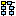

Parent Directory | Revision Log |  Revision Graph
Made RECOPolPlots more flexible/safe, factored out Collins-Soper frame boost, general tidy-up
/*! \file JadPlottingOps.cc
* \brief Source code for the Monte Carlo-based plotting operations.
*/
#include "JadPlottingOps.hh"
#include "reweightingFactors.hh"
#include "GenObject.hh"
#include "GenMatrixBin.hh"
#include "Lepton.hh"
#include "EventData.hh"
#include "Math/VectorUtil.h"
#include "TVector3.h"
#include "TLorentzVector.h"
#include "TH1.h"
#include <sstream>
#include <iostream>
namespace Operation {
TLorentzVector TLVConvert(const LorentzV * particle) {
TLorentzVector TLVparticle(particle->Px(), particle->Py(), particle->Pz(), particle->E());
return TLVparticle;
}
//====================================
// CS Frame Transformation Function
//====================================
TLorentzVector CSTransform(const TLorentzVector & input_particle, const TLorentzVector & w_vector) {
bool printinfo = false; //change to select option to print out stuff
TLorentzVector proton1;
TLorentzVector proton2;
TLorentzVector w(w_vector);
//TLorentzVector muon;
//TLorentzVector neutrino;
TLorentzVector output_particle(input_particle);
TVector3 boostvec;
//initialise our 3.5TeV protons!
proton1.SetXYZM(0.0,0.0,3500.0,1.0);
proton2.SetXYZM(0.0,0.0,-3500.0,1.0);
//w = w_vector;
//output_particle = input_particle;
boostvec = w.BoostVector();
proton1.Boost(-boostvec);
proton2.Boost(-boostvec);
output_particle.Boost(-boostvec);
//muon.Boost(-boostvec);
//neutrino.Boost(-boostvec);
if(printinfo) {
std::cout << "After boost into W rest-frame" << std::endl;
std::cout << "W boson: Px= " << w.Px() << " Py= " << w.Py() << " Pz= " << w.Pz() << std::endl;
std::cout << "Proton1: Px= " << proton1.Px() << " Py= " << proton1.Py() << " Pz= " << proton1.Pz() << std::endl;
std::cout << "Proton2: Px= " << proton2.Px() << " Py= " << proton2.Py() << " Pz= " << proton2.Pz() << std::endl;
std::cout << "Angle between protons in W-rest frame = " << proton1.Angle(proton2.Vect()) << std::endl;
}
TVector3 normal_plane1;
TVector3 normal_plane2;
//this is just the cross product between the two proton vector which gives a vector normal to both of them (but not a unit vector)
double xp_i = (proton1.Py() * proton2.Pz()) - (proton1.Pz() * proton2.Py());
double xp_j = (proton1.Pz() * proton2.Px()) - (proton1.Px() * proton2.Pz());
double xp_k = (proton1.Px() * proton2.Py()) - (proton1.Py() * proton2.Px());
normal_plane1.SetXYZ(xp_i, xp_j, xp_k);
normal_plane2.SetXYZ(0.0,1.0,0.0);
//use the vector normal to the x-z plane and the vec normal to both protons to find the rotation angle
double rotation_angle = TMath::Pi() - normal_plane1.Angle(normal_plane2);
if(printinfo) {
std::cout << "Angle between two planes: " << rotation_angle << std::endl;
}
//now rotate the boosted protons about the line of intersection (TVector3) of the two planes by the angle above
TVector3 rotation_axis;
//this is the cross product of the two normal vectors, which gives a vector parallel to the line of intersection
double xp2_i = -1.0 * normal_plane1.Pz();
double xp2_j = 0.0;
double xp2_k = normal_plane1.Px();
rotation_axis.SetXYZ(xp2_i, xp2_j, xp2_k);
//perform the rotation by the angle
proton1.Rotate(-rotation_angle, rotation_axis);
proton2.Rotate(-rotation_angle, rotation_axis);
output_particle.Rotate(-rotation_angle, rotation_axis);
//muon.Rotate(-rotation_angle, rotation_axis);
//neutrino.Rotate(-rotation_angle, rotation_axis);
if(printinfo) {
std::cout << "After rotation" << std::endl;
std::cout << "W boson: Px= " << w.Px() << " Py= " << w.Py() << " Pz= " << w.Pz() << std::endl;
std::cout << "Proton1: Px= " << proton1.Px() << " Py= " << proton1.Py() << " Pz= " << proton1.Pz() << std::endl;
std::cout << "Proton2: Px= " << proton2.Px() << " Py= " << proton2.Py() << " Pz= " << proton2.Pz() << std::endl;
std::cout << "Angle between protons in W-rest frame = " << proton1.Angle(proton2.Vect()) << std::endl;
}
//now need to rotate again so that the z-axis bisects (i.e. cuts equally in two) the angle between the proton and the negative proton moving against z-dir originally
//start by calculating the angle between each vector and the z-axis
TVector3 zaxis;
zaxis.SetXYZ(0.0, 0.0, 1.0);
if(printinfo) {
std::cout << "Angle between proton1 and z-axis = " << proton1.Angle(zaxis) << std::endl;
//std::cout << "Angle between proton2 and z-axis = " << proton2.Angle(zaxis) << std::endl;
std::cout << "Angle between -proton2 and z-axis = " << (-1.0*proton2).Angle(zaxis) << std::endl;
}
//then rotate around y, the negative average of the values
//the reason there is a minus sign is because in general, the z-axis will already be between the two vectors and the Angle() method does not return a sign...
double rotation_angle2 = ((-1.0*proton2).Angle(zaxis) - proton1.Angle(zaxis)) / 2.0;
proton1.RotateY(-rotation_angle2);
proton2.RotateY(-rotation_angle2);
output_particle.RotateY(-rotation_angle2);
//muon.RotateY(-rotation_angle2);
//neutrino.RotateY(-rotation_angle2);
if(printinfo) {
std::cout << rotation_angle2 << std::endl;
std::cout << "In Collins-Soper Frame" << std::endl;
std::cout << "W boson: Px= " << w.Px() << " Py= " << w.Py() << " Pz= " << w.Pz() << std::endl;
std::cout << "Proton1: Px= " << proton1.Px() << " Py= " << proton1.Py() << " Pz= " << proton1.Pz() << std::endl;
std::cout << "Proton2: Px= " << proton2.Px() << " Py= " << proton2.Py() << " Pz= " << proton2.Pz() << std::endl;
std::cout << "Angle between protons = " << proton1.Angle(proton2.Vect()) << std::endl;
std::cout << "Angle between proton1 and z-axis = " << proton1.Angle(zaxis) << std::endl;
std::cout << "Angle between -proton2 and z-axis = " << (-1.0*proton2).Angle(zaxis) << std::endl;
std::cout << "----- End of event -----" << std::endl << std::endl;
}
return output_particle;
}
//====================================
// Boost Calculation Function
//====================================
jSolutionsW FindBoost(const TLorentzVector & jMuon, const double & jVWPx, const double & jVWPy, const double & jVWPz, const bool & cheat=true, const bool & approximate=true, const double & jVWM=80.4) {
//jSolutionsW FindBoost(const LorentzV & jMuonV, const double & jVWPx, const double & jVWPy, const double & jVWPz, const bool & cheat=true, const bool & approximate=true, const double & jVWM=80.4) {
//by having the function in this form, you can slot various combinations for the (px,py,pz) components
//the cheat variable allows you to choose if you want sol1/sol2 or rightsol/wrongsol - for this you need to pass jVWPz of the real W
//the approximate variable allows you to choose if you want the approximation using mw=80.4, or the true generator boost back to the W rest frame - must supply jVWM
//the cheat variable is redundant if the approximate variable is set to false
//you can follow this calculation if you start from the four-vector argument P_W = P_Mu + P_MuNu and rearrange so P_MuNu is on its own.
//then square both sides, taking mass_neutrino = 0. Also the dot product of two threevectors is p1xp2x+p1yp2y+p1zp2z and not p1 p2 cos(theta_12)
//since theta_12 relies on knowing the pz components...
//To change from TLorentzVector to ROOT::Math::LorentzVector<ROOT::Math::PxPyPzE4D<double> > the following mod must be made to preserve the code below
//TLorentzVector jMuon(jMuonV.x(),jMuonV.y(),jMuonV.z(),jMuonV.t());
jSolutionsW results;
TLorentzVector jRestMu, jTemp4V;
TVector3 jTempBV;
double CosThetaStarSol1, CosThetaStarSol2;
if(approximate) {
double jVWPt2 = ((jVWPx * jVWPx) + (jVWPy * jVWPy)); //this is the Pt squared
double delta = ((80.4*80.4)+(0.106*0.106))/2.0 + (jVWPx * jMuon.Px()) + (jVWPy * jMuon.Py());
double alpha = (jMuon.E() * jMuon.E()) - (jMuon.Pz() * jMuon.Pz());
double beta = -2.0 * delta * jMuon.Pz();
double gamma = (jMuon.E() * jMuon.E()) * (jVWPt2 + (80.4*80.4)) - (delta * delta);
double discarg = (beta*beta) - (4*alpha*gamma);
if(discarg > 0) {
double discriminant = sqrt(discarg);
double sol1 = (-1.0*beta + discriminant) / (2*alpha);
double sol2 = (-1.0*beta - discriminant) / (2*alpha);
results.realSolutions = true; //since the discriminant is >0, we get real solutions
jRestMu = jMuon;
jTemp4V.SetXYZM(jVWPx,jVWPy,sol1,80.4);
jTempBV = jTemp4V.BoostVector();
jRestMu.Boost(-jTempBV);
CosThetaStarSol1 = cos(ROOT::Math::VectorUtil::Angle(jRestMu,jTemp4V));
jRestMu = jMuon;
jTemp4V.SetXYZM(jVWPx,jVWPy,sol2,80.4);
jTempBV = jTemp4V.BoostVector();
jRestMu.Boost(-jTempBV);
CosThetaStarSol2 = cos(ROOT::Math::VectorUtil::Angle(jRestMu,jTemp4V));
if(cheat) {
if(fabs(sol1 - jVWPz) < fabs(sol2 - jVWPz)) {
results.rightSol = CosThetaStarSol1;
results.wrongSol = CosThetaStarSol2;
} else {
results.rightSol = CosThetaStarSol2;
results.wrongSol = CosThetaStarSol1;
}
results.sol1 = 0.0;
results.sol2 = 0.0;
return results;
} else {
results.rightSol = 0.0;
results.wrongSol = 0.0;
results.sol1 = CosThetaStarSol1;
results.sol2 = CosThetaStarSol2;
return results;
}
} else {
results.realSolutions = false;
results.rightSol = 0.0;
results.wrongSol = 0.0;
results.sol1 = 0.0;
results.sol2 = 0.0;
return results;
}
} else {
jRestMu = jMuon;
jTemp4V.SetXYZM(jVWPx,jVWPy,jVWPz,jVWM);
jTempBV = jTemp4V.BoostVector();
jRestMu.Boost(-jTempBV);
CosThetaStarSol1 = cos(ROOT::Math::VectorUtil::Angle(jRestMu,jTemp4V));
results.realSolutions = true;
results.rightSol = CosThetaStarSol1;
results.wrongSol = 0.0;
results.sol1 = 0.0;
results.sol2 = 0.0;
return results;
}
}
//====================================
// MCWPlots implementation
//====================================
//a brief note about this class - it has evolved quite a lot
//note the replacement by eta with rapidity e.g. and also it used to be just muons (most histograms are still artefacts of this) but now has been generalised to leptons
//to get the 100% left handed case etc, reweight acording to the factors in the methods below (see the standalone macro for how this is filled)
/*
std::vector<double> & MCWPlots::LHM() {
static std::vector<double> lhm_coeff = init_lhm();
return lhm_coeff;
}
std::vector<double> & MCWPlots::LHP() {
static std::vector<double> lhp_coeff = init_lhp();
return lhp_coeff;
}
*/
std::vector< std::vector<jFitParameters> > & GetFitParameters() {
static std::vector< std::vector<jFitParameters> > binned_fit_params = init_fit_params();
return binned_fit_params;
}
double BinFraction(const double & alpha, const double & beta, const double & gamma, const unsigned int & bin) {
//the format i'm using for the fit function is as follows:
//alpha * (1-x)^2 +
//beta * (1+x)^2 +
//gamma * (1-x^2)
//for all our plots, we have a defined bin width for the gen level cos(theta*) plots
double bin_width = 0.01;
//bin 0 by our definition is the bin between -1.00 and -0.99 etc
//subtract 1.0 below to go back to region cos(theta*) = (-1.0, 1.0)
double bin_lowedge = double(bin)*bin_width - 1.0;
//now make some easy to use variable names for the calculation below
double a = bin_lowedge;
double b = bin_lowedge + bin_width;
double bin_integral = IntegralValue(a,b, alpha, beta, gamma);
//std::cout << "bin_integral = "<< bin_integral << std::endl;
double total_integral = IntegralValue(-1.0,1.0, alpha, beta, gamma); //test for 0
//std::cout << "total_integral = "<< total_integral << std::endl;
double fraction = bin_integral / total_integral;
return fraction;
}
double IntegralValue(const double & a, const double & b, const double & alpha, const double & beta, const double & gamma) {
//below is what you get if you integrate by hand the three components and evaluate them between b and a
double alpha_part = 1.0/4.0 * ((b-a) - ((b*b)-(a*a)) + ((1.0/3.0)*((b*b*b) - (a*a*a))));
double beta_part = 1.0/4.0 * ((b-a) + ((b*b)-(a*a)) + ((1.0/3.0)*((b*b*b) - (a*a*a))));
double gamma_part = 1.0/2.0 * ((b-a) - (1.0/3.0)*((b*b*b) - (a*a*a)));
double total_integral = ((alpha*alpha_part) + (beta*beta_part) + (gamma*gamma_part));
return total_integral;
}
double CorrFactor(const double & PTW, const double & YW, const unsigned int & bin, const bool & poscharge, const unsigned int & norm_type) {
if(norm_type > 2) std::cout << "Why is norm_type greater than 2? There are only 3 polarisation modes!" << std::endl;
double alpha=0.0, beta=0.0, gamma=0.0;
//initialise the (alpha,beta,gamma) parameters for the different scenarios - namely charge(-,+) with norm_type (LH=0, RH=1, LO=2)
if(poscharge) {
if(norm_type == 0) {alpha=1.0;beta=0.0;gamma=0.0;}
if(norm_type == 1) {alpha=0.0;beta=1.0;gamma=0.0;}
if(norm_type == 2) {alpha=0.0;beta=0.0;gamma=1.0;}
}else{
if(norm_type == 0) {alpha=0.0;beta=1.0;gamma=0.0;}
if(norm_type == 1) {alpha=1.0;beta=0.0;gamma=0.0;}
if(norm_type == 2) {alpha=0.0;beta=0.0;gamma=1.0;}
}
double norm_type_ratio = BinFraction(alpha, beta, gamma, bin);
//std::cout << "norm_type_ratio = " << norm_type_ratio << std::endl;
//now here is where the lookup for the appropriate alpha,beta,gamma factors happens according to W Pt and Y bins
//revise this quanta stuff as appropriate - the bins we are using are:
//W Pt, 0-50, 50-100, 100+
//W |Y|, 0-0.5, 0.5-1.0, 1.0-1.5, 1.5-2.0, 2.0-2.5, 2.5-3.0, 3.0+
unsigned int PTWbin = 0;
if(PTW <= 50.0) PTWbin = 0;
if(PTW <= 100.0 && PTW > 50.0) PTWbin = 1;
if(PTW > 100.0) PTWbin = 2;
unsigned int YWbin = 0;
if(fabs(YW) <= 0.5) YWbin=0;
if(fabs(YW) <= 1.0 && fabs(YW) > 0.5) YWbin=1;
if(fabs(YW) <= 1.5 && fabs(YW) > 1.0) YWbin=2;
if(fabs(YW) <= 2.0 && fabs(YW) > 1.5) YWbin=3;
if(fabs(YW) <= 2.5 && fabs(YW) > 2.0) YWbin=4;
if(fabs(YW) <= 3.0 && fabs(YW) > 2.5) YWbin=5;
if(fabs(YW) > 3.0) YWbin=6;
if(poscharge) {
alpha = GetFitParameters().at(PTWbin).at(YWbin).alpha_plus;
beta = GetFitParameters().at(PTWbin).at(YWbin).beta_plus;
gamma = GetFitParameters().at(PTWbin).at(YWbin).gamma_plus;
}else{
alpha = GetFitParameters().at(PTWbin).at(YWbin).alpha_minus;
beta = GetFitParameters().at(PTWbin).at(YWbin).beta_minus;
gamma = GetFitParameters().at(PTWbin).at(YWbin).gamma_minus;
}
double curr_type_ratio = BinFraction(alpha, beta, gamma, bin); //test for 0
//std::cout << "curr_type_ratio = " << curr_type_ratio << std::endl;
double corr_factor = norm_type_ratio/curr_type_ratio;
return corr_factor;
}
MCWPlots::MCWPlots(const std::string & folderName) :
mFolderName(folderName) {}
MCWPlots::~MCWPlots() {}
void MCWPlots::Start(Event::Data & ev) {
initDir(ev.OutputFile(), mFolderName.c_str());
BookHistos();
}
void MCWPlots::BookHistos() {
TH1::SetDefaultSumw2(kTRUE);
MC_WMultiplicity = new TH1D("MC_WMultiplicity", ";genW Multiplicity;Events / 100 pb^{-1}", 20,-0.5,19.5);
MC_MuonMultiplicity = new TH1D("MC_MuonMultiplicity", ";genMuon Multiplicity;Events / 100 pb^{-1}", 20,-0.5,19.5);
MC_MuonNuMultiplicity = new TH1D("MC_MuonNuMultiplicity", ";genMuonNu Multiplicity;Events / 100 pb^{-1}", 20,-0.5,19.5);
MC_JetMultiplicity = new TH1D("MC_JetMultiplicity",";genJet Multiplicity;Events / 100 pb^{-1}", 20,-0.5,19.5);
MC_JetMultiplicityAll = new TH1D("MC_JetMultiplicityAll",";All genJet Multiplicity;Events / 100 pb^{-1}", 20,-0.5,19.5);
MC_JetPt = new TH1D("MC_JetPt",";genJet P_{T} distribution;Events / 100 pb^{-1}",1000,-0.5,999.5);
MC_JetEta = new TH1D("MC_JetEta",";genJet #eta distribution;Events / 100 pb^{-1}",100,-5.5,4.5);
MC_JetPtAll = new TH1D("MC_JetPtAll",";All genJet P_{T} distribution;Events / 100 pb^{-1}",1000,-0.5,999.5);
MC_JetEtaAll = new TH1D("MC_JetEtaAll",";All genJet #eta distribution;Events / 100 pb^{-1}",100,-5.5,4.5);
MC_JetMHT = new TH1D("MC_JetMHT",";genJet MHT magnitude;Events / 100 pb^{-1}",1000,-0.5,999.5);
MC_JetMHT2 = new TH1D("MC_JetMHT2",";genJet MHT2 magnitude;Events / 100 pb^{-1}",1000,-0.5,999.5);
MC_VirtualWMass = new TH1D("MC_VirtualWMass",";Virtual W Mass;Events / 100 pb^{-1}",400,59.5,99.5);
MC_VirtualWMassRe = new TH1D("MC_VirtualWMassRe",";Virtual W Mass for real solutions to pz;Events / 100 pb^{-1}",400,59.5,99.5);
MC_VirtualWMassIm = new TH1D("MC_VirtualWMassIm",";Virtual W Mass for imaginary solutions to pz;Events / 100 pb^{-1}",400,59.5,99.5);
MC_WPT = new TH1D("MC_WPT", ";genW P_{T};Events / 100 pb^{-1}", 1000,-0.5,999.5);
MC_WEta = new TH1D("MC_WEta", ";genW #eta;Events / 100 pb^{-1}",100,-5.05,4.95);
MC_WY = new TH1D("MC_WY", ";genW Y;Events / 100 pb^{-1}",5000,-25.05,24.95);
MC_WPtPlus = new TH1D("MC_WPtPlus", ";genW^{+} P_{T};Events / 100 pb^{-1}", 1000,-0.5,999.5);
MC_WPtMinus = new TH1D("MC_WPtMinus", ";genW^{-} P_{T};Events / 100 pb^{-1}", 1000,-0.5,999.5);
MC_WEtaPlus = new TH1D("MC_WEtaPlus",";genW^{+} #eta;Events / 100 pb^{-1}", 250,-0.5,24.5);
MC_WYPlus= new TH1D("MC_WYPlus",";genW^{+} |Y|;Events / 100 pb^{-1}", 50,-0.05,4.95);
MC_WEtaMinus = new TH1D("MC_WEtaMinus",";genW^{-} #eta;Events / 100 pb^{-1}", 250,-0.5,24.5);
MC_WYMinus= new TH1D("MC_WYMinus",";genW^{-} |Y|;Events / 100 pb^{-1}", 50,-0.05,4.95);
MC_MHTGenJetsWPtDiff = new TH1D("MC_MHTGenJetsWPtDiff",";#Delta (MH_{T}, W P_{T}) / genW P_{T};Events / 100 pb^{-1}",100,-5.5,4.5);
MC_MHTAllGenJetsWPtDiff = new TH1D("MC_MHTAllGenJetsWPtDiff",";#Delta (MH_{T}, W P_{T}) / genW P_{T};Events / 100 pb^{-1}",100,-5.5,4.5);
MC_MHT2GenJetsWPtDiff = new TH1D("MC_MHT2GenJetsWPtDiff",";#Delta (MH_{T}2, W P_{T}) / genW P_{T};Events / 100 pb^{-1}",100,-5.5,4.5);
MC_MuonPt = new TH1D("MC_MuonPt", ";genW to #mu P_{T} ;Events / 100 pb^{-1}", 1000,-0.5,999.5);
MC_MuonEta = new TH1D("MC_MuonEta",";genW to #mu #eta;Events / 100 pb^{-1}",100,-5.5,4.5);
MC_MuonEtaAbs = new TH1D("MC_MuonEtaAbs",";genW to #mu |#eta|;Events / 100 pb^{-1}",50,-0.5,4.5);
MC_MuonNuPt = new TH1D("MC_MuonNuPt", ";genW to #mu #nu P_{T} ;Events / 100 pb^{-1}", 1000,-0.5,999.5);
MC_MuonNuEta = new TH1D("MC_MuonNuEta",";genW to #mu #nu #eta;Events / 100 pb^{-1}",100,-5.5,4.5);
MC_MuonNuEtaAbs = new TH1D("MC_MuonNuEtaAbs",";genW to #mu #nu |#eta|;Events / 100 pb^{-1}",50,-0.5,4.5);
MC_MuonPtCut1 = new TH1D("MC_MuonPtCut1",";#mu P_{T}, p_{T} > 10 GeV |#eta| < 2.1;Events / 100 pb^{-1}",1000,-0.5,999.5);
MC_MuonPtCut2 = new TH1D("MC_MuonPtCut2",";#mu P_{T}, p_{T} > 20 GeV |#eta| < 2.1;Events / 100 pb^{-1}",1000,-0.5,999.5);
MC_MuonEtaCut1 = new TH1D("MC_MuonEtaCut1",";#mu #eta, p_{T} > 10 GeV |#eta| < 2.1;Events / 100 pb^{-1}",100,-5.5,4.5);
MC_MuonEtaCut2 = new TH1D("MC_MuonEtaCut2",";#mu #eta, p_{T} > 20 GeV |#eta| < 2.1;Events / 100 pb^{-1}",100,-5.5,4.5);
MC_MuonNuPtCut1 = new TH1D("MC_MuonNuPtCut1",";#mu #nu P_{T}, p_{T} > 10 GeV |#eta| < 2.1;Events / 100 pb^{-1}",1000,-0.5,999.5);
MC_MuonNuPtCut2 = new TH1D("MC_MuonNuPtCut2",";#mu #nu P_{T}, p_{T} > 20 GeV |#eta| < 2.1;Events / 100 pb^{-1}",1000,-0.5,999.5);
MC_MuonNuEtaCut1 = new TH1D("MC_MuonNuEtaCut1",";#mu #nu #eta, p_{T} > 10 GeV |#eta| < 2.1;Events / 100 pb^{-1}",100,-5.5,4.5);
MC_MuonNuEtaCut2 = new TH1D("MC_MuonNuEtaCut2",";#mu #nu #eta, p_{T} > 20 GeV |#eta| < 2.1;Events / 100 pb^{-1}",100,-5.5,4.5);
MC_MuonNuPtCut1Plus = new TH1D("MC_MuonNuPtCut1Plus",";#mu^{+} #nu p_{T} cut1;Events / 100 pb^{-1}",1000,-0.5,999.5);
MC_MuonPtCut1Plus = new TH1D("MC_MuonPtCut1Plus",";#mu^{+} p_{T} cut1;Events / 100 pb^{-1}",1000,-0.5,999.5);
MC_MuonNuPtCut1Minus = new TH1D("MC_MuonNuPtCut1Minus",";#mu^{-} #nu p_{T} cut1;Events / 100 pb^{-1}",1000,-0.5,999.5);
MC_MuonPtCut1Minus = new TH1D("MC_MuonPtCut1Minus",";#mu^{-} p_{T} cut1;Events / 100 pb^{-1}",1000,-0.5,999.5);
MC_MuonNuPtCut2Plus = new TH1D("MC_MuonNuPtCut2Plus",";#mu^{+} #nu p_{T} cut2;Events / 100 pb^{-1}",1000,-0.5,999.5);
MC_MuonPtCut2Plus = new TH1D("MC_MuonPtCut2Plus",";#mu^{+} p_{T} cut2;Events / 100 pb^{-1}",1000,-0.5,999.5);
MC_MuonNuPtCut2Minus = new TH1D("MC_MuonNuPtCut2Minus",";#mu^{-} #nu p_{T} cut2;Events / 100 pb^{-1}",1000,-0.5,999.5);
MC_MuonPtCut2Minus = new TH1D("MC_MuonPtCut2Minus",";#mu^{-} p_{T} cut2;Events / 100 pb^{-1}",1000,-0.5,999.5);
MC_MuonPtPlus = new TH1D("MC_MuonPtPlus",";#mu^+ P_{T};Events / 100 pb^{-1}",1000,-0.5,999.5);
MC_MuonNuPtPlus = new TH1D("MC_MuonNuPtPlus",";#mu^+ #nu P_{T};Events / 100 pb^{-1}",1000,-0.5,999.5);
MC_MuonEtaPlus = new TH1D("MC_MuonEtaPlus",";#mu^+ #eta;Events / 100 pb^{-1}",100,-5.5,4.5);
MC_MuonEtaAbsPlus = new TH1D("MC_MuonEtaAbsPlus",";#mu^+ |#eta|;Events / 100 pb^{-1}",50,-0.5,4.5);
MC_MuonNuEtaPlus = new TH1D("MC_MuonNuEtaPlus",";#mu^+ #nu #eta;Events / 100 pb^{-1}",100,-5.5,4.5);
MC_MuonNuEtaAbsPlus = new TH1D("MC_MuonNuEtaAbsPlus",";#mu^+ #nu |#eta|;Events / 100 pb^{-1}",50,-0.5,4.5);
MC_ICVarPlus = new TH1D("MC_ICVarPlus",";IC Variable #mu^{+};Events / 100 pb^{-1}",500,-2.5,2.5);
MC_ICVarPlus_LH = new TH1D("MC_ICVarPlus_LH",";IC Variable #mu^{+} LH;Events / 100 pb^{-1}",500,-2.5,2.5);
MC_ICVarPlus_RH = new TH1D("MC_ICVarPlus_RH",";IC Variable #mu^{+} RH;Events / 100 pb^{-1}",500,-2.5,2.5);
MC_ICVarPlus_LO = new TH1D("MC_ICVarPlus_LO",";IC Variable #mu^{+} LO;Events / 100 pb^{-1}",500,-2.5,2.5);
MC_ICVarPlusMuonAcc = new TH1D("MC_ICVarPlusMuonAcc",";IC Variable #mu^{+};Events / 100 pb^{-1}",500,-2.5,2.5);
MC_ICVarPlusMuonAcc_LH = new TH1D("MC_ICVarPlusMuonAcc_LH",";IC Variable #mu^{+} LH;Events / 100 pb^{-1}",500,-2.5,2.5);
MC_ICVarPlusMuonAcc_RH = new TH1D("MC_ICVarPlusMuonAcc_RH",";IC Variable #mu^{+} RH;Events / 100 pb^{-1}",500,-2.5,2.5);
MC_ICVarPlusMuonAcc_LO = new TH1D("MC_ICVarPlusMuonAcc_LO",";IC Variable #mu^{+} LO;Events / 100 pb^{-1}",500,-2.5,2.5);
MC_MuonPtMinus = new TH1D("MC_MuonPtMinus",";#mu^- P_{T};Events / 100 pb^{-1}",1000,-0.5,999.5);
MC_MuonNuPtMinus = new TH1D("MC_MuonNuPtMinus",";#mu^- #nu P_{T};Events / 100 pb^{-1}",1000,-0.5,999.5);
MC_MuonEtaMinus = new TH1D("MC_MuonEtaMinus",";#mu^- #eta;Events / 100 pb^{-1}",100,-5.5,4.5);
MC_MuonEtaAbsMinus = new TH1D("MC_MuonEtaAbsMinus",";#mu^- |#eta|;Events / 100 pb^{-1}",50,-0.5,4.5);
MC_MuonNuEtaMinus = new TH1D("MC_MuonNuEtaMinus",";#mu^- #nu #eta;Events / 100 pb^{-1}",100,-5.5,4.5);
MC_MuonNuEtaAbsMinus = new TH1D("MC_MuonNuEtaAbsMinus",";#mu^- #nu |#eta|;Events / 100 pb^{-1}",50,-0.5,4.5);
MC_ICVarMinus = new TH1D("MC_ICVarMinus",";IC Variable #mu^-;Events / 100 pb^{-1}",500,-2.5,2.5);
MC_ICVarMinus_LH = new TH1D("MC_ICVarMinus_LH",";IC Variable #mu^{-} LH;Events / 100 pb^{-1}",500,-2.5,2.5);
MC_ICVarMinus_RH = new TH1D("MC_ICVarMinus_RH",";IC Variable #mu^{-} RH;Events / 100 pb^{-1}",500,-2.5,2.5);
MC_ICVarMinus_LO = new TH1D("MC_ICVarMinus_LO",";IC Variable #mu^{-} LO;Events / 100 pb^{-1}",500,-2.5,2.5);
MC_ICVarMinusMuonAcc = new TH1D("MC_ICVarMinusMuonAcc",";IC Variable #mu^-;Events / 100 pb^{-1}",500,-2.5,2.5);
MC_ICVarMinusMuonAcc_LH = new TH1D("MC_ICVarMinusMuonAcc_LH",";IC Variable #mu^{-} LH;Events / 100 pb^{-1}",500,-2.5,2.5);
MC_ICVarMinusMuonAcc_RH = new TH1D("MC_ICVarMinusMuonAcc_RH",";IC Variable #mu^{-} RH;Events / 100 pb^{-1}",500,-2.5,2.5);
MC_ICVarMinusMuonAcc_LO = new TH1D("MC_ICVarMinusMuonAcc_LO",";IC Variable #mu^{-} LO;Events / 100 pb^{-1}",500,-2.5,2.5);
MC_WPlusPzMatching = new TH1D("MC_WPlusPzMatching",";False/True;Events",2,-0.5,1.5);
MC_WMinusPzMatching = new TH1D("MC_WMinusPzMatching",";False/True;Events",2,-0.5,1.5);
MC_CosThetaStar1Plus = new TH1D("MC_CosThetaStar1Plus", ";cos #theta^{*} from W^{+} ;Events / 100 pb^{-1}", 300,-1.5,1.5);
MC_CosThetaStar1Minus = new TH1D("MC_CosThetaStar1Minus", ";cos #theta^{*} from W^{-} ;Events / 100 pb^{-1}", 300,-1.5,1.5);
MC_CosThetaStar2Plus = new TH1D("MC_CosThetaStar2Plus", ";cos #theta^{*} from W^{+} ;Events / 100 pb^{-1}", 300,-1.5,1.5);
MC_CosThetaStar2Minus = new TH1D("MC_CosThetaStar2Minus", ";cos #theta^{*} from W^{-} ;Events / 100 pb^{-1}", 300,-1.5,1.5);
MC_CosThetaStar3Plus = new TH1D("MC_CosThetaStar3Plus", ";cos #theta^{*} from W^{+} ;Events / 100 pb^{-1}", 300,-1.5,1.5);
MC_CosThetaStar3Minus = new TH1D("MC_CosThetaStar3Minus", ";cos #theta^{*} from W^{-} ;Events / 100 pb^{-1}", 300,-1.5,1.5);
MC_CosThetaStar1Minus_LH = new TH1D("MC_CosThetaStar1Minus_LH", ";cos #theta^{*} from W^{-} LH ;Events / 100 pb^{-1}", 300,-1.5,1.5);
MC_CosThetaStar1Minus_RH = new TH1D("MC_CosThetaStar1Minus_RH", ";cos #theta^{*} from W^{-} RH ;Events / 100 pb^{-1}", 300,-1.5,1.5);
MC_CosThetaStar1Minus_LO = new TH1D("MC_CosThetaStar1Minus_LO", ";cos #theta^{*} from W^{-} LO ;Events / 100 pb^{-1}", 300,-1.5,1.5);
MC_CosThetaStar1Plus_LH = new TH1D("MC_CosThetaStar1Plus_LH", ";cos #theta^{*} from W^{+} LH ;Events / 100 pb^{-1}", 300,-1.5,1.5);
MC_CosThetaStar1Plus_RH = new TH1D("MC_CosThetaStar1Plus_RH", ";cos #theta^{*} from W^{+} RH ;Events / 100 pb^{-1}", 300,-1.5,1.5);
MC_CosThetaStar1Plus_LO = new TH1D("MC_CosThetaStar1Plus_LO", ";cos #theta^{*} from W^{+} LO ;Events / 100 pb^{-1}", 300,-1.5,1.5);
MC_CosThetaStar1PlusMuonAcc = new TH1D("MC_CosThetaStar1PlusMuonAcc", ";cos #theta^{*} from W^{+} ;Events / 100 pb^{-1}", 300,-1.5,1.5);
MC_CosThetaStar1MinusMuonAcc = new TH1D("MC_CosThetaStar1MinusMuonAcc", ";cos #theta^{*} from W^{-} ;Events / 100 pb^{-1}", 300,-1.5,1.5);
MC_CosThetaStar1MinusMuonAcc_LH = new TH1D("MC_CosThetaStar1MinusMuonAcc_LH", ";cos #theta^{*} from W^{-} LH ;Events / 100 pb^{-1}", 300,-1.5,1.5);
MC_CosThetaStar1MinusMuonAcc_RH = new TH1D("MC_CosThetaStar1MinusMuonAcc_RH", ";cos #theta^{*} from W^{-} RH ;Events / 100 pb^{-1}", 300,-1.5,1.5);
MC_CosThetaStar1MinusMuonAcc_LO = new TH1D("MC_CosThetaStar1MinusMuonAcc_LO", ";cos #theta^{*} from W^{-} LO ;Events / 100 pb^{-1}", 300,-1.5,1.5);
MC_CosThetaStar1PlusMuonAcc_LH = new TH1D("MC_CosThetaStar1PlusMuonAcc_LH", ";cos #theta^{*} from W^{+} LH ;Events / 100 pb^{-1}", 300,-1.5,1.5);
MC_CosThetaStar1PlusMuonAcc_RH = new TH1D("MC_CosThetaStar1PlusMuonAcc_RH", ";cos #theta^{*} from W^{+} RH ;Events / 100 pb^{-1}", 300,-1.5,1.5);
MC_CosThetaStar1PlusMuonAcc_LO = new TH1D("MC_CosThetaStar1PlusMuonAcc_LO", ";cos #theta^{*} from W^{+} LO ;Events / 100 pb^{-1}", 300,-1.5,1.5);
//for W Eta bins
MC_CosThetaStar1RightPzWEtaBin1Plus = new TH1D("MC_CosThetaStar1RightPzWEtaBin1Plus",";cos #theta^{*} from W^{+} #eta < 0.5;Events / 100 pb^{-1}",300,-1.5,1.5);
MC_CosThetaStar1RightPzWEtaBin1Minus = new TH1D("MC_CosThetaStar1RightPzWEtaBin1Minus",";cos #theta^{*} from W^{-} #eta < 0.5;Events / 100 pb^{-1}",300,-1.5,1.5);
MC_CosThetaStar1RightPzWEtaBin2Plus = new TH1D("MC_CosThetaStar1RightPzWEtaBin2Plus",";cos #theta^{*} from W^{+} 0.5 < #eta < 1.0;Events / 100 pb^{-1}",300,-1.5,1.5);
MC_CosThetaStar1RightPzWEtaBin2Minus = new TH1D("MC_CosThetaStar1RightPzWEtaBin2Minus",";cos #theta^{*} from W^{-} 0.5 < #eta < 1.0;Events / 100 pb^{-1}",300,-1.5,1.5);
MC_CosThetaStar1RightPzWEtaBin3Plus = new TH1D("MC_CosThetaStar1RightPzWEtaBin3Plus",";cos #theta^{*} from W^{+} 1.0 < #eta < 1.5;Events / 100 pb^{-1}",300,-1.5,1.5);
MC_CosThetaStar1RightPzWEtaBin3Minus = new TH1D("MC_CosThetaStar1RightPzWEtaBin3Minus",";cos #theta^{*} from W^{-} 1.0 < #eta < 1.5;Events / 100 pb^{-1}",300,-1.5,1.5);
MC_CosThetaStar1RightPzWEtaBin4Plus = new TH1D("MC_CosThetaStar1RightPzWEtaBin4Plus",";cos #theta^{*} from W^{+} 1.5 < #eta < 2.0;Events / 100 pb^{-1}",300,-1.5,1.5);
MC_CosThetaStar1RightPzWEtaBin4Minus = new TH1D("MC_CosThetaStar1RightPzWEtaBin4Minus",";cos #theta^{*} from W^{-} 1.5 < #eta < 2.0;Events / 100 pb^{-1}",300,-1.5,1.5);
MC_CosThetaStar1RightPzWEtaBin5Plus = new TH1D("MC_CosThetaStar1RightPzWEtaBin5Plus",";cos #theta^{*} from W^{+} 2.0 < #eta < 2.5;Events / 100 pb^{-1}",300,-1.5,1.5);
MC_CosThetaStar1RightPzWEtaBin5Minus = new TH1D("MC_CosThetaStar1RightPzWEtaBin5Minus",";cos #theta^{*} from W^{-} 2.0 < #eta < 2.5;Events / 100 pb^{-1}",300,-1.5,1.5);
MC_CosThetaStar1RightPzWEtaBin6Plus = new TH1D("MC_CosThetaStar1RightPzWEtaBin6Plus",";cos #theta^{*} from W^{+} 2.5 < #eta < 3.0;Events / 100 pb^{-1}",300,-1.5,1.5);
MC_CosThetaStar1RightPzWEtaBin6Minus = new TH1D("MC_CosThetaStar1RightPzWEtaBin6Minus",";cos #theta^{*} from W^{-} 2.5 < #eta < 3.0;Events / 100 pb^{-1}",300,-1.5,1.5);
MC_CosThetaStar1RightPzWEtaBin7Plus = new TH1D("MC_CosThetaStar1RightPzWEtaBin7Plus",";cos #theta^{*} from W^{+} 3.0 < #eta < 3.5;Events / 100 pb^{-1}",300,-1.5,1.5);
MC_CosThetaStar1RightPzWEtaBin7Minus = new TH1D("MC_CosThetaStar1RightPzWEtaBin7Minus",";cos #theta^{*} from W^{-} 3.0 < #eta < 3.5;Events / 100 pb^{-1}",300,-1.5,1.5);
MC_CosThetaStar1RightPzWEtaBin8Plus = new TH1D("MC_CosThetaStar1RightPzWEtaBin8Plus",";cos #theta^{*} from W^{+} 3.5 < #eta < 4.0;Events / 100 pb^{-1}",300,-1.5,1.5);
MC_CosThetaStar1RightPzWEtaBin8Minus = new TH1D("MC_CosThetaStar1RightPzWEtaBin8Minus",";cos #theta^{*} from W^{-} 3.5 < #eta < 4.0;Events / 100 pb^{-1}",300,-1.5,1.5);
MC_CosThetaStar1RightPzWEtaBin9Plus = new TH1D("MC_CosThetaStar1RightPzWEtaBin9Plus",";cos #theta^{*} from W^{+} 4.0 < #eta < 4.5;Events / 100 pb^{-1}",300,-1.5,1.5);
MC_CosThetaStar1RightPzWEtaBin9Minus = new TH1D("MC_CosThetaStar1RightPzWEtaBin9Minus",";cos #theta^{*} from W^{-} 4.0 < #eta < 4.5;Events / 100 pb^{-1}",300,-1.5,1.5);
MC_CosThetaStar1RightPzWEtaBin10Plus = new TH1D("MC_CosThetaStar1RightPzWEtaBin10Plus",";cos #theta^{*} from W^{+} 4.5 < #eta < 5.0;Events / 100 pb^{-1}",300,-1.5,1.5);
MC_CosThetaStar1RightPzWEtaBin10Minus = new TH1D("MC_CosThetaStar1RightPzWEtaBin10Minus",";cos #theta^{*} from W^{-} 4.5 < #eta < 5.0;Events / 100 pb^{-1}",300,-1.5,1.5);
MC_CosThetaStar1RightPzWEtaBin11Plus = new TH1D("MC_CosThetaStar1RightPzWEtaBin11Plus",";cos #theta^{*} from W^{+} #eta > 5.0;Events / 100 pb^{-1}",300,-1.5,1.5);
MC_CosThetaStar1RightPzWEtaBin11Minus = new TH1D("MC_CosThetaStar1RightPzWEtaBin11Minus",";cos #theta^{*} from W^{-} #eta > 5.0;Events / 100 pb^{-1}",300,-1.5,1.5);
//for W Pt bins
MC_CosThetaStar1RightPzWPtBin1Plus = new TH1D("MC_CosThetaStar1RightPzWPtBin1Plus",";cos #theta^{*} from W^{+} 100 < p_{T} < 200 ;Events / 100 pb^{-1}",300,-1.5,1.5);
MC_CosThetaStar1RightPzWPtBin1Minus = new TH1D("MC_CosThetaStar1RightPzWPtBin1Minus",";cos #theta^{*} from W^{-} 100 < p_{T} < 200;Events / 100 pb^{-1}",300,-1.5,1.5);
MC_CosThetaStar1RightPzWPtBin2Plus = new TH1D("MC_CosThetaStar1RightPzWPtBin2Plus",";cos #theta^{*} from W^{+} 200 < p_{T} < 300;Events / 100 pb^{-1}",300,-1.5,1.5);
MC_CosThetaStar1RightPzWPtBin2Minus = new TH1D("MC_CosThetaStar1RightPzWPtBin2Minus",";cos #theta^{*} from W^{-} 200 < p_{T} < 300;Events / 100 pb^{-1}",300,-1.5,1.5);
MC_CosThetaStar1RightPzWPtBin3Plus = new TH1D("MC_CosThetaStar1RightPzWPtBin3Plus",";cos #theta^{*} from W^{+} 300 < p_{T} < 400;Events / 100 pb^{-1}",300,-1.5,1.5);
MC_CosThetaStar1RightPzWPtBin3Minus = new TH1D("MC_CosThetaStar1RightPzWPtBin3Minus",";cos #theta^{*} from W^{-} 300 < p_{T} < 400;Events / 100 pb^{-1}",300,-1.5,1.5);
MC_CosThetaStar1RightPzWPtBin4Plus = new TH1D("MC_CosThetaStar1RightPzWPtBin4Plus",";cos #theta^{*} from W^{+} 400 < p_{T} < 500;Events / 100 pb^{-1}",300,-1.5,1.5);
MC_CosThetaStar1RightPzWPtBin4Minus = new TH1D("MC_CosThetaStar1RightPzWPtBin4Minus",";cos #theta^{*} from W^{-} 400 < p_{T} < 500;Events / 100 pb^{-1}",300,-1.5,1.5);
MC_CosThetaStar1RightPzWPtBin5Plus = new TH1D("MC_CosThetaStar1RightPzWPtBin5Plus",";cos #theta^{*} from W^{+} 500 < p_{T} < 600;Events / 100 pb^{-1}",300,-1.5,1.5);
MC_CosThetaStar1RightPzWPtBin5Minus = new TH1D("MC_CosThetaStar1RightPzWPtBin5Minus",";cos #theta^{*} from W^{-} 500 < p_{T} < 600;Events / 100 pb^{-1}",300,-1.5,1.5);
MC_CosThetaStar1RightPzWPtBin6Plus = new TH1D("MC_CosThetaStar1RightPzWPtBin6Plus",";cos #theta^{*} from W^{+} 600 < p_{T} < 700;Events / 100 pb^{-1}",300,-1.5,1.5);
MC_CosThetaStar1RightPzWPtBin6Minus = new TH1D("MC_CosThetaStar1RightPzWPtBin6Minus",";cos #theta^{*} from W^{-} 600 < p_{T} < 700;Events / 100 pb^{-1}",300,-1.5,1.5);
MC_CosThetaStar1RightPzWPtBin7Plus = new TH1D("MC_CosThetaStar1RightPzWPtBin7Plus",";cos #theta^{*} from W^{+} 700 < p_{T} < 800;Events / 100 pb^{-1}",300,-1.5,1.5);
MC_CosThetaStar1RightPzWPtBin7Minus = new TH1D("MC_CosThetaStar1RightPzWPtBin7Minus",";cos #theta^{*} from W^{-} 700 < p_{T} < 800;Events / 100 pb^{-1}",300,-1.5,1.5);
MC_CosThetaStar1RightPzWPtBin8Plus = new TH1D("MC_CosThetaStar1RightPzWPtBin8Plus",";cos #theta^{*} from W^{+} 800 < p_{T} < 900;Events / 100 pb^{-1}",300,-1.5,1.5);
MC_CosThetaStar1RightPzWPtBin8Minus = new TH1D("MC_CosThetaStar1RightPzWPtBin8Minus",";cos #theta^{*} from W^{-} 800 < p_{T} < 900;Events / 100 pb^{-1}",300,-1.5,1.5);
//for jet multiplicity bins
MC_CosThetaStar1RightPzWJetBin1Plus = new TH1D("MC_CosThetaStar1RightPzWJetBin1Plus",";cos #theta^{*} from W^{+} num jets = 0 ;Events / 100 pb^{-1}",300,-1.5,1.5);
MC_CosThetaStar1RightPzWJetBin1Minus = new TH1D("MC_CosThetaStar1RightPzWJetBin1Minus",";cos #theta^{*} from W^{-} num jets = 0;Events / 100 pb^{-1}",300,-1.5,1.5);
MC_CosThetaStar1RightPzWJetBin2Plus = new TH1D("MC_CosThetaStar1RightPzWJetBin2Plus",";cos #theta^{*} from W^{+} num jets = 1;Events / 100 pb^{-1}",300,-1.5,1.5);
MC_CosThetaStar1RightPzWJetBin2Minus = new TH1D("MC_CosThetaStar1RightPzWJetBin2Minus",";cos #theta^{*} from W^{-} num jets = 1;Events / 100 pb^{-1}",300,-1.5,1.5);
MC_CosThetaStar1RightPzWJetBin3Plus = new TH1D("MC_CosThetaStar1RightPzWJetBin3Plus",";cos #theta^{*} from W^{+} num jets = 2;Events / 100 pb^{-1}",300,-1.5,1.5);
MC_CosThetaStar1RightPzWJetBin3Minus = new TH1D("MC_CosThetaStar1RightPzWJetBin3Minus",";cos #theta^{*} from W^{-} num jets = 2;Events / 100 pb^{-1}",300,-1.5,1.5);
MC_CosThetaStar1RightPzWJetBin4Plus = new TH1D("MC_CosThetaStar1RightPzWJetBin4Plus",";cos #theta^{*} from W^{+} num jets = 3;Events / 100 pb^{-1}",300,-1.5,1.5);
MC_CosThetaStar1RightPzWJetBin4Minus = new TH1D("MC_CosThetaStar1RightPzWJetBin4Minus",";cos #theta^{*} from W^{-} num jets = 3;Events / 100 pb^{-1}",300,-1.5,1.5);
MC_CosThetaStar1RightPzWJetBin5Plus = new TH1D("MC_CosThetaStar1RightPzWJetBin5Plus",";cos #theta^{*} from W^{+} num jets = 4;Events / 100 pb^{-1}",300,-1.5,1.5);
MC_CosThetaStar1RightPzWJetBin5Minus = new TH1D("MC_CosThetaStar1RightPzWJetBin5Minus",";cos #theta^{*} from W^{-} num jets = 4;Events / 100 pb^{-1}",300,-1.5,1.5);
MC_CosThetaStar1RightPzWJetBin6Plus = new TH1D("MC_CosThetaStar1RightPzWJetBin6Plus",";cos #theta^{*} from W^{+} num jets = 5;Events / 100 pb^{-1}",300,-1.5,1.5);
MC_CosThetaStar1RightPzWJetBin6Minus = new TH1D("MC_CosThetaStar1RightPzWJetBin6Minus",";cos #theta^{*} from W^{-} num jets = 5;Events / 100 pb^{-1}",300,-1.5,1.5);
MC_CosThetaStar1WrongPzPlus = new TH1D("MC_CosThetaStar1WrongPzPlus",";cos #theta^{*} from wrongly p_{z} boosted W^{+} ;Events / 100 pb^{-1}",300,-1.5,1.5);
MC_CosThetaStar1WrongPzMinus = new TH1D("MC_CosThetaStar1WrongPzMinus",";cos #theta^{*} from wrongly p_{z} boosted W^{-} ;Events / 100 pb^{-1}",300,-1.5,1.5);
MC_CosThetaStar1RightPzPlus = new TH1D("MC_CosThetaStar1RightPzPlus",";cos #theta^{*} from correctly p_{z} boosted W^{+} ;Events / 100 pb^{-1}",300,-1.5,1.5);
MC_CosThetaStar1RightPzMinus = new TH1D("MC_CosThetaStar1RightPzMinus",";cos #theta^{*} from correctly p_{z} boosted W^{-} ;Events / 100 pb^{-1}",300,-1.5,1.5);
MC_CosThetaStar1WrongPzMHT2Plus = new TH1D("MC_CosThetaStar1WrongPzMHT2Plus",";cos #theta^{*} from wrongly p_{z} boosted W^{+} MHT2;Events / 100 pb^{-1}",300,-1.5,1.5);
MC_CosThetaStar1WrongPzMHT2Minus = new TH1D("MC_CosThetaStar1WrongPzMHT2Minus",";cos #theta^{*} from wrongly p_{z} boosted W^{-} MHT2;Events / 100 pb^{-1}",300,-1.5,1.5);
MC_CosThetaStar1RightPzMHT2Plus = new TH1D("MC_CosThetaStar1RightPzMHT2Plus",";cos #theta^{*} from correctly p_{z} boosted W^{+} MHT2;Events / 100 pb^{-1}",300,-1.5,1.5);
MC_CosThetaStar1RightPzMHT2Minus = new TH1D("MC_CosThetaStar1RightPzMHT2Minus",";cos #theta^{*} from correctly p_{z} boosted W^{-} MHT2;Events / 100 pb^{-1}",300,-1.5,1.5);
MC_CosThetaStar1WrongPzMuonMinus = new TH1D("MC_CosThetaStar1WrongPzMuonMinus","cos #theta^{*} from wrongly p_{z} boosted W^{-} + #mu cuts;Events / 100 pb^{-1}",300,-1.5,1.5);
MC_CosThetaStar1WrongPzMuonPlus = new TH1D("MC_CosThetaStar1WrongPzMuonPlus",";cos #theta^{*} from wrongly p_{z} boosted W^{+} + #mu cuts;Events / 100 pb^{-1}",300,-1.5,1.5);
MC_CosThetaStar1RightPzMuonMinus = new TH1D("MC_CosThetaStar1RightPzMuonMinus",";cos #theta^{*} from rightly p_{z} boosted W^{-} + #mu cuts;Events / 100 pb^{-1}",300,-1.5,1.5);
MC_CosThetaStar1RightPzMuonPlus = new TH1D("MC_CosThetaStar1RightPzMuonPlus",";cos #theta^{*} from rightly p_{z} boosted W^{+} + #mu cuts;Events / 100 pb^{-1}",300,-1.5,1.5);
MC_CosThetaStar1WrongPzMuonMHT2Plus = new TH1D("MC_CosThetaStar1WrongPzMuonMHT2Plus",";cos #theta^{*} from wrongly p_{z} boosted W^{+} + (#mu,MHT) cuts;Events / 100 pb^{-1}",300,-1.5,1.5);
MC_CosThetaStar1WrongPzMuonMHT2Minus = new TH1D("MC_CosThetaStar1WrongPzMuonMHT2Minus",";cos #theta^{*} from wrongly p_{z} boosted W^{-} + (#mu,MHT) cuts;Events / 100 pb^{-1}",300,-1.5,1.5);
MC_CosThetaStar1RightPzMuonMHT2Plus = new TH1D("MC_CosThetaStar1RightPzMuonMHT2Plus",";cos #theta^{*} from rightly p_{z} boosted W^{+} + (#mu,MHT) cuts;Events / 100 pb^{-1}",300,-1.5,1.5);
MC_CosThetaStar1RightPzMuonMHT2Minus = new TH1D("MC_CosThetaStar1RightPzMuonMHT2Minus",";cos #theta^{*} from rightly p_{z} boosted W^{-} + (#mu,MHT) cuts;Events / 100 pb^{-1}",300,-1.5,1.5);
MC_CosThetaStar1WrongPzMuonMHT2RecoPlus = new TH1D("MC_CosThetaStar1WrongPzMuonMHT2RecoPlus",";cos #theta^{*} from wrongly p_{z} boosted W^{+} + (#mu,MHT) Reco cuts;Events / 100 pb^{-1}",300,-1.5,1.5);
MC_CosThetaStar1WrongPzMuonMHT2RecoMinus = new TH1D("MC_CosThetaStar1WrongPzMuonMHT2RecoMinus",";cos #theta^{*} from wrongly p_{z} boosted W^{-} + (#mu,MHT) Reco cuts;Events / 100 pb^{-1}",300,-1.5,1.5);
MC_CosThetaStar1RightPzMuonMHT2RecoPlus = new TH1D("MC_CosThetaStar1RightPzMuonMHT2RecoPlus",";cos #theta^{*} from rightly p_{z} boosted W^{+} + (#mu,MHT) Reco cuts;Events / 100 pb^{-1}",300,-1.5,1.5);
MC_CosThetaStar1RightPzMuonMHT2RecoMinus = new TH1D("MC_CosThetaStar1RightPzMuonMHT2RecoMinus",";cos #theta^{*} from rightly p_{z} boosted W^{-} + (#mu,MHT) Reco cuts;Events / 100 pb^{-1}",300,-1.5,1.5);
MC_DiffPzWMuPlus = new TH1D("MC_DiffPzWMuPlus",";;#Delta(W^{+} p_{z}, #mu p_{z})Events / 100 pb^{-1}",2000,-1000.5,999.5);
MC_DiffPzWMuMinus = new TH1D("MC_DiffPzWMuMinus",";#Delta(W^{-} p_{z}, #mu p_{z});Events / 100 pb^{-1}",2000,-1000.5,999.5);
TH1::SetDefaultSumw2(kFALSE);
//reason we reset the setdefaultsumw2 flag is because of Warning in <TH2::GetBinContent>: this method must be overridden!
//see here for more info: http://root.cern.ch/root/roottalk/roottalk08/0278.html
MC_MuonEtaCosThetaStar1Plus = new TH2D("MC_MuonEtaCosThetaStar1Plus",";cos #theta^{*} from W^{+};#mu^{+} #eta",300,-1.5,1.5,1000,-5.5,4.5);
MC_MuonEtaCosThetaStar1Minus = new TH2D("MC_MuonEtaCosThetaStar1Minus",";cos #theta^{*} from W^{-};#mu^{-} #eta",300,-1.5,1.5,1000,-5.5,4.5);
MC_MuonPtCosThetaStar1Plus = new TH2D("MC_MuonPtCosThetaStar1Plus",";cos #theta^{*} from W^{+};#mu^{+} P_{t}",300,-1.5,1.5,1000,-0.5,999.5);
MC_MuonPtCosThetaStar1Minus = new TH2D("MC_MuonPtCosThetaStar1Minus",";cos #theta^{*} from W^{-};#mu^{-} P_{t}",300,-1.5,1.5,1000,-0.5,999.5);
MC_WEtaCosThetaStar1Plus = new TH2D("MC_WEtaCosThetaStar1Plus",";cos #theta^{*} from W^{+};W^{+} #eta",300,-1.5,1.5,1000,-5.5,4.5);
MC_WEtaCosThetaStar1Minus = new TH2D("MC_WEtaCosThetaStar1Minus",";cos #theta^{*} from W^{-};W^{-} #eta",300,-1.5,1.5,1000,-5.5,4.5);
MC_WPtCosThetaStar1Plus = new TH2D("MC_WPtCosThetaStar1Plus",";cos #theta^{*} from W^{+};W^{+} P_{t}",300,-1.5,1.5,1000,-0.5,999.5);
MC_WPtCosThetaStar1Minus = new TH2D("MC_WPtCosThetaStar1Minus",";cos #theta^{*} from W^{-};W^{-} P_{t}",300,-1.5,1.5,1000,-0.5,999.5);
MC_WPtPzPlus = new TH2D("MC_WPtPzPlus",";W^{+} P_{z} / P_{T}; W^+ P_{T}",100,-0.5,99.5,1000,-0.5,999.5);
MC_WPtPzMinus = new TH2D("MC_WPtPzMinus",";W^{-} P_{z} / P_{T}; W^- P_{T}",100,-0.5,99.5,1000,-0.5,999.5);
MC_WMuPtPzPlus = new TH2D("MC_WMuPtPzPlus",";W^{+} / #mu^{+} P_{z};W^{+} / #mu^{+} P_{T}",2000,-10.005,9.995,1000,-0.005,9.995);
MC_WMuPtPzMinus = new TH2D("MC_WMuPtPzMinus",";W^{-} / #mu^{-} P_{z};W^{-} / #mu^{+} P_{T}",2000,-10.005,9.995,1000,-0.005,9.995);
MC_WPtY = new TH2D("MC_WPtY",";W P_{T}; W |Y|",1000,-0.5,999.5, 50,-0.05,4.95);
//MC_InitialBoostDir = new TH1D("MC_InitialBoostDir",";InitialBoostDir;Events",4000,-1999.5,2000.5);
//MC_FinalBoostDir = new TH1D("MC_FinalBoostDir",";FinalBoostDir;Events",4000,-1999.5,2000.5);
}
bool MCWPlots::Process(Event::Data & ev) {
GenMatrixBin myGenMatrixBin(&ev);
//initialise some TLorentzVectors
TLorentzVector jRestMu, jRestQuark, jRestQuark2, jGenW, jGenLepton;
Event::GenObject const * genLepton;
Event::GenObject const * genLeptonNu;
unsigned int counter = 0; //just a temporary variable so we can tell how many particles share the same mother as the W
//in general, since the W mass is large, use rapidity and not pseudo-rapidity in the plots (they are equivalent in the massless limit)
//the loop below goes through the particles in the GenMatrixBin identified as jets
//these are the outgoing quarks and gluons - first we check that any of the outgoing quarks
//shares the same mother as the W, then that it isn't a gluon. Finally we check that the
//mother of the W has only 2 daughters
TLorentzVector jJetSum, jJetSum2; //initialises as empty for each event
TLorentzVector jtempJetSum; //for conversion from LorentzV to TLorentzVector
/*
//the next two lines are commented and replaced by the ones two lines below them due to the change in the dataformat
//jGenW = *(myGenMatrixBin.the_GenW.at(0)); //the generator W
//jGenMu = *(myGenMatrixBin.the_GenMuon.at(0)); //the muon from the W
jGenW = TLVConvert(myGenMatrixBin.the_GenW.at(0));
//we can make the below statements with confidence if we use the MCWLeptonExists cut which checks explicitly that the W decays to (one) lepton
//and of course if we want to reproduce the muon plots, select to use MCWMuonExists (and similarly for other leptons...)
if(myGenMatrixBin.the_GenEli.size()) {
jGenLepton = TLVConvert(myGenMatrixBin.the_GenEli.at(0));
genLepton = myGenMatrixBin.the_GenEli.at(0);
genLeptonNu = myGenMatrixBin.the_GenEliNu.at(0);
}
if(myGenMatrixBin.the_GenMuon.size()) {
jGenLepton = TLVConvert(myGenMatrixBin.the_GenMuon.at(0));
genLepton = myGenMatrixBin.the_GenMuon.at(0);
genLeptonNu = myGenMatrixBin.the_GenMuonNu.at(0);
}
if(myGenMatrixBin.the_GenTau.size()) {
jGenLepton = TLVConvert(myGenMatrixBin.the_GenTau.at(0));
genLepton = myGenMatrixBin.the_GenTau.at(0);
genLeptonNu = myGenMatrixBin.the_GenTauNu.at(0);
}
*/
bool forW = true;
bool forZ = false;
vector <Event::GenObject const *> theVBosons;
if(forW) {
if(myGenMatrixBin.the_GenW.size()==0) return false;
theVBosons = myGenMatrixBin.the_GenW;
jGenW = TLVConvert(myGenMatrixBin.the_GenW.at(0));
//we can make the below statements with confidence if we use the MCWLeptonExists cut which checks explicitly that the W decays to (one) lepton
//and of course if we want to reproduce the muon plots, select to use MCWMuonExists (and similarly for other leptons...)
if(myGenMatrixBin.the_GenEli.size()) {
jGenLepton = TLVConvert(myGenMatrixBin.the_GenEli.at(0));
genLepton = myGenMatrixBin.the_GenEli.at(0);
genLeptonNu = myGenMatrixBin.the_GenEliNu.at(0);
}
if(myGenMatrixBin.the_GenMuon.size()) {
jGenLepton = TLVConvert(myGenMatrixBin.the_GenMuon.at(0));
genLepton = myGenMatrixBin.the_GenMuon.at(0);
genLeptonNu = myGenMatrixBin.the_GenMuonNu.at(0);
}
if(myGenMatrixBin.the_GenTau.size()) {
jGenLepton = TLVConvert(myGenMatrixBin.the_GenTau.at(0));
genLepton = myGenMatrixBin.the_GenTau.at(0);
genLeptonNu = myGenMatrixBin.the_GenTauNu.at(0);
}
}
if(forZ)
{
bool madeIt = false;
if(myGenMatrixBin.the_GenZ.size()==0) return false;
jGenW = TLVConvert(myGenMatrixBin.the_GenZ.at(0));
theVBosons = myGenMatrixBin.the_GenZ;
if(myGenMatrixBin.the_GenEli.size()==2) {
madeIt=true;
if(myGenMatrixBin.the_GenEli.at(0)->GetID()<0)
{
jGenLepton = TLVConvert(myGenMatrixBin.the_GenEli.at(1));
genLepton = myGenMatrixBin.the_GenEli.at(1);
genLeptonNu = myGenMatrixBin.the_GenEliNu.at(0);
}
else
{
jGenLepton = TLVConvert(myGenMatrixBin.the_GenEli.at(0));
genLepton = myGenMatrixBin.the_GenEli.at(0);
genLeptonNu = myGenMatrixBin.the_GenEliNu.at(1);
}
}
if(myGenMatrixBin.the_GenMuon.size()==2) {
madeIt=true;
if(myGenMatrixBin.the_GenMuon.at(0)->GetID()<0)
{
jGenLepton = TLVConvert(myGenMatrixBin.the_GenMuon.at(1));
genLepton = myGenMatrixBin.the_GenMuon.at(1);
genLeptonNu = myGenMatrixBin.the_GenMuonNu.at(0);
}
else
{
jGenLepton = TLVConvert(myGenMatrixBin.the_GenMuon.at(0));
genLepton = myGenMatrixBin.the_GenMuon.at(0);
genLeptonNu = myGenMatrixBin.the_GenMuonNu.at(1);
}
}
if(myGenMatrixBin.the_GenTau.size()==2) {
madeIt=true;
if(myGenMatrixBin.the_GenTau.at(0)->GetID()<0)
{
jGenLepton = TLVConvert(myGenMatrixBin.the_GenTau.at(1));
genLepton = myGenMatrixBin.the_GenTau.at(1);
genLeptonNu = myGenMatrixBin.the_GenTauNu.at(0);
}
else
{
jGenLepton = TLVConvert(myGenMatrixBin.the_GenTau.at(0));
genLepton = myGenMatrixBin.the_GenTau.at(0);
genLeptonNu = myGenMatrixBin.the_GenTauNu.at(1);
}
}
if(!madeIt)
{
cout << "MCWPlots::One legged Z???"<<endl;
return false;
}
}
for(unsigned int i=0; i<myGenMatrixBin.the_GenJets.size(); i++) {
MC_JetPtAll->Fill(myGenMatrixBin.the_GenJets.at(i)->Pt(), ev.GetEventWeight()); //get the genJet Pt distribution for all jets
MC_JetEtaAll->Fill(myGenMatrixBin.the_GenJets.at(i)->Eta(), ev.GetEventWeight()); //get the genJet Eta distribution for all jets
//jJetSum -= (*(myGenMatrixBin.the_GenJets.at(i))); //vectorially sum all final state quarks and gluons. take negative vector sum (=MHT =GenW). This line is now replaced by the next two lines, due to the change in the dataformat
jtempJetSum = TLVConvert(myGenMatrixBin.the_GenJets.at(i));
jJetSum -= jtempJetSum;
//now do it like we do in reco, with a pt and eta cut on the individual jets going into the sum - see NOTE below
if(myGenMatrixBin.the_GenJets.at(i)->Pt() > 30.0 && fabs(myGenMatrixBin.the_GenJets.at(i)->Eta() < 3.0) ) jJetSum2 -= jtempJetSum; //jJetSum2 -= (*(myGenMatrixBin.the_GenJets.at(i)));
if(myGenMatrixBin.the_GenJets.at(i)->GetMother() == theVBosons.at(0)->GetMother() && myGenMatrixBin.the_GenJets.at(i)->GetIndex() != 21) {
//jRestQuark = (*(myGenMatrixBin.the_GenJets.at(i)));
jRestQuark = jtempJetSum;
counter++;
}
}
MC_JetMultiplicityAll->Fill(myGenMatrixBin.the_GenJets.size(), ev.GetEventWeight());
//NOTE - The typical multiplicity for this selection of counter=1 is 1 jet. If the jet fails to pass the acceptance and pt cuts, then there will be, by definition no MHT
//The result of this is a boost vector (0,0,-pz/m) which acts to take the muon away from the flight direction of the W, towards the cos theta = -1 bin
//i.e. further away than it would normally have been if it had an x and y boost, since the angle we measure is a 3D one...
//NOTE - To fill genJets in the GenMatrixBin there is already a cut on the jet energy > 30 GeV...
//NOTE - At the RECO level, we make a MHT Cut > 100. so not sure the above is relevant...
//only if the W shares a mother with ONE outgoing quark do we do the following
//There are 3 possibilities for working out cos(theta*)
//1.Boost the muon into the W rest frame and calculate the angle between the muon and original W flight direction - this is the only thing we can do in real data.
//2.Boost the outgoing quark into the W rest frame and calculate the angle between the muon and quark
//3.Boost the W into the W+outgoing quark system rest frame and calculate the angle between the muon in the W rest frame and W direction after first boost
//(The W+outgoing quark = a virtual quark in the production diagram)
//the check on counter ==1 is there so we can do boosts 2 and 3 - boost 1 is done outside the if statement below.
if(counter == 1) {
jRestQuark2 = jRestQuark; //duplicate the outgoing quark since we will boost it in two different ways
jRestMu = jGenLepton;
jSol1Mu = jGenLepton; //to boost the muon according to one of the two pz solutions
jSol2Mu = jGenLepton; //and the other
jWrongMu = jGenLepton; //and to see the effects of having 100% wrong choice on pz
jRightMu = jGenLepton; //and also if you pick 100% right choice, but the effect of choosing mw*=mw
jBoost = jGenW.BoostVector();
jBoost2 = (jRestQuark + jGenW).BoostVector();
jRestMu.Boost(-jBoost);
jRestQuark.Boost(-jBoost);
jRestQuark2.Boost(-jBoost2);
//CosThetaStar1 = cos(ROOT::Math::VectorUtil::Angle(jRestMu,jGenW));
CosThetaStar2 = cos(ROOT::Math::VectorUtil::Angle(jRestMu,jRestQuark));
CosThetaStar3 = cos(ROOT::Math::VectorUtil::Angle(jRestMu,jRestQuark2));
delta_w_mu = jGenW.Pz() - jGenLepton.Pz();
delta_w_mu_mu = fabs(delta_w_mu - jGenLepton.Pz());
//W+ has particle ID = +24
if(theVBosons.at(0)->GetID() > 0) {
//MC_CosThetaStar1Plus->Fill(CosThetaStar1, ev.GetEventWeight());
MC_CosThetaStar2Plus->Fill(CosThetaStar2, ev.GetEventWeight());
MC_CosThetaStar3Plus->Fill(CosThetaStar3, ev.GetEventWeight());
MC_DiffPzWMuPlus->Fill(delta_w_mu, ev.GetEventWeight());
} else {
//MC_CosThetaStar1Minus->Fill(CosThetaStar1, ev.GetEventWeight());
MC_CosThetaStar2Minus->Fill(CosThetaStar2, ev.GetEventWeight());
MC_CosThetaStar3Minus->Fill(CosThetaStar3, ev.GetEventWeight());
MC_DiffPzWMuMinus->Fill(delta_w_mu, ev.GetEventWeight());
}
}
//the FindBoost method was developed after the above code was written (and since the above worked, don't touch hehe)
jMCSolW = FindBoost(jGenLepton, jGenW.Px(), jGenW.Py(), jGenW.Pz(), true, false, jGenW.M());
if(jMCSolW.realSolutions) {
//to convert the index, cast the answer (0.0,2.0) to int
int index = int( (jMCSolW.rightSol + 1.0) / 0.01 );
if(theVBosons.at(0)->GetID() > 0) {
MC_CosThetaStar1Plus->Fill(jMCSolW.rightSol, ev.GetEventWeight());
MC_MuonEtaCosThetaStar1Plus->Fill(jMCSolW.rightSol, jGenLepton.Eta(), ev.GetEventWeight());
MC_WEtaCosThetaStar1Plus->Fill(jMCSolW.rightSol, jGenW.Eta(), ev.GetEventWeight());
MC_MuonPtCosThetaStar1Plus->Fill(jMCSolW.rightSol, jGenLepton.Pt(), ev.GetEventWeight());
MC_WPtCosThetaStar1Plus->Fill(jMCSolW.rightSol, jGenW.Pt(), ev.GetEventWeight());
MC_CosThetaStar1Plus_LH->Fill(jMCSolW.rightSol, ev.GetEventWeight() * CorrFactor(theVBosons.at(0)->Pt(), theVBosons.at(0)->Rapidity(),index,true,0));//LHP().at(index));//all_lh_plus.at(index));
//std::cout << "CorrFactor+ = " << CorrFactor(theVBosons.at(0)->Pt(), theVBosons.at(0)->Rapidity(),index,true,0) << std::endl;
MC_CosThetaStar1Plus_RH->Fill(jMCSolW.rightSol, ev.GetEventWeight() * CorrFactor(theVBosons.at(0)->Pt(), theVBosons.at(0)->Rapidity(),index,true,1));
MC_CosThetaStar1Plus_LO->Fill(jMCSolW.rightSol, ev.GetEventWeight() * CorrFactor(theVBosons.at(0)->Pt(), theVBosons.at(0)->Rapidity(),index,true,2));
}else{
MC_CosThetaStar1Minus->Fill(jMCSolW.rightSol, ev.GetEventWeight());
MC_MuonEtaCosThetaStar1Minus->Fill(jMCSolW.rightSol, jGenLepton.Eta(), ev.GetEventWeight());
MC_WEtaCosThetaStar1Minus->Fill(jMCSolW.rightSol, jGenW.Eta(), ev.GetEventWeight());
MC_MuonPtCosThetaStar1Minus->Fill(jMCSolW.rightSol, jGenLepton.Pt(), ev.GetEventWeight());
MC_WPtCosThetaStar1Minus->Fill(jMCSolW.rightSol, jGenW.Pt(), ev.GetEventWeight());
MC_CosThetaStar1Minus_LH->Fill(jMCSolW.rightSol, ev.GetEventWeight() * CorrFactor(theVBosons.at(0)->Pt(), theVBosons.at(0)->Rapidity(),index,false,0));//LHM().at(index));//* all_lh_minus.at(index));
//std::cout << "CorrFactor- = " << CorrFactor(theVBosons.at(0)->Pt(), theVBosons.at(0)->Rapidity(),index,false,0) << std::endl;
MC_CosThetaStar1Minus_RH->Fill(jMCSolW.rightSol, ev.GetEventWeight() * CorrFactor(theVBosons.at(0)->Pt(), theVBosons.at(0)->Rapidity(),index,false,1));
MC_CosThetaStar1Minus_LO->Fill(jMCSolW.rightSol, ev.GetEventWeight() * CorrFactor(theVBosons.at(0)->Pt(), theVBosons.at(0)->Rapidity(),index,false,2));
}
}
//there might be a duplication with MC_JetPt and MC_JetPtAll above etc
MC_MuonMultiplicity->Fill(myGenMatrixBin.the_GenMuon.size(), ev.GetEventWeight());
MC_MuonNuMultiplicity->Fill(myGenMatrixBin.the_GenMuonNu.size(), ev.GetEventWeight());
MC_JetMultiplicity->Fill(myGenMatrixBin.the_GenJets.size(), ev.GetEventWeight());
for(unsigned int i=0; i<myGenMatrixBin.the_GenJets.size(); i++) {
MC_JetPt->Fill(myGenMatrixBin.the_GenJets.at(i)->Pt(),ev.GetEventWeight());
MC_JetEta->Fill(myGenMatrixBin.the_GenJets.at(i)->Eta(),ev.GetEventWeight());
}
//plot distribution of the muons
MC_MuonPt->Fill(genLepton->Pt(), ev.GetEventWeight());
MC_MuonEta->Fill(genLepton->Eta(), ev.GetEventWeight());
MC_MuonEtaAbs->Fill(fabs(genLepton->Eta()), ev.GetEventWeight());
MC_MuonNuPt->Fill(genLeptonNu->Pt(), ev.GetEventWeight());
MC_MuonNuEta->Fill(genLeptonNu->Eta(), ev.GetEventWeight());
MC_MuonNuEtaAbs->Fill(fabs(genLeptonNu->Eta()), ev.GetEventWeight());
//add a couple of plots for the separate charges Pt and Eta of the muons and neutrinos
//and the IC variable (projection of lepton pt to mht normalised to mht). These plots are in the format for the macro
double ICVariable = ((genLepton->Px() * jJetSum.Px()) + (genLepton->Py() * jJetSum.Py())) / (jJetSum.Pt() * jJetSum.Pt());
if(theVBosons.at(0)->GetID() > 0) {
MC_MuonPtPlus->Fill(genLepton->Pt(), ev.GetEventWeight());
MC_MuonNuPtPlus->Fill(genLeptonNu->Pt(), ev.GetEventWeight());
MC_MuonEtaPlus->Fill(genLepton->Eta(), ev.GetEventWeight());
MC_MuonEtaAbsPlus->Fill(fabs(genLepton->Eta()), ev.GetEventWeight());
MC_MuonNuEtaPlus->Fill(genLeptonNu->Eta(), ev.GetEventWeight());
MC_MuonNuEtaAbsPlus->Fill(fabs(genLeptonNu->Eta()), ev.GetEventWeight());
MC_ICVarPlus->Fill(ICVariable, ev.GetEventWeight());
if(jMCSolW.realSolutions) {
int index = int( (jMCSolW.rightSol + 1.0) / 0.01 );
MC_ICVarPlus_LH->Fill(ICVariable, ev.GetEventWeight() * CorrFactor(theVBosons.at(0)->Pt(), theVBosons.at(0)->Rapidity(),index,true,0));
MC_ICVarPlus_RH->Fill(ICVariable, ev.GetEventWeight() * CorrFactor(theVBosons.at(0)->Pt(), theVBosons.at(0)->Rapidity(),index,true,1));
MC_ICVarPlus_LO->Fill(ICVariable, ev.GetEventWeight() * CorrFactor(theVBosons.at(0)->Pt(), theVBosons.at(0)->Rapidity(),index,true,2));
}
}else{
MC_MuonPtMinus->Fill(genLepton->Pt(), ev.GetEventWeight());
MC_MuonNuPtMinus->Fill(genLeptonNu->Pt(), ev.GetEventWeight());
MC_MuonEtaMinus->Fill(genLepton->Eta(), ev.GetEventWeight());
MC_MuonEtaAbsMinus->Fill(fabs(genLepton->Eta()), ev.GetEventWeight());
MC_MuonNuEtaMinus->Fill(genLeptonNu->Eta(), ev.GetEventWeight());
MC_MuonNuEtaAbsMinus->Fill(fabs(genLeptonNu->Eta()), ev.GetEventWeight());
MC_ICVarMinus->Fill(ICVariable, ev.GetEventWeight());
if(jMCSolW.realSolutions) {
int index = int( (jMCSolW.rightSol + 1.0) / 0.01 );
MC_ICVarMinus_LH->Fill(ICVariable, ev.GetEventWeight() * CorrFactor(theVBosons.at(0)->Pt(), theVBosons.at(0)->Rapidity(),index,false,0));
MC_ICVarMinus_RH->Fill(ICVariable, ev.GetEventWeight() * CorrFactor(theVBosons.at(0)->Pt(), theVBosons.at(0)->Rapidity(),index,false,1));
MC_ICVarMinus_LO->Fill(ICVariable, ev.GetEventWeight() * CorrFactor(theVBosons.at(0)->Pt(), theVBosons.at(0)->Rapidity(),index,false,2));
}
}
//now we'd like to plot both the cos(theta*) and LP variable with muon acceptance (pt>20, |eta|<2.1) and make templates too to see how good the fit is...
if(jMCSolW.realSolutions) {
if(jGenLepton.Pt() > 20.0 && fabs(jGenLepton.Eta()) < 2.1) {
int index = int( (jMCSolW.rightSol + 1.0) / 0.01 );
if(theVBosons.at(0)->GetID() > 0) {
MC_CosThetaStar1PlusMuonAcc->Fill(jMCSolW.rightSol, ev.GetEventWeight());
MC_CosThetaStar1PlusMuonAcc_LH->Fill(jMCSolW.rightSol, ev.GetEventWeight() * CorrFactor(theVBosons.at(0)->Pt(), theVBosons.at(0)->Rapidity(),index,true,0));
MC_CosThetaStar1PlusMuonAcc_RH->Fill(jMCSolW.rightSol, ev.GetEventWeight() * CorrFactor(theVBosons.at(0)->Pt(), theVBosons.at(0)->Rapidity(),index,true,1));
MC_CosThetaStar1PlusMuonAcc_LO->Fill(jMCSolW.rightSol, ev.GetEventWeight() * CorrFactor(theVBosons.at(0)->Pt(), theVBosons.at(0)->Rapidity(),index,true,2));
MC_ICVarPlusMuonAcc->Fill(ICVariable, ev.GetEventWeight());
MC_ICVarPlusMuonAcc_LH->Fill(ICVariable, ev.GetEventWeight() * CorrFactor(theVBosons.at(0)->Pt(), theVBosons.at(0)->Rapidity(),index,true,0));
MC_ICVarPlusMuonAcc_RH->Fill(ICVariable, ev.GetEventWeight() * CorrFactor(theVBosons.at(0)->Pt(), theVBosons.at(0)->Rapidity(),index,true,1));
MC_ICVarPlusMuonAcc_LO->Fill(ICVariable, ev.GetEventWeight() * CorrFactor(theVBosons.at(0)->Pt(), theVBosons.at(0)->Rapidity(),index,true,2));
}else{
MC_CosThetaStar1MinusMuonAcc->Fill(jMCSolW.rightSol, ev.GetEventWeight());
MC_CosThetaStar1MinusMuonAcc_LH->Fill(jMCSolW.rightSol, ev.GetEventWeight() * CorrFactor(theVBosons.at(0)->Pt(), theVBosons.at(0)->Rapidity(),index,false,0));
MC_CosThetaStar1MinusMuonAcc_RH->Fill(jMCSolW.rightSol, ev.GetEventWeight() * CorrFactor(theVBosons.at(0)->Pt(), theVBosons.at(0)->Rapidity(),index,false,1));
MC_CosThetaStar1MinusMuonAcc_LO->Fill(jMCSolW.rightSol, ev.GetEventWeight() * CorrFactor(theVBosons.at(0)->Pt(), theVBosons.at(0)->Rapidity(),index,false,2));
MC_ICVarMinusMuonAcc->Fill(ICVariable, ev.GetEventWeight());
MC_ICVarMinusMuonAcc_LH->Fill(ICVariable, ev.GetEventWeight() * CorrFactor(theVBosons.at(0)->Pt(), theVBosons.at(0)->Rapidity(),index,false,0));
MC_ICVarMinusMuonAcc_RH->Fill(ICVariable, ev.GetEventWeight() * CorrFactor(theVBosons.at(0)->Pt(), theVBosons.at(0)->Rapidity(),index,false,1));
MC_ICVarMinusMuonAcc_LO->Fill(ICVariable, ev.GetEventWeight() * CorrFactor(theVBosons.at(0)->Pt(), theVBosons.at(0)->Rapidity(),index,false,2));
}
}
}
MC_JetMHT->Fill(jJetSum.Pt(), ev.GetEventWeight());
MC_JetMHT2->Fill(jJetSum2.Pt(), ev.GetEventWeight());
MC_VirtualWMass->Fill(jGenW.M(), ev.GetEventWeight());
MC_MHTGenJetsWPtDiff->Fill((jJetSum.Pt() - jGenW.Pt())/jGenW.Pt(), ev.GetEventWeight());
MC_MHT2GenJetsWPtDiff->Fill((jJetSum2.Pt() - jGenW.Pt())/jGenW.Pt(), ev.GetEventWeight());
//to see the effects of the W left handedness, plot the muon and neutrino spectra for two different muon pt cuts
//point is that mu- is opposite to W-, so a cut on low pt mu- effects high pt neutrino, hence MET, spectra...
//to pass the MCWMuon Cut, there must be a muon neutrino in this event...
if(fabs(genLepton->Eta()) < 2.1) {
if(genLepton->Pt() > 10.0) {
MC_MuonPtCut1->Fill(genLepton->Pt(), ev.GetEventWeight());
MC_MuonEtaCut1->Fill(fabs(genLepton->Eta()), ev.GetEventWeight());
MC_MuonNuPtCut1->Fill(genLeptonNu->Pt(), ev.GetEventWeight());
MC_MuonNuEtaCut1->Fill(fabs(genLeptonNu->Eta()), ev.GetEventWeight());
if(theVBosons.at(0)->GetID() > 0) {
MC_MuonNuPtCut1Plus->Fill(genLeptonNu->Pt(), ev.GetEventWeight());
MC_MuonPtCut1Plus->Fill(genLepton->Pt(), ev.GetEventWeight());
}else{
MC_MuonNuPtCut1Minus->Fill(genLeptonNu->Pt(), ev.GetEventWeight());
MC_MuonPtCut1Minus->Fill(genLepton->Pt(), ev.GetEventWeight());
}
}
if(genLepton->Pt() > 20.0) {
MC_MuonPtCut2->Fill(genLepton->Pt(), ev.GetEventWeight());
MC_MuonEtaCut2->Fill(fabs(genLepton->Eta()), ev.GetEventWeight());
MC_MuonNuPtCut2->Fill(genLeptonNu->Pt(), ev.GetEventWeight());
MC_MuonNuEtaCut2->Fill(fabs(genLeptonNu->Eta()), ev.GetEventWeight());
if(theVBosons.at(0)->GetID() > 0) {
MC_MuonNuPtCut2Plus->Fill(genLeptonNu->Pt(), ev.GetEventWeight());
MC_MuonPtCut2Plus->Fill(genLepton->Pt(), ev.GetEventWeight());
}else{
MC_MuonNuPtCut2Minus->Fill(genLeptonNu->Pt(), ev.GetEventWeight());
MC_MuonPtCut2Minus->Fill(genLepton->Pt(), ev.GetEventWeight());
}
}
}
//The above plots are a cheaty way to see how the different polarisation components change with respect to W eta and pt
//They won't reveal anything useful if the underlying distribution is symmetric as it will change both by the same amount
//The plots that follow show CosThetaStar1 Plus and Minus in bins of W eta, from 0.0 - 5.0 and above!
//Eta was replaced with Rapidity as the W mass is not negligible!
if( fabs(theVBosons.at(0)->Rapidity()) > 0.0 && fabs(theVBosons.at(0)->Rapidity()) <= 0.5 ) {
jMCSolWEtaBin1 = FindBoost(jGenLepton, jGenW.Px(), jGenW.Py(), jGenW.Pz(), true, false, jGenW.M());
if(jMCSolWEtaBin1.realSolutions){
if(theVBosons.at(0)->GetID() > 0) {
MC_CosThetaStar1RightPzWEtaBin1Plus->Fill(jMCSolWEtaBin1.rightSol, ev.GetEventWeight());
}else{
MC_CosThetaStar1RightPzWEtaBin1Minus->Fill(jMCSolWEtaBin1.rightSol, ev.GetEventWeight());
}
}
}
if( fabs(theVBosons.at(0)->Rapidity()) > 0.5 && fabs(theVBosons.at(0)->Rapidity()) <= 1.0 ) {
jMCSolWEtaBin2 = FindBoost(jGenLepton, jGenW.Px(), jGenW.Py(), jGenW.Pz(), true, false, jGenW.M());
if(jMCSolWEtaBin2.realSolutions){
if(theVBosons.at(0)->GetID() > 0) {
MC_CosThetaStar1RightPzWEtaBin2Plus->Fill(jMCSolWEtaBin2.rightSol, ev.GetEventWeight());
}else{
MC_CosThetaStar1RightPzWEtaBin2Minus->Fill(jMCSolWEtaBin2.rightSol, ev.GetEventWeight());
}
}
}
if( fabs(theVBosons.at(0)->Rapidity()) > 1.0 && fabs(theVBosons.at(0)->Rapidity()) <= 1.5 ) {
jMCSolWEtaBin3 = FindBoost(jGenLepton, jGenW.Px(), jGenW.Py(), jGenW.Pz(), true, false, jGenW.M());
if(jMCSolWEtaBin3.realSolutions){
if(theVBosons.at(0)->GetID() > 0) {
MC_CosThetaStar1RightPzWEtaBin3Plus->Fill(jMCSolWEtaBin3.rightSol, ev.GetEventWeight());
}else{
MC_CosThetaStar1RightPzWEtaBin3Minus->Fill(jMCSolWEtaBin3.rightSol, ev.GetEventWeight());
}
}
}
if( fabs(theVBosons.at(0)->Rapidity()) > 1.5 && fabs(theVBosons.at(0)->Rapidity()) <= 2.0 ) {
jMCSolWEtaBin4 = FindBoost(jGenLepton, jGenW.Px(), jGenW.Py(), jGenW.Pz(), true, false, jGenW.M());
if(jMCSolWEtaBin4.realSolutions){
if(theVBosons.at(0)->GetID() > 0) {
MC_CosThetaStar1RightPzWEtaBin4Plus->Fill(jMCSolWEtaBin4.rightSol, ev.GetEventWeight());
}else{
MC_CosThetaStar1RightPzWEtaBin4Minus->Fill(jMCSolWEtaBin4.rightSol, ev.GetEventWeight());
}
}
}
if( fabs(theVBosons.at(0)->Rapidity()) > 2.0 && fabs(theVBosons.at(0)->Rapidity()) <= 2.5 ) {
jMCSolWEtaBin5 = FindBoost(jGenLepton, jGenW.Px(), jGenW.Py(), jGenW.Pz(), true, false, jGenW.M());
if(jMCSolWEtaBin5.realSolutions){
if(theVBosons.at(0)->GetID() > 0) {
MC_CosThetaStar1RightPzWEtaBin5Plus->Fill(jMCSolWEtaBin5.rightSol, ev.GetEventWeight());
}else{
MC_CosThetaStar1RightPzWEtaBin5Minus->Fill(jMCSolWEtaBin5.rightSol, ev.GetEventWeight());
}
}
}
if( fabs(theVBosons.at(0)->Rapidity()) > 2.5 && fabs(theVBosons.at(0)->Rapidity()) <= 3.0 ) {
jMCSolWEtaBin6 = FindBoost(jGenLepton, jGenW.Px(), jGenW.Py(), jGenW.Pz(), true, false, jGenW.M());
if(jMCSolWEtaBin6.realSolutions){
if(theVBosons.at(0)->GetID() > 0) {
MC_CosThetaStar1RightPzWEtaBin6Plus->Fill(jMCSolWEtaBin6.rightSol, ev.GetEventWeight());
}else{
MC_CosThetaStar1RightPzWEtaBin6Minus->Fill(jMCSolWEtaBin6.rightSol, ev.GetEventWeight());
}
}
}
if( fabs(theVBosons.at(0)->Rapidity()) > 3.0 && fabs(theVBosons.at(0)->Rapidity()) <= 3.5 ) {
jMCSolWEtaBin7 = FindBoost(jGenLepton, jGenW.Px(), jGenW.Py(), jGenW.Pz(), true, false, jGenW.M());
if(jMCSolWEtaBin7.realSolutions){
if(theVBosons.at(0)->GetID() > 0) {
MC_CosThetaStar1RightPzWEtaBin7Plus->Fill(jMCSolWEtaBin7.rightSol, ev.GetEventWeight());
}else{
MC_CosThetaStar1RightPzWEtaBin7Minus->Fill(jMCSolWEtaBin7.rightSol, ev.GetEventWeight());
}
}
}
if( fabs(theVBosons.at(0)->Rapidity()) > 3.5 && fabs(theVBosons.at(0)->Rapidity()) <= 4.0 ) {
jMCSolWEtaBin8 = FindBoost(jGenLepton, jGenW.Px(), jGenW.Py(), jGenW.Pz(), true, false, jGenW.M());
if(jMCSolWEtaBin8.realSolutions){
if(theVBosons.at(0)->GetID() > 0) {
MC_CosThetaStar1RightPzWEtaBin8Plus->Fill(jMCSolWEtaBin8.rightSol, ev.GetEventWeight());
}else{
MC_CosThetaStar1RightPzWEtaBin8Minus->Fill(jMCSolWEtaBin8.rightSol, ev.GetEventWeight());
}
}
}
if( fabs(theVBosons.at(0)->Rapidity()) > 4.0 && fabs(theVBosons.at(0)->Rapidity()) <= 4.5 ) {
jMCSolWEtaBin9 = FindBoost(jGenLepton, jGenW.Px(), jGenW.Py(), jGenW.Pz(), true, false, jGenW.M());
if(jMCSolWEtaBin9.realSolutions){
if(theVBosons.at(0)->GetID() > 0) {
MC_CosThetaStar1RightPzWEtaBin9Plus->Fill(jMCSolWEtaBin9.rightSol, ev.GetEventWeight());
}else{
MC_CosThetaStar1RightPzWEtaBin9Minus->Fill(jMCSolWEtaBin9.rightSol, ev.GetEventWeight());
}
}
}
if( fabs(theVBosons.at(0)->Rapidity()) > 4.5 && fabs(theVBosons.at(0)->Rapidity()) <= 5.0 ) {
jMCSolWEtaBin10 = FindBoost(jGenLepton, jGenW.Px(), jGenW.Py(), jGenW.Pz(), true, false, jGenW.M());
if(jMCSolWEtaBin10.realSolutions){
if(theVBosons.at(0)->GetID() > 0) {
MC_CosThetaStar1RightPzWEtaBin10Plus->Fill(jMCSolWEtaBin10.rightSol, ev.GetEventWeight());
}else{
MC_CosThetaStar1RightPzWEtaBin10Minus->Fill(jMCSolWEtaBin10.rightSol, ev.GetEventWeight());
}
}
}
if( fabs(theVBosons.at(0)->Rapidity()) > 5.0 ) {
jMCSolWEtaBin11 = FindBoost(jGenLepton, jGenW.Px(), jGenW.Py(), jGenW.Pz(), true, false, jGenW.M());
if(jMCSolWEtaBin11.realSolutions){
if(theVBosons.at(0)->GetID() > 0) {
MC_CosThetaStar1RightPzWEtaBin11Plus->Fill(jMCSolWEtaBin11.rightSol, ev.GetEventWeight());
}else{
MC_CosThetaStar1RightPzWEtaBin11Minus->Fill(jMCSolWEtaBin11.rightSol, ev.GetEventWeight());
}
}
}
//now we do the same thing for bins of W_Pt
if(theVBosons.at(0)->Pt() > 100 && theVBosons.at(0)->Pt() <= 200) {
jMCSolWPtBin1 = FindBoost(jGenLepton, jGenW.Px(), jGenW.Py(), jGenW.Pz(), true, false, jGenW.M());
if(jMCSolWPtBin1.realSolutions) {
if(theVBosons.at(0)->GetID() > 0) {
MC_CosThetaStar1RightPzWPtBin1Plus->Fill(jMCSolWPtBin1.rightSol, ev.GetEventWeight());
}else{
MC_CosThetaStar1RightPzWPtBin1Minus->Fill(jMCSolWPtBin1.rightSol, ev.GetEventWeight());
}
}
}
if(theVBosons.at(0)->Pt() > 200 && theVBosons.at(0)->Pt() <= 300) {
jMCSolWPtBin2 = FindBoost(jGenLepton, jGenW.Px(), jGenW.Py(), jGenW.Pz(), true, false, jGenW.M());
if(jMCSolWPtBin2.realSolutions) {
if(theVBosons.at(0)->GetID() > 0) {
MC_CosThetaStar1RightPzWPtBin2Plus->Fill(jMCSolWPtBin2.rightSol, ev.GetEventWeight());
}else{
MC_CosThetaStar1RightPzWPtBin2Minus->Fill(jMCSolWPtBin2.rightSol, ev.GetEventWeight());
}
}
}
if(theVBosons.at(0)->Pt() > 300 && theVBosons.at(0)->Pt() <= 400) {
jMCSolWPtBin3 = FindBoost(jGenLepton, jGenW.Px(), jGenW.Py(), jGenW.Pz(), true, false, jGenW.M());
if(jMCSolWPtBin3.realSolutions) {
if(theVBosons.at(0)->GetID() > 0) {
MC_CosThetaStar1RightPzWPtBin3Plus->Fill(jMCSolWPtBin3.rightSol, ev.GetEventWeight());
}else{
MC_CosThetaStar1RightPzWPtBin3Minus->Fill(jMCSolWPtBin3.rightSol, ev.GetEventWeight());
}
}
}
if(theVBosons.at(0)->Pt() > 400 && theVBosons.at(0)->Pt() <= 500) {
jMCSolWPtBin4 = FindBoost(jGenLepton, jGenW.Px(), jGenW.Py(), jGenW.Pz(), true, false, jGenW.M());
if(jMCSolWPtBin4.realSolutions) {
if(theVBosons.at(0)->GetID() > 0) {
MC_CosThetaStar1RightPzWPtBin4Plus->Fill(jMCSolWPtBin4.rightSol, ev.GetEventWeight());
}else{
MC_CosThetaStar1RightPzWPtBin4Minus->Fill(jMCSolWPtBin4.rightSol, ev.GetEventWeight());
}
}
}
if(theVBosons.at(0)->Pt() > 500 && theVBosons.at(0)->Pt() <= 600) {
jMCSolWPtBin5 = FindBoost(jGenLepton, jGenW.Px(), jGenW.Py(), jGenW.Pz(), true, false, jGenW.M());
if(jMCSolWPtBin5.realSolutions) {
if(theVBosons.at(0)->GetID() > 0) {
MC_CosThetaStar1RightPzWPtBin5Plus->Fill(jMCSolWPtBin5.rightSol, ev.GetEventWeight());
}else{
MC_CosThetaStar1RightPzWPtBin5Minus->Fill(jMCSolWPtBin5.rightSol, ev.GetEventWeight());
}
}
}
if(theVBosons.at(0)->Pt() > 600 && theVBosons.at(0)->Pt() <= 700) {
jMCSolWPtBin6 = FindBoost(jGenLepton, jGenW.Px(), jGenW.Py(), jGenW.Pz(), true, false, jGenW.M());
if(jMCSolWPtBin6.realSolutions) {
if(theVBosons.at(0)->GetID() > 0) {
MC_CosThetaStar1RightPzWPtBin6Plus->Fill(jMCSolWPtBin6.rightSol, ev.GetEventWeight());
}else{
MC_CosThetaStar1RightPzWPtBin6Minus->Fill(jMCSolWPtBin6.rightSol, ev.GetEventWeight());
}
}
}
if(theVBosons.at(0)->Pt() > 700 && theVBosons.at(0)->Pt() <= 800) {
jMCSolWPtBin7 = FindBoost(jGenLepton, jGenW.Px(), jGenW.Py(), jGenW.Pz(), true, false, jGenW.M());
if(jMCSolWPtBin7.realSolutions) {
if(theVBosons.at(0)->GetID() > 0) {
MC_CosThetaStar1RightPzWPtBin7Plus->Fill(jMCSolWPtBin7.rightSol, ev.GetEventWeight());
}else{
MC_CosThetaStar1RightPzWPtBin7Minus->Fill(jMCSolWPtBin7.rightSol, ev.GetEventWeight());
}
}
}
if(theVBosons.at(0)->Pt() > 800 && theVBosons.at(0)->Pt() <= 900) {
jMCSolWPtBin8 = FindBoost(jGenLepton, jGenW.Px(), jGenW.Py(), jGenW.Pz(), true, false, jGenW.M());
if(jMCSolWPtBin8.realSolutions) {
if(theVBosons.at(0)->GetID() > 0) {
MC_CosThetaStar1RightPzWPtBin8Plus->Fill(jMCSolWPtBin8.rightSol, ev.GetEventWeight());
}else{
MC_CosThetaStar1RightPzWPtBin8Minus->Fill(jMCSolWPtBin8.rightSol, ev.GetEventWeight());
}
}
}
//and finally in bins of jet multiplicity
if(myGenMatrixBin.the_GenJets.size() == 0) {
jMCSolWJetBin1 = FindBoost(jGenLepton, jGenW.Px(), jGenW.Py(), jGenW.Pz(), true, false, jGenW.M());
if(jMCSolWJetBin1.realSolutions) {
if(theVBosons.at(0)->GetID() > 0) {
MC_CosThetaStar1RightPzWJetBin1Plus->Fill(jMCSolWJetBin1.rightSol, ev.GetEventWeight());
}else{
MC_CosThetaStar1RightPzWJetBin1Minus->Fill(jMCSolWJetBin1.rightSol, ev.GetEventWeight());
}
}
}
if(myGenMatrixBin.the_GenJets.size() == 1) {
jMCSolWJetBin2 = FindBoost(jGenLepton, jGenW.Px(), jGenW.Py(), jGenW.Pz(), true, false, jGenW.M());
if(jMCSolWJetBin2.realSolutions) {
if(theVBosons.at(0)->GetID() > 0) {
MC_CosThetaStar1RightPzWJetBin2Plus->Fill(jMCSolWJetBin2.rightSol, ev.GetEventWeight());
}else{
MC_CosThetaStar1RightPzWJetBin2Minus->Fill(jMCSolWJetBin2.rightSol, ev.GetEventWeight());
}
}
}
if(myGenMatrixBin.the_GenJets.size() == 2) {
jMCSolWJetBin3 = FindBoost(jGenLepton, jGenW.Px(), jGenW.Py(), jGenW.Pz(), true, false, jGenW.M());
if(jMCSolWJetBin3.realSolutions) {
if(theVBosons.at(0)->GetID() > 0) {
MC_CosThetaStar1RightPzWJetBin3Plus->Fill(jMCSolWJetBin3.rightSol, ev.GetEventWeight());
}else{
MC_CosThetaStar1RightPzWJetBin3Minus->Fill(jMCSolWJetBin3.rightSol, ev.GetEventWeight());
}
}
}
if(myGenMatrixBin.the_GenJets.size() == 3) {
jMCSolWJetBin4 = FindBoost(jGenLepton, jGenW.Px(), jGenW.Py(), jGenW.Pz(), true, false, jGenW.M());
if(jMCSolWJetBin4.realSolutions) {
if(theVBosons.at(0)->GetID() > 0) {
MC_CosThetaStar1RightPzWJetBin4Plus->Fill(jMCSolWJetBin4.rightSol, ev.GetEventWeight());
}else{
MC_CosThetaStar1RightPzWJetBin4Minus->Fill(jMCSolWJetBin4.rightSol, ev.GetEventWeight());
}
}
}
if(myGenMatrixBin.the_GenJets.size() == 4) {
jMCSolWJetBin5 = FindBoost(jGenLepton, jGenW.Px(), jGenW.Py(), jGenW.Pz(), true, false, jGenW.M());
if(jMCSolWJetBin5.realSolutions) {
if(theVBosons.at(0)->GetID() > 0) {
MC_CosThetaStar1RightPzWJetBin5Plus->Fill(jMCSolWJetBin5.rightSol, ev.GetEventWeight());
}else{
MC_CosThetaStar1RightPzWJetBin5Minus->Fill(jMCSolWJetBin5.rightSol, ev.GetEventWeight());
}
}
}
if(myGenMatrixBin.the_GenJets.size() == 5) {
jMCSolWJetBin6 = FindBoost(jGenLepton, jGenW.Px(), jGenW.Py(), jGenW.Pz(), true, false, jGenW.M());
if(jMCSolWJetBin6.realSolutions) {
if(theVBosons.at(0)->GetID() > 0) {
MC_CosThetaStar1RightPzWJetBin6Plus->Fill(jMCSolWJetBin6.rightSol, ev.GetEventWeight());
}else{
MC_CosThetaStar1RightPzWJetBin6Minus->Fill(jMCSolWJetBin6.rightSol, ev.GetEventWeight());
}
}
}
//now play with different variables affecting measurement of cos(theta*) variable at gen level
jMCSol = FindBoost(jGenLepton, jGenW.Px(), jGenW.Py(), jGenW.Pz());
if(jMCSol.realSolutions) {
//plot the VirtualW mass for real solutions to pz
MC_VirtualWMassRe->Fill(jGenW.M(), ev.GetEventWeight());
//remember that whilst the muon has a positive ID but negative charge, the W+ has ID +24
if(theVBosons.at(0)->GetID() > 0) {
MC_CosThetaStar1WrongPzPlus->Fill(jMCSol.wrongSol, ev.GetEventWeight());
MC_CosThetaStar1RightPzPlus->Fill(jMCSol.rightSol, ev.GetEventWeight());
}else{
MC_CosThetaStar1WrongPzMinus->Fill(jMCSol.wrongSol, ev.GetEventWeight());
MC_CosThetaStar1RightPzMinus->Fill(jMCSol.rightSol, ev.GetEventWeight());
}
}else{
MC_VirtualWMassIm->Fill(jGenW.M(), ev.GetEventWeight());
}
if(jJetSum2.Pt() > 100.0) {
//MHT2 relates to making jet et and eta cuts contributing to the MHT calculation
jMCSolMHT2 = FindBoost(jGenLepton, jJetSum2.Px(), jJetSum2.Py(), jGenW.Pz());
if(jMCSolMHT2.realSolutions) {
if(theVBosons.at(0)->GetID() > 0) {
MC_CosThetaStar1WrongPzMHT2Plus->Fill(jMCSolMHT2.wrongSol, ev.GetEventWeight());
MC_CosThetaStar1RightPzMHT2Plus->Fill(jMCSolMHT2.rightSol, ev.GetEventWeight());
}else{
MC_CosThetaStar1WrongPzMHT2Minus->Fill(jMCSolMHT2.wrongSol, ev.GetEventWeight());
MC_CosThetaStar1RightPzMHT2Minus->Fill(jMCSolMHT2.rightSol, ev.GetEventWeight());
}
}
}
//again, we emulate the RECO cuts, this time on the muon, to see the effects at gen level on the cos(theta*) dist
if(jGenLepton.Pt() > 15.0 && fabs(jGenLepton.Eta()) < 2.1) {
jMCSolMuon = FindBoost(jGenLepton,jGenW.Px(),jGenW.Py(),jGenW.Pz());
if(jMCSolMuon.realSolutions) {
if(theVBosons.at(0)->GetID() > 0) {
MC_CosThetaStar1WrongPzMuonPlus->Fill(jMCSolMuon.wrongSol, ev.GetEventWeight());
MC_CosThetaStar1RightPzMuonPlus->Fill(jMCSolMuon.rightSol, ev.GetEventWeight());
}else{
MC_CosThetaStar1WrongPzMuonMinus->Fill(jMCSolMuon.wrongSol, ev.GetEventWeight());
MC_CosThetaStar1RightPzMuonMinus->Fill(jMCSolMuon.rightSol, ev.GetEventWeight());
}
}
}
//now mix all the criteria together at generator level
if(jGenLepton.Pt() > 15.0 && fabs(jGenLepton.Eta()) < 2.1 && jJetSum2.Pt() > 100.0) {
jMCSolMuonMHT2 = FindBoost(jGenLepton, jJetSum2.Px(), jJetSum2.Py(), jGenW.Pz());
if(jMCSolMuonMHT2.realSolutions){
if(theVBosons.at(0)->GetID() > 0) {
MC_CosThetaStar1WrongPzMuonMHT2Plus->Fill(jMCSolMuonMHT2.wrongSol, ev.GetEventWeight());
MC_CosThetaStar1RightPzMuonMHT2Plus->Fill(jMCSolMuonMHT2.rightSol, ev.GetEventWeight());
}else{
MC_CosThetaStar1WrongPzMuonMHT2Minus->Fill(jMCSolMuonMHT2.wrongSol, ev.GetEventWeight());
MC_CosThetaStar1RightPzMuonMHT2Minus->Fill(jMCSolMuonMHT2.rightSol, ev.GetEventWeight());
}
}
}
//now try doing the same with the RECO quantities (where we can cheat with the real Pz)
//remember that when the commonmuons are filled, they have to pass the pt>commonmuonetcut_gev and fabs(eta)<commonmuoneta cuts...
//we don't make the numcomleptons cut though...
if(ev.LD_CommonMuons().accepted.size() == 1 && ev.CommonMHT().Pt() > 100.0) {
//jMCSolMuonMHT2Reco = FindBoost(*(ev.LD_CommonMuons().accepted.at(0)), ev.CommonMHT().Px(), ev.CommonMHT().Py(), jGenW.Pz());
jMCSolMuonMHT2Reco = FindBoost(TLVConvert(ev.LD_CommonMuons().accepted.at(0)), ev.CommonMHT().Px(), ev.CommonMHT().Py(), jGenW.Pz());
if(jMCSolMuonMHT2Reco.realSolutions){
if(theVBosons.at(0)->GetID() > 0) {
MC_CosThetaStar1WrongPzMuonMHT2RecoPlus->Fill(jMCSolMuonMHT2Reco.wrongSol, ev.GetEventWeight());
MC_CosThetaStar1RightPzMuonMHT2RecoPlus->Fill(jMCSolMuonMHT2Reco.rightSol, ev.GetEventWeight());
}else{
MC_CosThetaStar1WrongPzMuonMHT2RecoMinus->Fill(jMCSolMuonMHT2Reco.wrongSol, ev.GetEventWeight());
MC_CosThetaStar1RightPzMuonMHT2RecoMinus->Fill(jMCSolMuonMHT2Reco.rightSol, ev.GetEventWeight());
}
}
}
MC_WMultiplicity->Fill(theVBosons.size(), ev.GetEventWeight());
MC_WPT->Fill(theVBosons.at(0)->Pt(), ev.GetEventWeight());
MC_WEta->Fill(theVBosons.at(0)->Eta(), ev.GetEventWeight());
MC_WY->Fill(theVBosons.at(0)->Rapidity(), ev.GetEventWeight());
MC_WPtY->Fill(theVBosons.at(0)->Pt(), fabs(theVBosons.at(0)->Rapidity()), ev.GetEventWeight());
if(theVBosons.at(0)->GetID() > 0) {
MC_WPtPlus->Fill(theVBosons.at(0)->Pt(), ev.GetEventWeight());
//cout << "W after boost: " << theVBosons.at(0)->Px() << ", " << theVBosons.at(0)->Py() << ", " << theVBosons.at(0)->Pz() << endl;
//cout << "W theta in plottingop: " << theVBosons.at(0)->Theta() << endl << endl;
MC_WEtaPlus->Fill(fabs(theVBosons.at(0)->Eta()), ev.GetEventWeight());
MC_WYPlus->Fill(fabs(theVBosons.at(0)->Rapidity()), ev.GetEventWeight());
MC_WPtPzPlus->Fill(fabs(theVBosons.at(0)->Pz() / theVBosons.at(0)->Pt()), theVBosons.at(0)->Pt(), ev.GetEventWeight());
MC_WMuPtPzPlus->Fill(genLepton->Pz() / theVBosons.at(0)->Pz(),genLepton->Pt() / theVBosons.at(0)->Pt(), ev.GetEventWeight());
}else{
MC_WPtMinus->Fill(theVBosons.at(0)->Pt(), ev.GetEventWeight());
MC_WEtaMinus->Fill(fabs(theVBosons.at(0)->Eta()), ev.GetEventWeight());
MC_WYMinus->Fill(fabs(theVBosons.at(0)->Rapidity()), ev.GetEventWeight());
MC_WPtPzMinus->Fill(fabs(theVBosons.at(0)->Pz() / theVBosons.at(0)->Pt()), theVBosons.at(0)->Pt(), ev.GetEventWeight());
MC_WMuPtPzMinus->Fill(genLepton->Pz() / theVBosons.at(0)->Pz(),genLepton->Pt() / theVBosons.at(0)->Pt(), ev.GetEventWeight());
}
MC_MHTAllGenJetsWPtDiff->Fill((jJetSum.Pt() - theVBosons.at(0)->Pt())/theVBosons.at(0)->Pt(), ev.GetEventWeight());
//MC_FinalBoostDir->Fill(myGenMatrixBin.finalBoostDir, ev.GetEventWeight());
//MC_InitialBoostDir->Fill(myGenMatrixBin.initialBoostDir, ev.GetEventWeight());
return true;
}
std::ostream& MCWPlots::Description(std::ostream &ostrm) {
ostrm << "Generator W boson plots";
return ostrm;
}
//====================================
// MCWCOMPlots implementation
//====================================
/*
MCWCOMPlots::MCWCOMPlots(const std::string & folderName) :
mFolderName(folderName) {}
MCWCOMPlots::~MCWCOMPlots() {}
void MCWCOMPlots::Start(Event::Data & ev) {
initDir(ev.OutputFile(), mFolderName.c_str());
BookHistos();
}
void MCWCOMPlots::BookHistos() {
TH1::SetDefaultSumw2(kTRUE);
//for W Eta bins
MC_CosThetaStar1RightPzWEtaBin1Plus = new TH1D("MC_CosThetaStar1RightPzWEtaBin1Plus",";cos #theta^{*} from W^{+} -5.0 < Y < -4.5;Events / 100 pb^{-1}",300,-1.5,1.5);
MC_CosThetaStar1RightPzWEtaBin1Minus = new TH1D("MC_CosThetaStar1RightPzWEtaBin1Minus",";cos #theta^{*} from W^{-} -5.0 < Y < -4.5;Events / 100 pb^{-1}",300,-1.5,1.5);
MC_CosThetaStar1RightPzWEtaBin2Plus = new TH1D("MC_CosThetaStar1RightPzWEtaBin2Plus",";cos #theta^{*} from W^{+} -4.5 < Y < -4.0;Events / 100 pb^{-1}",300,-1.5,1.5);
MC_CosThetaStar1RightPzWEtaBin2Minus = new TH1D("MC_CosThetaStar1RightPzWEtaBin2Minus",";cos #theta^{*} from W^{-} -4.5 < Y < -4.0;Events / 100 pb^{-1}",300,-1.5,1.5);
MC_CosThetaStar1RightPzWEtaBin3Plus = new TH1D("MC_CosThetaStar1RightPzWEtaBin3Plus",";cos #theta^{*} from W^{+} -4.0 < Y < -3.5;Events / 100 pb^{-1}",300,-1.5,1.5);
MC_CosThetaStar1RightPzWEtaBin3Minus = new TH1D("MC_CosThetaStar1RightPzWEtaBin3Minus",";cos #theta^{*} from W^{-} -4.0 < Y < -3.5;Events / 100 pb^{-1}",300,-1.5,1.5);
MC_CosThetaStar1RightPzWEtaBin4Plus = new TH1D("MC_CosThetaStar1RightPzWEtaBin4Plus",";cos #theta^{*} from W^{+} -3.5 < Y < -3.0;Events / 100 pb^{-1}",300,-1.5,1.5);
MC_CosThetaStar1RightPzWEtaBin4Minus = new TH1D("MC_CosThetaStar1RightPzWEtaBin4Minus",";cos #theta^{*} from W^{-} -3.5 < Y < -3.0;Events / 100 pb^{-1}",300,-1.5,1.5);
MC_CosThetaStar1RightPzWEtaBin5Plus = new TH1D("MC_CosThetaStar1RightPzWEtaBin5Plus",";cos #theta^{*} from W^{+} -3.0 < Y < -2.5;Events / 100 pb^{-1}",300,-1.5,1.5);
MC_CosThetaStar1RightPzWEtaBin5Minus = new TH1D("MC_CosThetaStar1RightPzWEtaBin5Minus",";cos #theta^{*} from W^{-} -3.0 < Y < -2.5;Events / 100 pb^{-1}",300,-1.5,1.5);
MC_CosThetaStar1RightPzWEtaBin6Plus = new TH1D("MC_CosThetaStar1RightPzWEtaBin6Plus",";cos #theta^{*} from W^{+} -2.5 < Y < -2.0;Events / 100 pb^{-1}",300,-1.5,1.5);
MC_CosThetaStar1RightPzWEtaBin6Minus = new TH1D("MC_CosThetaStar1RightPzWEtaBin6Minus",";cos #theta^{*} from W^{-} -2.5 < Y < -2.0;Events / 100 pb^{-1}",300,-1.5,1.5);
MC_CosThetaStar1RightPzWEtaBin7Plus = new TH1D("MC_CosThetaStar1RightPzWEtaBin7Plus",";cos #theta^{*} from W^{+} -2.0 < Y < -1.5;Events / 100 pb^{-1}",300,-1.5,1.5);
MC_CosThetaStar1RightPzWEtaBin7Minus = new TH1D("MC_CosThetaStar1RightPzWEtaBin7Minus",";cos #theta^{*} from W^{-} -2.0 < Y < -1.5;Events / 100 pb^{-1}",300,-1.5,1.5);
MC_CosThetaStar1RightPzWEtaBin8Plus = new TH1D("MC_CosThetaStar1RightPzWEtaBin8Plus",";cos #theta^{*} from W^{+} -1.5 < Y < -1.0;Events / 100 pb^{-1}",300,-1.5,1.5);
MC_CosThetaStar1RightPzWEtaBin8Minus = new TH1D("MC_CosThetaStar1RightPzWEtaBin8Minus",";cos #theta^{*} from W^{-} -1.5 < Y < -1.0;Events / 100 pb^{-1}",300,-1.5,1.5);
MC_CosThetaStar1RightPzWEtaBin9Plus = new TH1D("MC_CosThetaStar1RightPzWEtaBin9Plus",";cos #theta^{*} from W^{+} -1.0 < Y < -0.5;Events / 100 pb^{-1}",300,-1.5,1.5);
MC_CosThetaStar1RightPzWEtaBin9Minus = new TH1D("MC_CosThetaStar1RightPzWEtaBin9Minus",";cos #theta^{*} from W^{-} -1.0 < Y < -0.5;Events / 100 pb^{-1}",300,-1.5,1.5);
MC_CosThetaStar1RightPzWEtaBin10Plus = new TH1D("MC_CosThetaStar1RightPzWEtaBin10Plus",";cos #theta^{*} from W^{+} -0.5 < Y < 0.0;Events / 100 pb^{-1}",300,-1.5,1.5);
MC_CosThetaStar1RightPzWEtaBin10Minus = new TH1D("MC_CosThetaStar1RightPzWEtaBin10Minus",";cos #theta^{*} from W^{-} -0.5 < Y < 0.0;Events / 100 pb^{-1}",300,-1.5,1.5);
MC_CosThetaStar1RightPzWEtaBin11Plus = new TH1D("MC_CosThetaStar1RightPzWEtaBin11Plus",";cos #theta^{*} from W^{+} 0.0 < Y < 0.5;Events / 100 pb^{-1}",300,-1.5,1.5);
MC_CosThetaStar1RightPzWEtaBin11Minus = new TH1D("MC_CosThetaStar1RightPzWEtaBin11Minus",";cos #theta^{*} from W^{-} 0.0 < Y < 0.5;Events / 100 pb^{-1}",300,-1.5,1.5);
MC_CosThetaStar1RightPzWEtaBin12Plus = new TH1D("MC_CosThetaStar1RightPzWEtaBin12Plus",";cos #theta^{*} from W^{+} 0.5 < Y < 1.0;Events / 100 pb^{-1}",300,-1.5,1.5);
MC_CosThetaStar1RightPzWEtaBin12Minus = new TH1D("MC_CosThetaStar1RightPzWEtaBin12Minus",";cos #theta^{*} from W^{-} 0.5 < Y < 1.0;Events / 100 pb^{-1}",300,-1.5,1.5);
MC_CosThetaStar1RightPzWEtaBin13Plus = new TH1D("MC_CosThetaStar1RightPzWEtaBin13Plus",";cos #theta^{*} from W^{+} 1.0 < Y < 1.5;Events / 100 pb^{-1}",300,-1.5,1.5);
MC_CosThetaStar1RightPzWEtaBin13Minus = new TH1D("MC_CosThetaStar1RightPzWEtaBin13Minus",";cos #theta^{*} from W^{-} 1.0 < Y < 1.5;Events / 100 pb^{-1}",300,-1.5,1.5);
MC_CosThetaStar1RightPzWEtaBin14Plus = new TH1D("MC_CosThetaStar1RightPzWEtaBin14Plus",";cos #theta^{*} from W^{+} 1.5 < Y < 2.0;Events / 100 pb^{-1}",300,-1.5,1.5);
MC_CosThetaStar1RightPzWEtaBin14Minus = new TH1D("MC_CosThetaStar1RightPzWEtaBin14Minus",";cos #theta^{*} from W^{-} 1.5 < Y < 2.0;Events / 100 pb^{-1}",300,-1.5,1.5);
MC_CosThetaStar1RightPzWEtaBin15Plus = new TH1D("MC_CosThetaStar1RightPzWEtaBin15Plus",";cos #theta^{*} from W^{+} 2.0 < Y < 2.5;Events / 100 pb^{-1}",300,-1.5,1.5);
MC_CosThetaStar1RightPzWEtaBin15Minus = new TH1D("MC_CosThetaStar1RightPzWEtaBin15Minus",";cos #theta^{*} from W^{-} 2.0 < Y < 2.5;Events / 100 pb^{-1}",300,-1.5,1.5);
MC_CosThetaStar1RightPzWEtaBin16Plus = new TH1D("MC_CosThetaStar1RightPzWEtaBin16Plus",";cos #theta^{*} from W^{+} 2.5 < Y < 3.0;Events / 100 pb^{-1}",300,-1.5,1.5);
MC_CosThetaStar1RightPzWEtaBin16Minus = new TH1D("MC_CosThetaStar1RightPzWEtaBin16Minus",";cos #theta^{*} from W^{-} 2.5 < Y < 3.0;Events / 100 pb^{-1}",300,-1.5,1.5);
MC_CosThetaStar1RightPzWEtaBin17Plus = new TH1D("MC_CosThetaStar1RightPzWEtaBin17Plus",";cos #theta^{*} from W^{+} 3.0 < Y < 3.5;Events / 100 pb^{-1}",300,-1.5,1.5);
MC_CosThetaStar1RightPzWEtaBin17Minus = new TH1D("MC_CosThetaStar1RightPzWEtaBin17Minus",";cos #theta^{*} from W^{-} 3.0 < Y < 3.5;Events / 100 pb^{-1}",300,-1.5,1.5);
MC_CosThetaStar1RightPzWEtaBin18Plus = new TH1D("MC_CosThetaStar1RightPzWEtaBin18Plus",";cos #theta^{*} from W^{+} 3.5 < Y < 4.0;Events / 100 pb^{-1}",300,-1.5,1.5);
MC_CosThetaStar1RightPzWEtaBin18Minus = new TH1D("MC_CosThetaStar1RightPzWEtaBin18Minus",";cos #theta^{*} from W^{-} 3.5 < Y < 4.0;Events / 100 pb^{-1}",300,-1.5,1.5);
MC_CosThetaStar1RightPzWEtaBin19Plus = new TH1D("MC_CosThetaStar1RightPzWEtaBin19Plus",";cos #theta^{*} from W^{+} 4.0 < Y < 4.5;Events / 100 pb^{-1}",300,-1.5,1.5);
MC_CosThetaStar1RightPzWEtaBin19Minus = new TH1D("MC_CosThetaStar1RightPzWEtaBin19Minus",";cos #theta^{*} from W^{-} 4.0 < Y < 4.5;Events / 100 pb^{-1}",300,-1.5,1.5);
MC_CosThetaStar1RightPzWEtaBin20Plus = new TH1D("MC_CosThetaStar1RightPzWEtaBin20Plus",";cos #theta^{*} from W^{+} 4.5 < Y < 5.0;Events / 100 pb^{-1}",300,-1.5,1.5);
MC_CosThetaStar1RightPzWEtaBin20Minus = new TH1D("MC_CosThetaStar1RightPzWEtaBin20Minus",";cos #theta^{*} from W^{-} 4.5 < Y < 5.0;Events / 100 pb^{-1}",300,-1.5,1.5);
TH1::SetDefaultSumw2(kFALSE);
}
bool MCWCOMPlots::Process(Event::Data & ev) {
GenMatrixBin myGenMatrixBin(&ev);
if( myGenMatrixBin.the_GenW.at(0)->Rapidity() > -5.0 && myGenMatrixBin.the_GenW.at(0)->Rapidity() <= -4.5 ) {
jMCSolWEtaBin1 = FindBoost(jGenMu, jGenW.Px(), jGenW.Py(), jGenW.Pz(), true, false, jGenW.M());
if(jMCSolWEtaBin1.realSolutions){
if(myGenMatrixBin.the_GenW.at(0)->GetID() > 0) {
MC_CosThetaStar1RightPzWEtaBin1Plus->Fill(jMCSolWEtaBin1.rightSol, ev.GetEventWeight());
}else{
MC_CosThetaStar1RightPzWEtaBin1Minus->Fill(jMCSolWEtaBin1.rightSol, ev.GetEventWeight());
}
}
}
if( myGenMatrixBin.the_GenW.at(0)->Rapidity() > -4.5 && myGenMatrixBin.the_GenW.at(0)->Rapidity() <= -4.0 ) {
jMCSolWEtaBin2 = FindBoost(jGenMu, jGenW.Px(), jGenW.Py(), jGenW.Pz(), true, false, jGenW.M());
if(jMCSolWEtaBin2.realSolutions){
if(myGenMatrixBin.the_GenW.at(0)->GetID() > 0) {
MC_CosThetaStar1RightPzWEtaBin2Plus->Fill(jMCSolWEtaBin2.rightSol, ev.GetEventWeight());
}else{
MC_CosThetaStar1RightPzWEtaBin2Minus->Fill(jMCSolWEtaBin2.rightSol, ev.GetEventWeight());
}
}
}
if( myGenMatrixBin.the_GenW.at(0)->Rapidity() > -4.0 && myGenMatrixBin.the_GenW.at(0)->Rapidity() <= -3.5 ) {
jMCSolWEtaBin3 = FindBoost(jGenMu, jGenW.Px(), jGenW.Py(), jGenW.Pz(), true, false, jGenW.M());
if(jMCSolWEtaBin3.realSolutions){
if(myGenMatrixBin.the_GenW.at(0)->GetID() > 0) {
MC_CosThetaStar1RightPzWEtaBin3Plus->Fill(jMCSolWEtaBin3.rightSol, ev.GetEventWeight());
}else{
MC_CosThetaStar1RightPzWEtaBin3Minus->Fill(jMCSolWEtaBin3.rightSol, ev.GetEventWeight());
}
}
}
if( myGenMatrixBin.the_GenW.at(0)->Rapidity() > -3.5 && myGenMatrixBin.the_GenW.at(0)->Rapidity() <= -3.0 ) {
jMCSolWEtaBin4 = FindBoost(jGenMu, jGenW.Px(), jGenW.Py(), jGenW.Pz(), true, false, jGenW.M());
if(jMCSolWEtaBin4.realSolutions){
if(myGenMatrixBin.the_GenW.at(0)->GetID() > 0) {
MC_CosThetaStar1RightPzWEtaBin4Plus->Fill(jMCSolWEtaBin4.rightSol, ev.GetEventWeight());
}else{
MC_CosThetaStar1RightPzWEtaBin4Minus->Fill(jMCSolWEtaBin4.rightSol, ev.GetEventWeight());
}
}
}
if( myGenMatrixBin.the_GenW.at(0)->Rapidity() > -3.0 && myGenMatrixBin.the_GenW.at(0)->Rapidity() <= -2.5 ) {
jMCSolWEtaBin5 = FindBoost(jGenMu, jGenW.Px(), jGenW.Py(), jGenW.Pz(), true, false, jGenW.M());
if(jMCSolWEtaBin5.realSolutions){
if(myGenMatrixBin.the_GenW.at(0)->GetID() > 0) {
MC_CosThetaStar1RightPzWEtaBin5Plus->Fill(jMCSolWEtaBin5.rightSol, ev.GetEventWeight());
}else{
MC_CosThetaStar1RightPzWEtaBin5Minus->Fill(jMCSolWEtaBin5.rightSol, ev.GetEventWeight());
}
}
}
if( myGenMatrixBin.the_GenW.at(0)->Rapidity() > -2.5 && myGenMatrixBin.the_GenW.at(0)->Rapidity() <= -2.0 ) {
jMCSolWEtaBin6 = FindBoost(jGenMu, jGenW.Px(), jGenW.Py(), jGenW.Pz(), true, false, jGenW.M());
if(jMCSolWEtaBin6.realSolutions){
if(myGenMatrixBin.the_GenW.at(0)->GetID() > 0) {
MC_CosThetaStar1RightPzWEtaBin6Plus->Fill(jMCSolWEtaBin6.rightSol, ev.GetEventWeight());
}else{
MC_CosThetaStar1RightPzWEtaBin6Minus->Fill(jMCSolWEtaBin6.rightSol, ev.GetEventWeight());
}
}
}
if( myGenMatrixBin.the_GenW.at(0)->Rapidity() > -2.0 && myGenMatrixBin.the_GenW.at(0)->Rapidity() <= -1.5 ) {
jMCSolWEtaBin7 = FindBoost(jGenMu, jGenW.Px(), jGenW.Py(), jGenW.Pz(), true, false, jGenW.M());
if(jMCSolWEtaBin7.realSolutions){
if(myGenMatrixBin.the_GenW.at(0)->GetID() > 0) {
MC_CosThetaStar1RightPzWEtaBin7Plus->Fill(jMCSolWEtaBin7.rightSol, ev.GetEventWeight());
}else{
MC_CosThetaStar1RightPzWEtaBin7Minus->Fill(jMCSolWEtaBin7.rightSol, ev.GetEventWeight());
}
}
}
if( myGenMatrixBin.the_GenW.at(0)->Rapidity() > -1.5 && myGenMatrixBin.the_GenW.at(0)->Rapidity() <= -1.0 ) {
jMCSolWEtaBin8 = FindBoost(jGenMu, jGenW.Px(), jGenW.Py(), jGenW.Pz(), true, false, jGenW.M());
if(jMCSolWEtaBin8.realSolutions){
if(myGenMatrixBin.the_GenW.at(0)->GetID() > 0) {
MC_CosThetaStar1RightPzWEtaBin8Plus->Fill(jMCSolWEtaBin8.rightSol, ev.GetEventWeight());
}else{
MC_CosThetaStar1RightPzWEtaBin8Minus->Fill(jMCSolWEtaBin8.rightSol, ev.GetEventWeight());
}
}
}
if( myGenMatrixBin.the_GenW.at(0)->Rapidity() > -1.0 && myGenMatrixBin.the_GenW.at(0)->Rapidity() <= -0.5 ) {
jMCSolWEtaBin9 = FindBoost(jGenMu, jGenW.Px(), jGenW.Py(), jGenW.Pz(), true, false, jGenW.M());
if(jMCSolWEtaBin9.realSolutions){
if(myGenMatrixBin.the_GenW.at(0)->GetID() > 0) {
MC_CosThetaStar1RightPzWEtaBin9Plus->Fill(jMCSolWEtaBin9.rightSol, ev.GetEventWeight());
}else{
MC_CosThetaStar1RightPzWEtaBin9Minus->Fill(jMCSolWEtaBin9.rightSol, ev.GetEventWeight());
}
}
}
if( myGenMatrixBin.the_GenW.at(0)->Rapidity() > -0.5 && myGenMatrixBin.the_GenW.at(0)->Rapidity() <= 0.0 ) {
jMCSolWEtaBin10 = FindBoost(jGenMu, jGenW.Px(), jGenW.Py(), jGenW.Pz(), true, false, jGenW.M());
if(jMCSolWEtaBin10.realSolutions){
if(myGenMatrixBin.the_GenW.at(0)->GetID() > 0) {
MC_CosThetaStar1RightPzWEtaBin10Plus->Fill(jMCSolWEtaBin10.rightSol, ev.GetEventWeight());
}else{
MC_CosThetaStar1RightPzWEtaBin10Minus->Fill(jMCSolWEtaBin10.rightSol, ev.GetEventWeight());
}
}
}
if( myGenMatrixBin.the_GenW.at(0)->Rapidity() > 0.0 && myGenMatrixBin.the_GenW.at(0)->Rapidity() <= 0.5 ) {
jMCSolWEtaBin11 = FindBoost(jGenMu, jGenW.Px(), jGenW.Py(), jGenW.Pz(), true, false, jGenW.M());
if(jMCSolWEtaBin11.realSolutions){
if(myGenMatrixBin.the_GenW.at(0)->GetID() > 0) {
MC_CosThetaStar1RightPzWEtaBin11Plus->Fill(jMCSolWEtaBin11.rightSol, ev.GetEventWeight());
}else{
MC_CosThetaStar1RightPzWEtaBin11Minus->Fill(jMCSolWEtaBin11.rightSol, ev.GetEventWeight());
}
}
}
if( myGenMatrixBin.the_GenW.at(0)->Rapidity() > 0.5 && myGenMatrixBin.the_GenW.at(0)->Rapidity() <= 1.0 ) {
jMCSolWEtaBin12 = FindBoost(jGenMu, jGenW.Px(), jGenW.Py(), jGenW.Pz(), true, false, jGenW.M());
if(jMCSolWEtaBin12.realSolutions){
if(myGenMatrixBin.the_GenW.at(0)->GetID() > 0) {
MC_CosThetaStar1RightPzWEtaBin12Plus->Fill(jMCSolWEtaBin12.rightSol, ev.GetEventWeight());
}else{
MC_CosThetaStar1RightPzWEtaBin12Minus->Fill(jMCSolWEtaBin12.rightSol, ev.GetEventWeight());
}
}
}
if( myGenMatrixBin.the_GenW.at(0)->Rapidity() > 1.0 && myGenMatrixBin.the_GenW.at(0)->Rapidity() <= 1.5 ) {
jMCSolWEtaBin13 = FindBoost(jGenMu, jGenW.Px(), jGenW.Py(), jGenW.Pz(), true, false, jGenW.M());
if(jMCSolWEtaBin13.realSolutions){
if(myGenMatrixBin.the_GenW.at(0)->GetID() > 0) {
MC_CosThetaStar1RightPzWEtaBin13Plus->Fill(jMCSolWEtaBin13.rightSol, ev.GetEventWeight());
}else{
MC_CosThetaStar1RightPzWEtaBin13Minus->Fill(jMCSolWEtaBin13.rightSol, ev.GetEventWeight());
}
}
}
if( myGenMatrixBin.the_GenW.at(0)->Rapidity() > 1.5 && myGenMatrixBin.the_GenW.at(0)->Rapidity() <= 2.0 ) {
jMCSolWEtaBin14 = FindBoost(jGenMu, jGenW.Px(), jGenW.Py(), jGenW.Pz(), true, false, jGenW.M());
if(jMCSolWEtaBin14.realSolutions){
if(myGenMatrixBin.the_GenW.at(0)->GetID() > 0) {
MC_CosThetaStar1RightPzWEtaBin14Plus->Fill(jMCSolWEtaBin14.rightSol, ev.GetEventWeight());
}else{
MC_CosThetaStar1RightPzWEtaBin14Minus->Fill(jMCSolWEtaBin14.rightSol, ev.GetEventWeight());
}
}
}
if( myGenMatrixBin.the_GenW.at(0)->Rapidity() > 2.0 && myGenMatrixBin.the_GenW.at(0)->Rapidity() <= 2.5 ) {
jMCSolWEtaBin15 = FindBoost(jGenMu, jGenW.Px(), jGenW.Py(), jGenW.Pz(), true, false, jGenW.M());
if(jMCSolWEtaBin15.realSolutions){
if(myGenMatrixBin.the_GenW.at(0)->GetID() > 0) {
MC_CosThetaStar1RightPzWEtaBin15Plus->Fill(jMCSolWEtaBin15.rightSol, ev.GetEventWeight());
}else{
MC_CosThetaStar1RightPzWEtaBin15Minus->Fill(jMCSolWEtaBin15.rightSol, ev.GetEventWeight());
}
}
}
if( myGenMatrixBin.the_GenW.at(0)->Rapidity() > 2.5 && myGenMatrixBin.the_GenW.at(0)->Rapidity() <= 3.0 ) {
jMCSolWEtaBin16 = FindBoost(jGenMu, jGenW.Px(), jGenW.Py(), jGenW.Pz(), true, false, jGenW.M());
if(jMCSolWEtaBin16.realSolutions){
if(myGenMatrixBin.the_GenW.at(0)->GetID() > 0) {
MC_CosThetaStar1RightPzWEtaBin16Plus->Fill(jMCSolWEtaBin16.rightSol, ev.GetEventWeight());
}else{
MC_CosThetaStar1RightPzWEtaBin16Minus->Fill(jMCSolWEtaBin16.rightSol, ev.GetEventWeight());
}
}
}
if( myGenMatrixBin.the_GenW.at(0)->Rapidity() > 3.0 && myGenMatrixBin.the_GenW.at(0)->Rapidity() <= 3.5 ) {
jMCSolWEtaBin17 = FindBoost(jGenMu, jGenW.Px(), jGenW.Py(), jGenW.Pz(), true, false, jGenW.M());
if(jMCSolWEtaBin17.realSolutions){
if(myGenMatrixBin.the_GenW.at(0)->GetID() > 0) {
MC_CosThetaStar1RightPzWEtaBin17Plus->Fill(jMCSolWEtaBin17.rightSol, ev.GetEventWeight());
}else{
MC_CosThetaStar1RightPzWEtaBin17Minus->Fill(jMCSolWEtaBin17.rightSol, ev.GetEventWeight());
}
}
}
if( myGenMatrixBin.the_GenW.at(0)->Rapidity() > 3.5 && myGenMatrixBin.the_GenW.at(0)->Rapidity() <= 4.0 ) {
jMCSolWEtaBin18 = FindBoost(jGenMu, jGenW.Px(), jGenW.Py(), jGenW.Pz(), true, false, jGenW.M());
if(jMCSolWEtaBin18.realSolutions){
if(myGenMatrixBin.the_GenW.at(0)->GetID() > 0) {
MC_CosThetaStar1RightPzWEtaBin18Plus->Fill(jMCSolWEtaBin18.rightSol, ev.GetEventWeight());
}else{
MC_CosThetaStar1RightPzWEtaBin18Minus->Fill(jMCSolWEtaBin18.rightSol, ev.GetEventWeight());
}
}
}
if( myGenMatrixBin.the_GenW.at(0)->Rapidity() > 4.0 && myGenMatrixBin.the_GenW.at(0)->Rapidity() <= 4.5 ) {
jMCSolWEtaBin19 = FindBoost(jGenMu, jGenW.Px(), jGenW.Py(), jGenW.Pz(), true, false, jGenW.M());
if(jMCSolWEtaBin19.realSolutions){
if(myGenMatrixBin.the_GenW.at(0)->GetID() > 0) {
MC_CosThetaStar1RightPzWEtaBin19Plus->Fill(jMCSolWEtaBin19.rightSol, ev.GetEventWeight());
}else{
MC_CosThetaStar1RightPzWEtaBin19Minus->Fill(jMCSolWEtaBin19.rightSol, ev.GetEventWeight());
}
}
}
if( myGenMatrixBin.the_GenW.at(0)->Rapidity() > 4.5 && myGenMatrixBin.the_GenW.at(0)->Rapidity() <= 5.0 ) {
jMCSolWEtaBin20 = FindBoost(jGenMu, jGenW.Px(), jGenW.Py(), jGenW.Pz(), true, false, jGenW.M());
if(jMCSolWEtaBin20.realSolutions){
if(myGenMatrixBin.the_GenW.at(0)->GetID() > 0) {
MC_CosThetaStar1RightPzWEtaBin20Plus->Fill(jMCSolWEtaBin20.rightSol, ev.GetEventWeight());
}else{
MC_CosThetaStar1RightPzWEtaBin20Minus->Fill(jMCSolWEtaBin20.rightSol, ev.GetEventWeight());
}
}
}
return true;
}
std::ostream& MCWCOMPlots::Description(std::ostream &ostrm) {
ostrm << "Generator W boson plots in the centre of mass frame";
return ostrm;
}
*/
//====================================
// MCPolPlots implementation
//====================================
MCPolPlots::MCPolPlots(const std::string & folderName) :
mFolderName(folderName) {}
MCPolPlots::~MCPolPlots() {}
void MCPolPlots::Start(Event::Data & ev) {
initDir(ev.OutputFile(), mFolderName.c_str());
BookHistos();
}
void MCPolPlots::BookHistos() {
TH1::SetDefaultSumw2(kTRUE);
MC_MuonPt = new TH1D("MC_MuonPt", ";#mu P_{T};Events / 100 pb^{-1}", 1000,-0.5,999.5);
MC_MuonEta = new TH1D("MC_MuonEta",";#mu #eta;Events / 100 pb^{-1}",100, -5.5, 4.5);
MC_MuonMultiplicity = new TH1D("MC_MuonMultiplicity", ";MC MuonExtra Multiplicity;Events / 100 pb^{-1}", 20,-0.5,19.5);
MC_MHT = new TH1D("MC_MHT", ";MHT;Events / 100 pb^{-1}", 1000,-0.5,999.5);
MC_ICVarPlus = new TH1D("MC_ICVarPlus",";IC Variable #mu^+;Events / 100 pb^{-1}",500,-2.5,2.5);
MC_ICVarMinus = new TH1D("MC_ICVarMinus",";IC Variable #mu^-;Events / 100 pb^{-1}",500,-2.5,2.5);
MC_CosThetaStar1Sol1Plus = new TH1D("MC_CosThetaStar1Sol1Plus", ";cos #theta^{*} from W^{+} ;Events / 100 pb^{-1}", 300,-1.5,1.5);
MC_CosThetaStar1Sol1Minus = new TH1D("MC_CosThetaStar1Sol1Minus", ";cos #theta^{*} from W^{-} ;Events / 100 pb^{-1}", 300,-1.5,1.5);
MC_CosThetaStar1Sol2Plus = new TH1D("MC_CosThetaStar1Sol2Plus", ";cos #theta^{*} from W^{+} ;Events / 100 pb^{-1}", 300,-1.5,1.5);
MC_CosThetaStar1Sol2Minus = new TH1D("MC_CosThetaStar1Sol2Minus", ";cos #theta^{*} from W^{-} ;Events / 100 pb^{-1}", 300,-1.5,1.5);
TH1::SetDefaultSumw2(kFALSE);
}
bool MCPolPlots::Process(Event::Data & ev) {
//the purpose of this class is to be able to look at cos theta* between a muon and virtual W, using the jet recoil (MHT)
//as the substitute for W so we can look at a quantity we could measure from real data - and see what we'd expect from SUSY at MC level
//that WAS the purpose of this class, now i'm using it as the closest estimate to the RECO plots using MC quantities. I only intend to run
//over the ttbar and W samples so we can try to use this as a background estimation.
GenMatrixBin myGenMatrixBin(&ev);
TLorentzVector jJetSum;
for(unsigned int i=0; i<myGenMatrixBin.the_GenJets.size(); i++) {
//make the negative vector sum of all jets i.e. the MHT = W Pt - the pt>30GeV cut is made in the GenMatrixBin. Make the |eta|<3 cut here
//if(fabs(myGenMatrixBin.the_GenJets.at(i)->Eta()) < 3.0) jJetSum -= (*(myGenMatrixBin.the_GenJets.at(i)));
if(fabs(myGenMatrixBin.the_GenJets.at(i)->Eta()) < 3.0) jJetSum -= (TLVConvert(myGenMatrixBin.the_GenJets.at(i)));
//jJetSum -= (*(myGenMatrixBin.the_GenJets.at(i)));
//now do it like we do in reco, with a pt and eta cut on the individual jets going into the sum
//if(myGenMatrixBin.the_GenJets.at(i)->Pt() > 30.0 && fabs(myGenMatrixBin.the_GenJets.at(i)->Eta() < 3.0) ) jJetSum2 -= (*(myGenMatrixBin.the_GenJets.at(i)));
}
MC_MHT->Fill(jJetSum.Pt(), ev.GetEventWeight());
MC_MuonMultiplicity->Fill(myGenMatrixBin.the_GenMuonExtra.size(), ev.GetEventWeight());
MC_MuonEta->Fill(myGenMatrixBin.the_GenMuonExtra.at(0)->Eta(), ev.GetEventWeight());
MC_MuonPt->Fill(myGenMatrixBin.the_GenMuonExtra.at(0)->Pt(), ev.GetEventWeight());
//jMCSol = FindBoost(*(myGenMatrixBin.the_GenMuonExtra.at(0)), jJetSum.Px(), jJetSum.Py(), 0.0, false);
jMCSol = FindBoost(TLVConvert(myGenMatrixBin.the_GenMuonExtra.at(0)), jJetSum.Px(), jJetSum.Py(), 0.0, false);
double ICVariable = ((myGenMatrixBin.the_GenMuonExtra.at(0)->Px() * jJetSum.Px()) + (myGenMatrixBin.the_GenMuonExtra.at(0)->Py() * jJetSum.Py())) / (jJetSum.Pt() * jJetSum.Pt());
if(myGenMatrixBin.the_GenW.at(0)->GetID() > 0) {
MC_ICVarPlus->Fill(ICVariable, ev.GetEventWeight());
}else{
MC_ICVarMinus->Fill(ICVariable, ev.GetEventWeight());
}
if(jMCSol.realSolutions) {
if(myGenMatrixBin.the_GenMuonExtra.at(0)->GetID() < 0) {
MC_CosThetaStar1Sol1Plus->Fill(jMCSol.sol1, ev.GetEventWeight());
MC_CosThetaStar1Sol2Plus->Fill(jMCSol.sol2, ev.GetEventWeight());
}else{
MC_CosThetaStar1Sol1Minus->Fill(jMCSol.sol1, ev.GetEventWeight());
MC_CosThetaStar1Sol2Minus->Fill(jMCSol.sol2, ev.GetEventWeight());
}
} else {
//plot an "underflow" bin on these plots which will give an indication of the number of virtual solutions for each sample
if(myGenMatrixBin.the_GenMuonExtra.at(0)->GetID() < 0) {
MC_CosThetaStar1Sol1Plus->Fill(-1.2, ev.GetEventWeight());
MC_CosThetaStar1Sol2Plus->Fill(-1.2, ev.GetEventWeight());
}else{
MC_CosThetaStar1Sol1Minus->Fill(-1.2, ev.GetEventWeight());
MC_CosThetaStar1Sol2Minus->Fill(-1.2, ev.GetEventWeight());
}
}
return true;
}
std::ostream& MCPolPlots::Description(std::ostream &ostrm) {
ostrm << "Generator Polarisation plots";
return ostrm;
}
//====================================
// RECOPolPlots implementation
//====================================
RECOPolPlots::RECOPolPlots(const std::string & folderName) :
mFolderName(folderName) {}
RECOPolPlots::~RECOPolPlots() {}
void RECOPolPlots::Start(Event::Data & ev) {
initDir(ev.OutputFile(), mFolderName.c_str());
BookHistos();
}
void RECOPolPlots::BookHistos() {
TH1::SetDefaultSumw2(kTRUE);
RECO_MuonPtPlus = new TH1D("RECO_MuonPtPlus", ";#mu^{+} P_{T};Events / 100 pb^{-1}", 1000,-0.5,999.5);
RECO_MuonPtMinus = new TH1D("RECO_MuonPtMinus", ";#mu^{-} P_{T};Events / 100 pb^{-1}", 1000,-0.5,999.5);
RECO_MuonEtaPlus = new TH1D("RECO_MuonEtaPlus",";#mu^{+} #eta;Events / 100 pb^{-1}",100, -5.5, 4.5);
RECO_MuonEtaMinus = new TH1D("RECO_MuonEtaMinus",";#mu^{-} #eta;Events / 100 pb^{-1}",100, -5.5, 4.5);
RECO_MuonEtaPlusAbs = new TH1D("RECO_MuonEtaPlusAbs",";#mu^{+} |#eta|;Events / 100 pb^{-1}",100, -0.025, 4.975);
RECO_MuonEtaMinusAbs = new TH1D("RECO_MuonEtaMinusAbs",";#mu^{-} |#eta|;Events / 100 pb^{-1}",100, -0.025, 4.975);
RECO_CommonMHTPlus = new TH1D("RECO_CommonMHTPlus",";Common MHT with mu^{+};Events / 100 pb^{-1}",1000,-0.5,999.5);
RECO_CommonMHTMinus = new TH1D("RECO_CommonMHTMinus",";Common MHT with mu^{-};Events / 100 pb^{-1}",1000,-0.5,999.5);
RECO_ICVarPlus = new TH1D("RECO_ICVarPlus",";IC Variable #mu^{+};Events / 100 pb^{-1}",500,-2.5,2.5);
RECO_ICVarMinus = new TH1D("RECO_ICVarMinus",";IC Variable #mu^{-};Events / 100 pb^{-1}",500,-2.5,2.5);
RECO_ICVarMinus_LH = new TH1D("RECO_ICVarMinus_LH",";IC Variable #mu^{-} LH;Events / 100 pb^{-1}",500,-2.5,2.5);
RECO_ICVarPlus_LH = new TH1D("RECO_ICVarPlus_LH",";IC Variable #mu^{+} LH;Events / 100 pb^{-1}",500,-2.5,2.5);
RECO_ICVarMinus_RH = new TH1D("RECO_ICVarMinus_RH",";IC Variable #mu^{-} RH;Events / 100 pb^{-1}",500,-2.5,2.5);
RECO_ICVarPlus_RH = new TH1D("RECO_ICVarPlus_RH",";IC Variable #mu^{+} RH;Events / 100 pb^{-1}",500,-2.5,2.5);
RECO_ICVarMinus_LO = new TH1D("RECO_ICVarMinus_LO",";IC Variable #mu^{-} LO;Events / 100 pb^{-1}",500,-2.5,2.5);
RECO_ICVarPlus_LO = new TH1D("RECO_ICVarPlus_LO",";IC Variable #mu^{+} LO;Events / 100 pb^{-1}",500,-2.5,2.5);
RECO_ICVarTCPlus = new TH1D("RECO_ICVarTCPlus",";IC Variable #mu^{+};Events / 100 pb^{-1}",500,-2.5,2.5);
RECO_ICVarTCMinus = new TH1D("RECO_ICVarTCMinus",";IC Variable #mu^{-};Events / 100 pb^{-1}",500,-2.5,2.5);
RECO_ICVarPFPlus = new TH1D("RECO_ICVarPFPlus",";IC Variable #mu^{+};Events / 100 pb^{-1}",500,-2.5,2.5);
RECO_ICVarPFMinus = new TH1D("RECO_ICVarPFMinus",";IC Variable #mu^{-};Events / 100 pb^{-1}",500,-2.5,2.5);
RECO_ICVarAK5Plus = new TH1D("RECO_ICVarAK5Plus",";IC Variable #mu^{+};Events / 100 pb^{-1}",500,-2.5,2.5);
RECO_ICVarAK5Minus = new TH1D("RECO_ICVarAK5Minus",";IC Variable #mu^{-};Events / 100 pb^{-1}",500,-2.5,2.5);
RECO_ICVarIC5Plus = new TH1D("RECO_ICVarIC5Plus",";IC Variable #mu^{+};Events / 100 pb^{-1}",500,-2.5,2.5);
RECO_ICVarIC5Minus = new TH1D("RECO_ICVarIC5Minus",";IC Variable #mu^{-};Events / 100 pb^{-1}",500,-2.5,2.5);
RECO_TransMass = new TH1D("RECO_TransMass",";Transverse Mass [GeV];Events / 100 pb^{-1});",1000,-0.5,999.5);
RECO_CommonMHT = new TH1D("RECO_CommonMHT",";Common MHT;Events / 100 pb^{-1}",1000,-0.5,999.5);
RECO_MuonPt = new TH1D("RECO_MuonPt", ";#mu P_{T};Events / 100 pb^{-1}", 1000,-0.5,999.5);
MC_MuonMultiplicity = new TH1D("MC_MuonMultiplicity", ";genW Multiplicity;Events / 100 pb^{-1}", 20,-0.5,19.5);
RECO_JetMultiplicity = new TH1D("RECO_JetMultiplicity",";Common Jet Multiplicity;Events / 100 pb^{-1}",20,-0.5,19.5);
RECO_MuonMultiplicity = new TH1D("RECO_MuonMultiplicity", ";RECO Muon Multiplicity;Events / 100 pb^{-1}", 20,-0.5,19.5);
MC_WPt = new TH1D("MC_WPt", ";gen W P_{T};Events / 100 pb^{-1}", 1000, -0.5, 999.5);
MC_WYAbs = new TH1D("MC_WYAbs", ";gen W |Y|; Events / 100 pb^{-1}", 100, -0.025, 4.975);
MC_CosThetaStar1Plus = new TH1D("MC_CosThetaStar1Plus", ";cos #theta^{*} from W^{+} ;Events / 100 pb^{-1}", 300,-1.5,1.5);
MC_CosThetaStar1Minus = new TH1D("MC_CosThetaStar1Minus", ";cos #theta^{*} from W^{-} ;Events / 100 pb^{-1}", 300,-1.5,1.5);
RECO_CosThetaStar1Sol1Plus = new TH1D("RECO_CosThetaStar1Sol1Plus", ";cos #theta^{*} from W^{+} ;Events / 100 pb^{-1}", 300,-1.5,1.5);
RECO_CosThetaStar1Sol1Minus = new TH1D("RECO_CosThetaStar1Sol1Minus", ";cos #theta^{*} from W^{-} ;Events / 100 pb^{-1}", 300,-1.5,1.5);
RECO_CosThetaStar1Sol2Plus = new TH1D("RECO_CosThetaStar1Sol2Plus", ";cos #theta^{*} from W^{+} ;Events / 100 pb^{-1}", 300,-1.5,1.5);
RECO_CosThetaStar1Sol2Minus = new TH1D("RECO_CosThetaStar1Sol2Minus", ";cos #theta^{*} from W^{-} ;Events / 100 pb^{-1}", 300,-1.5,1.5);
MC_RECO_MuonMultMatch = new TH1D("MC_RECO_MuonMultMatch",";#mu (MC, RECO) multiplicity match false/true;Events / 100 pb^{-1}",2,-0.5,1.5);
MC_RECO_MHTDiff = new TH1D("MC_RECO_MHTDiff",";#Delta (MC, RECO)/MC MHT;Events / 100 pb^{-1}", 2000, -1000.5, 999.5);
MC_RECO_TCMETDiff = new TH1D("MC_RECO_TCMETDiff",";#Delta (MC, RECO)/MC TCMET;Events / 100 pb^{-1}", 400, -20.5, 19.5);
MC_RECO_PFMETDiff = new TH1D("MC_RECO_PFMETDiff",";#Delta (MC, RECO)/MC PFMET;Events / 100 pb^{-1}", 400, -20.5, 19.5);
MC_RECO_CaloMETDiff = new TH1D("MC_RECO_CaloMETDiff",";#Delta (MC, RECO)/MC CaloMET;Events / 100 pb^{-1}", 400, -20.5, 19.5);
MC_RECO_IC5METDiff = new TH1D("MC_RECO_IC5METDiff",";#Delta (MC, RECO)/MC IC5MET;Events / 100 pb^{-1}", 400, -20.5, 19.5);
MC_RECO_AK5METDiff = new TH1D("MC_RECO_AK5METDiff",";#Delta (MC, RECO)/MC AK5MET;Events / 100 pb^{-1}", 400, -20.5, 19.5);
MC_RECO_MuonPtDiff = new TH1D("MC_RECO_MuonPtDiff",";#Delta (MC, RECO)/MC #muon P_{T};Events / 100 pb^{-1}", 2000, -1000.5, 999.5);
MC_RECO_MuonEtaDiff = new TH1D("MC_RECO_MuonEtaDiff",";#Delta (MC, RECO) #muon #eta;Events / 100 pb^{-1}", 200, -10.5, 9.5);
MC_RECO_MuonChargeId = new TH1D("MC_RECO_MuonChargeId",";#mu charge id wrong/right;Events / 100 pb^{-1}",2,-0.5,1.5);
RECO_Tr = new TH1D("MC_RECO_TrIsoRel",";#mu charge id wrong/right;Events / 100 pb^{-1}",200,-0.,10);
RECO_Ecal = new TH1D("MC_RECO_Ecal",";#mu charge id wrong/right;Events / 100 pb^{-1}",200,-0.,10);
RECO_Hcal = new TH1D("MC_RECO_Hcal",";#mu charge id wrong/right;Events / 100 pb^{-1}",200,-0.,10);
RECO_Com = new TH1D("MC_RECO_Com",";#mu charge id wrong/right;Events / 100 pb^{-1}",200,-0.,10);
RECO_DR = new TH1D("MC_RECO_DR",";#mu charge id wrong/right;Events / 100 pb^{-1}",200,-0.,10);
RECO_Type = new TH1D("MC_RECO_Type",";#mu charge id wrong/right;Events / 100 pb^{-1}",10,-0.5,9.5);
RECO_2ndMass = new TH1D("mass2muons",";M_{#mu#mu};",1005,-5,1000);
TH1::SetDefaultSumw2(kFALSE);
RECO_MHTvsTCMET = new TH2D("RECO_MHTvsTCMET",";MHT; TCMET",1000,-0.5,999.5,1000,-0.5,999.5);
RECO_MHTvsCaloMET = new TH2D("RECO_MHTvsCaloMET",";MHT; CaloMET",1000,-0.5,999.5,1000,-0.5,999.5);
RECO_MHTvsPFMET = new TH2D("RECO_MHTvsPFMET",";MHT; PFMET",1000,-0.5,999.5,1000,-0.5,999.5);
RECO_MHTvsIC5MET = new TH2D("RECO_MHTvsIC5MET",";MHT; IC5MET",1000,-0.5,999.5,1000,-0.5,999.5);
RECO_MHTvsAK5MET = new TH2D("RECO_MHTvsAK5MET",";MHT; AK5MET",1000,-0.5,999.5,1000,-0.5,999.5);
MC_WPtY = new TH2D("MC_WPtY",";W P_{T}; W |Y|",1000,-0.5,999.5, 50,-0.05,4.95);
MC_RECO_MHTDiffProfile = new TProfile("MC_RECO_MHTDiffProfile",";gen W P_{T};#Delta (MC, RECO)/MC MHT",1000,-0.5,999.5,-20.5,19.5,"");
}
bool RECOPolPlots::Process(Event::Data & ev) {
// ******** SOME DEFINITIONS START ********
//the WPtResCut is for comparing the different MET resolutions vs the genW
double WPtResCut = 100.0;
GenMatrixBin myGenMatrixBin(&ev);
std::vector <Event::GenObject const *> theGenLepton;
std::vector <Event::Lepton const *> theRECOLepton;
bool doGen = true; //change this parameter ONLY - this will let you use comparison with generator level quantities
bool Wexists = false;
if(myGenMatrixBin.the_GenW.size() > 0) Wexists = true;
//use GenInfo as variable to decide if we want to use generator level information
bool GenInfo = false;
if(doGen && Wexists) GenInfo = true;
//check that a reco lepton exists (only a muon in this case) otherwise return false safely
if(ev.LD_CommonMuons().accepted.size()) theRECOLepton = ev.LD_CommonMuons().accepted;
else return false;
// ******** SOME DEFINITIONS END ********
//for ICF ntuples only
#ifdef _ICF_
LorentzV tcMET, pfMET, ic5MET, ak5MET;
tcMET = ev.TCMET() + *(theRECOLepton.at(0));
pfMET = ev.PFMET() + *(theRECOLepton.at(0));
ic5MET = ev.IC5MET() + *(theRECOLepton.at(0));
ak5MET = ev.AK5MET() + *(theRECOLepton.at(0));
#endif
//make the IC Variable at RECO level:
double ICVariable = ((theRECOLepton.at(0)->Px() * ev.CommonMHT().Px()) + (theRECOLepton.at(0)->Py() * ev.CommonMHT().Py())) / (ev.CommonMHT().Pt() * ev.CommonMHT().Pt());
#ifdef _ICF_
double ICVariableTC = ((theRECOLepton.at(0)->Px() * tcMET.Px()) + (theRECOLepton.at(0)->Py() * tcMET.Py())) / (tcMET.Pt() * tcMET.Pt());
double ICVariablePF = ((theRECOLepton.at(0)->Px() * pfMET.Px()) + (theRECOLepton.at(0)->Py() * pfMET.Py())) / (pfMET.Pt() * pfMET.Pt());
double ICVariableIC5 = ((theRECOLepton.at(0)->Px() * ic5MET.Px()) + (theRECOLepton.at(0)->Py() * ic5MET.Py())) / (ic5MET.Pt() * ic5MET.Pt());
double ICVariableAK5 = ((theRECOLepton.at(0)->Px() * ak5MET.Px()) + (theRECOLepton.at(0)->Py() * ak5MET.Py())) / (ak5MET.Pt() * ak5MET.Pt());
#endif
//to use MT, don't call CommonMT() - which is whack. Do the following:
double eMT=ev.MT(theRECOLepton.at(0),&(ev.CommonRecoilMET()));
RECO_TransMass->Fill(eMT, ev.GetEventWeight());
if(GenInfo) {
MC_WYAbs->Fill(fabs(myGenMatrixBin.the_GenW.at(0)->Rapidity()), ev.GetEventWeight());
MC_WPt->Fill(myGenMatrixBin.the_GenW.at(0)->Pt(), ev.GetEventWeight());
MC_WPtY->Fill(myGenMatrixBin.the_GenW.at(0)->Pt(), fabs(myGenMatrixBin.the_GenW.at(0)->Rapidity()), ev.GetEventWeight());
MC_MuonMultiplicity->Fill(myGenMatrixBin.the_GenMuon.size(), ev.GetEventWeight());
}
//fill the Muon and MHT distributions according to charge
if(theRECOLepton.at(0)->GetCharge()>0.0) {
RECO_MuonPtPlus->Fill(theRECOLepton.at(0)->Pt(), ev.GetEventWeight());
RECO_MuonEtaPlus->Fill(theRECOLepton.at(0)->Eta(), ev.GetEventWeight());
RECO_MuonEtaPlusAbs->Fill(fabs(theRECOLepton.at(0)->Eta()), ev.GetEventWeight());
RECO_CommonMHTPlus->Fill(ev.CommonMHT().Pt(), ev.GetEventWeight());
RECO_ICVarPlus->Fill(ICVariable, ev.GetEventWeight());
if(GenInfo) {
//now check that either a gen muon or gen tau exists - since we ask for a muon in the reco cutflow, it can only come from either of these gen particles
if((myGenMatrixBin.the_GenMuon.size() > 0 && myGenMatrixBin.the_GenTau.size() == 0) || (myGenMatrixBin.the_GenMuon.size() == 0 && myGenMatrixBin.the_GenTau.size() > 0)) {
//check that gen muon exists, or if it doesn't, a gen tau exists, and also it has the same charge as the reco muon
if(myGenMatrixBin.the_GenMuon.size() > 0) theGenLepton = myGenMatrixBin.the_GenMuon;
if(myGenMatrixBin.the_GenTau.size() > 0) theGenLepton = myGenMatrixBin.the_GenTau;
if(theGenLepton.at(0)->GetID() < 0) {
jSolutionsW jMCSolution;
jGenW = TLVConvert(myGenMatrixBin.the_GenW.at(0));
jGenLep = TLVConvert(theGenLepton.at(0));
jMCSolution = FindBoost(jGenLep, jGenW.Px(), jGenW.Py(), jGenW.Pz(), true, false, jGenW.M());
if(jMCSolution.realSolutions) {
int index = int( (jMCSolution.rightSol + 1.0) / 0.01 );
MC_CosThetaStar1Plus->Fill(jMCSolution.rightSol, ev.GetEventWeight());
RECO_ICVarPlus_LH->Fill(ICVariable, ev.GetEventWeight() * CorrFactor(jGenW.Pt(), jGenW.Rapidity(),index,true,0));
RECO_ICVarPlus_RH->Fill(ICVariable, ev.GetEventWeight() * CorrFactor(jGenW.Pt(), jGenW.Rapidity(),index,true,1));
RECO_ICVarPlus_LO->Fill(ICVariable, ev.GetEventWeight() * CorrFactor(jGenW.Pt(), jGenW.Rapidity(),index,true,2));
}
}
}
}
#ifdef _ICF_
if(tcMET.Pt() > METthresh) RECO_ICVarTCPlus->Fill(ICVariableTC, ev.GetEventWeight());
if(pfMET.Pt() > METthresh) RECO_ICVarPFPlus->Fill(ICVariablePF, ev.GetEventWeight());
if(ic5MET.Pt() > METthresh) RECO_ICVarIC5Plus->Fill(ICVariableIC5, ev.GetEventWeight());
if(ak5MET.Pt() > METthresh) RECO_ICVarAK5Plus->Fill(ICVariableAK5, ev.GetEventWeight());
#endif
}else{
RECO_MuonPtMinus->Fill(theRECOLepton.at(0)->Pt(), ev.GetEventWeight());
RECO_MuonEtaMinus->Fill(theRECOLepton.at(0)->Eta(), ev.GetEventWeight());
RECO_MuonEtaMinusAbs->Fill(fabs(theRECOLepton.at(0)->Eta()), ev.GetEventWeight());
RECO_CommonMHTMinus->Fill(ev.CommonMHT().Pt(), ev.GetEventWeight());
RECO_ICVarMinus->Fill(ICVariable, ev.GetEventWeight());
if(GenInfo) {
if((myGenMatrixBin.the_GenMuon.size() > 0 && myGenMatrixBin.the_GenTau.size() == 0) || (myGenMatrixBin.the_GenMuon.size() == 0 && myGenMatrixBin.the_GenTau.size() > 0)) {
//check that gen muon exists, or if it doesn't, a gen tau exists, and also it has the same charge as the reco muon
if(myGenMatrixBin.the_GenMuon.size() > 0) theGenLepton = myGenMatrixBin.the_GenMuon;
if(myGenMatrixBin.the_GenTau.size() > 0) theGenLepton = myGenMatrixBin.the_GenTau;
if(theGenLepton.at(0)->GetID() > 0) {
jSolutionsW jMCSolution;
jGenW = TLVConvert(myGenMatrixBin.the_GenW.at(0));
jGenLep = TLVConvert(theGenLepton.at(0));
jMCSolution = FindBoost(jGenLep, jGenW.Px(), jGenW.Py(), jGenW.Pz(), true, false, jGenW.M());
if(jMCSolution.realSolutions) {
int index = int( (jMCSolution.rightSol + 1.0) / 0.01 );
MC_CosThetaStar1Minus->Fill(jMCSolution.rightSol, ev.GetEventWeight());
RECO_ICVarMinus_LH->Fill(ICVariable, ev.GetEventWeight() * CorrFactor(jGenW.Pt(), jGenW.Rapidity(),index,false,0));
RECO_ICVarMinus_RH->Fill(ICVariable, ev.GetEventWeight() * CorrFactor(jGenW.Pt(), jGenW.Rapidity(),index,false,1));
RECO_ICVarMinus_LO->Fill(ICVariable, ev.GetEventWeight() * CorrFactor(jGenW.Pt(), jGenW.Rapidity(),index,false,2));
}
}
}
}
#ifdef _ICF_
if(tcMET.Pt() > METthresh) RECO_ICVarTCMinus->Fill(ICVariableTC, ev.GetEventWeight());
if(pfMET.Pt() > METthresh) RECO_ICVarPFMinus->Fill(ICVariablePF, ev.GetEventWeight());
if(ic5MET.Pt() > METthresh) RECO_ICVarIC5Minus->Fill(ICVariableIC5, ev.GetEventWeight());
if(ak5MET.Pt() > METthresh) RECO_ICVarAK5Minus->Fill(ICVariableAK5, ev.GetEventWeight());
#endif
}
RECO_CommonMHT->Fill(ev.CommonMHT().Pt(), ev.GetEventWeight());
RECO_MuonPt->Fill(theRECOLepton.at(0)->Pt(), ev.GetEventWeight());
RECO_JetMultiplicity->Fill(ev.JD_CommonJets().accepted.size(), ev.GetEventWeight());
RECO_MuonMultiplicity->Fill(theRECOLepton.size(), ev.GetEventWeight());
RECO_Tr->Fill(theRECOLepton.at(0)->GetTrkIsolation() /theRECOLepton.at(0)->Pt(), ev.GetEventWeight());
RECO_Ecal->Fill(theRECOLepton.at(0)->GetEcalIsolation() /theRECOLepton.at(0)->Pt(), ev.GetEventWeight());
RECO_Hcal->Fill(theRECOLepton.at(0)->GetCombIsolation() /theRECOLepton.at(0)->Pt(), ev.GetEventWeight());
RECO_Com->Fill(theRECOLepton.at(0)->GetCombIsolation(), ev.GetEventWeight());
RECO_Type->Fill(theRECOLepton.at(0)->GetType(), ev.GetEventWeight());
float minDeltaR = 20;
for ( unsigned int i=0; i< ev.JD_CommonJets().accepted.size(); i++ ) {
if (i == 0) minDeltaR = fabs(ROOT::Math::VectorUtil::DeltaR (*(ev.JD_CommonJets().accepted.at(i)),*(theRECOLepton.at(0))));
else {
if(fabs(ROOT::Math::VectorUtil::DeltaR (*(ev.JD_CommonJets().accepted.at(i)),*(theRECOLepton.at(0)))) < minDeltaR) minDeltaR = fabs(ROOT::Math::VectorUtil::DeltaR (*(ev.JD_CommonJets().accepted.at(i)),*(theRECOLepton.at(0))));
}
}
RECO_DR->Fill(minDeltaR, ev.GetEventWeight());
float Zmass = 0.0;
if(ev.LD_Muons().size()>1) {
for (std::vector<Event::Lepton>::const_iterator imu = ev.LD_Muons().begin(); imu != ev.LD_Muons().end();++imu) {
float ZmassCurrent = ROOT::Math::VectorUtil::InvariantMass(*imu,*(theRECOLepton.at(0)));
if (Zmass==0.0) Zmass=ZmassCurrent;
if(fabs(ZmassCurrent-91.2) < (fabs(Zmass-91.2))) Zmass=ZmassCurrent;
}
}
RECO_2ndMass->Fill(Zmass,ev.GetEventWeight());
if(GenInfo) {
//check how many times real MC muon exists for RECO muon and when this happens, check the charge identification and the pt and eta widths
if(myGenMatrixBin.the_GenMuon.size() == theRECOLepton.size()) {
MC_RECO_MuonMultMatch->Fill(1.0, ev.GetEventWeight());
if(myGenMatrixBin.the_GenW.size() > 0) {
MC_RECO_MHTDiffProfile->Fill(myGenMatrixBin.the_GenW.at(0)->Pt(), (myGenMatrixBin.the_GenW.at(0)->Pt() - ev.CommonMHT().Pt())/myGenMatrixBin.the_GenW.at(0)->Pt(), ev.GetEventWeight());
if(myGenMatrixBin.the_GenW.at(0)->Pt() > WPtResCut) {
MC_RECO_MHTDiff->Fill((myGenMatrixBin.the_GenW.at(0)->Pt() - ev.CommonMHT().Pt())/myGenMatrixBin.the_GenW.at(0)->Pt(), ev.GetEventWeight());
MC_RECO_CaloMETDiff->Fill((myGenMatrixBin.the_GenW.at(0)->Pt() - ev.CaloMET().Pt())/myGenMatrixBin.the_GenW.at(0)->Pt(), ev.GetEventWeight());
//to ensure compatibility
#ifdef _ICF_
MC_RECO_TCMETDiff->Fill((myGenMatrixBin.the_GenW.at(0)->Pt() - tcMET.Pt())/myGenMatrixBin.the_GenW.at(0)->Pt(), ev.GetEventWeight());
MC_RECO_PFMETDiff->Fill((myGenMatrixBin.the_GenW.at(0)->Pt() - pfMET.Pt())/myGenMatrixBin.the_GenW.at(0)->Pt(), ev.GetEventWeight());
MC_RECO_IC5METDiff->Fill((myGenMatrixBin.the_GenW.at(0)->Pt() - ic5MET.Pt())/myGenMatrixBin.the_GenW.at(0)->Pt(), ev.GetEventWeight());
MC_RECO_AK5METDiff->Fill((myGenMatrixBin.the_GenW.at(0)->Pt() - ak5MET.Pt())/myGenMatrixBin.the_GenW.at(0)->Pt(), ev.GetEventWeight());
RECO_MHTvsTCMET->Fill(ev.CommonMHT().Pt(), tcMET.Pt(), ev.GetEventWeight());
RECO_MHTvsPFMET->Fill(ev.CommonMHT().Pt(), pfMET.Pt(), ev.GetEventWeight());
RECO_MHTvsCaloMET->Fill(ev.CommonMHT().Pt(), ev.CaloMET().Pt(), ev.GetEventWeight());
RECO_MHTvsAK5MET->Fill(ev.CommonMHT().Pt(), ak5MET.Pt(), ev.GetEventWeight());
RECO_MHTvsIC5MET->Fill(ev.CommonMHT().Pt(), ic5MET.Pt(), ev.GetEventWeight());
#endif
}
}
MC_RECO_MuonPtDiff->Fill((myGenMatrixBin.the_GenMuon.at(0)->Pt() - theRECOLepton.at(0)->Pt())/myGenMatrixBin.the_GenMuon.at(0)->Pt(), ev.GetEventWeight());
MC_RECO_MuonEtaDiff->Fill((myGenMatrixBin.the_GenMuon.at(0)->Eta() - theRECOLepton.at(0)->Eta()), ev.GetEventWeight());
//remember that a negatively charge muon has a positive ID and vice versa
if((myGenMatrixBin.the_GenMuon.at(0)->GetID() > 0 && theRECOLepton.at(0)->GetCharge() < 0) || (myGenMatrixBin.the_GenMuon.at(0)->GetID() < 0 && theRECOLepton.at(0)->GetCharge() > 0)) MC_RECO_MuonChargeId->Fill(1.0, ev.GetEventWeight());
else MC_RECO_MuonChargeId->Fill(0.0, ev.GetEventWeight());
} else {
MC_RECO_MuonMultMatch->Fill(0.0, ev.GetEventWeight());
}
}
//now fill the cos theta star distributions - first check for real solutions
//jRECOSol = FindBoost(*(theRECOLepton.at(0)), ev.CommonMHT().Px(), ev.CommonMHT().Py(), 0.0, false);
jRECOSol = FindBoost(TLVConvert(theRECOLepton.at(0)), ev.CommonMHT().Px(), ev.CommonMHT().Py(), 0.0, false);
if(jRECOSol.realSolutions) {
if(theRECOLepton.at(0)->GetCharge()>0.0) {
RECO_CosThetaStar1Sol1Plus->Fill(jRECOSol.sol1, ev.GetEventWeight());
RECO_CosThetaStar1Sol2Plus->Fill(jRECOSol.sol2, ev.GetEventWeight());
}else{
RECO_CosThetaStar1Sol1Minus->Fill(jRECOSol.sol1, ev.GetEventWeight());
RECO_CosThetaStar1Sol2Minus->Fill(jRECOSol.sol2, ev.GetEventWeight());
}
} else {
//plot an "underflow" bin on these plots which will give an indication of the number of virtual solutions for each sample
if(theRECOLepton.at(0)->GetCharge()>0.0) {
RECO_CosThetaStar1Sol1Plus->Fill(-1.2, ev.GetEventWeight());
RECO_CosThetaStar1Sol2Plus->Fill(-1.2, ev.GetEventWeight());
}else{
RECO_CosThetaStar1Sol1Minus->Fill(-1.2, ev.GetEventWeight());
RECO_CosThetaStar1Sol2Minus->Fill(-1.2, ev.GetEventWeight());
}
}
return true;
}
std::ostream& RECOPolPlots::Description(std::ostream &ostrm) {
ostrm << "Reco Level Polarisation plots";
return ostrm;
}
//====================================
// MC7to10 implementation
//====================================
MC7to10::MC7to10(const std::string & folderName) :
mFolderName(folderName) {}
MC7to10::~MC7to10() {}
void MC7to10::Start(Event::Data & ev) {
initDir(ev.OutputFile(), mFolderName.c_str());
BookHistos();
}
void MC7to10::BookHistos() {
TH1::SetDefaultSumw2(kTRUE);
MC_WPtMuonAcc = new TH1D("MC_WPtMuonAcc",";gen W P_{T} given muon acceptance;Events / 100 pb^{-1}",1000,-0.5,999.5);
MC_WPtPlusMuonAcc = new TH1D("MC_WPtPlusMuonAcc",";gen W^{-} P_{T} given muon acceptance;Events / 100 pb^{-1}",1000,-0.5,999.5);
MC_WPtMinusMuonAcc = new TH1D("MC_WPtMinusMuonAcc",";gen W^{+} P_{T} given muon acceptance;Events / 100 pb^{-1}",1000,-0.5,999.5);
TH1::SetDefaultSumw2(kFALSE);
}
bool MC7to10::Process(Event::Data & ev) {
//already check that genW exists and decays to a muon
GenMatrixBin myGenMatrixBin(&ev);
if(myGenMatrixBin.the_GenMuon.at(0)->Pt() > 15.0 && fabs(myGenMatrixBin.the_GenMuon.at(0)->Eta()) < 2.1) {
MC_WPtMuonAcc->Fill(myGenMatrixBin.the_GenW.at(0)->Pt(), ev.GetEventWeight());
if(myGenMatrixBin.the_GenW.at(0)->GetID() > 0) MC_WPtPlusMuonAcc->Fill(myGenMatrixBin.the_GenW.at(0)->Pt(), ev.GetEventWeight());
else MC_WPtMinusMuonAcc->Fill(myGenMatrixBin.the_GenW.at(0)->Pt(), ev.GetEventWeight());
}
return true;
}
std::ostream& MC7to10::Description(std::ostream &ostrm) {
ostrm << "MC 7 to 10 TeV Sanity check plots";
return ostrm;
}
//====================================
// MCCSFramePlots implementation
//====================================
/*
double MCCSFramePlots::numerator=0.0;
double MCCSFramePlots::denominator=0.0;
double & MCCSFramePlots::Numerator() {
static double lNumerator=0.0;
return lNumerator;
}
double & MCCSFramePlots::Denominator() {
static double lDenominator=0.0;
return lDenominator;
}
*/
MCCSFramePlots::MCCSFramePlots(const std::string & folderName) :
mFolderName(folderName) {}
MCCSFramePlots::~MCCSFramePlots() {
//std::cout << "numerator: " << Numerator() << ", denominator: " << Denominator() << std::endl;
//MC_CSWAiNumerator->Divide();
}
void MCCSFramePlots::Start(Event::Data & ev) {
initDir(ev.OutputFile(), mFolderName.c_str());
BookHistos();
}
void MCCSFramePlots::BookHistos() {
TH1::SetDefaultSumw2(kTRUE);
MC_CSWMuonPlusPhi = new TH1D("MC_CSWMuonPlusPhi",";gen #mu^{+} #phi in CS-Frame;Events / 10 pb^{-1}",700,-3.55,3.45);
MC_CSWMuonPlusPhi2 = new TH1D("MC_CSWMuonPlusPhi2",";gen #mu^{+} #phi in CS-Frame;Events / 10 pb^{-1}",700,-0.05,6.95);
MC_CSWMuonMinusPhi = new TH1D("MC_CSWMuonMinusPhi",";gen #mu^{-} #phi in CS-Frame;Events / 10 pb^{-1}",700,-3.55,3.45);
MC_CSWMuonMinusPhi2 = new TH1D("MC_CSWMuonMinusPhi2",";gen #mu^{-} #phi in CS-Frame;Events / 10 pb^{-1}",700,-0.05,6.95);
MC_CSWMuonPlusCosTheta = new TH1D("MC_CSWMuonPlusCosTheta",";gen #mu^{-} cos#theta in CS-Frame;Events / 10 pb^{-1}",200,-1.05,0.95);
MC_CSWMuonMinusCosTheta = new TH1D("MC_CSWMuonMinusCosTheta",";gen #mu^{-} cos#theta in CS-Frame;Events / 10 pb^{-1}",200,-1.05,0.95);
MC_CSWA0Numerator = new TH1D("MC_CSWA0Numerator",";gen W P_{T} [GeV];A_{0} Numerator",1000,-0.5,999.5);
MC_CSWA1Numerator = new TH1D("MC_CSWA1Numerator",";gen W P_{T} [GeV];A_{1} Numerator",1000,-0.5,999.5);
MC_CSWA2Numerator = new TH1D("MC_CSWA2Numerator",";gen W P_{T} [GeV];A_{2} Numerator",1000,-0.5,999.5);
MC_CSWA3Numerator = new TH1D("MC_CSWA3Numerator",";gen W P_{T} [GeV];A_{3} Numerator",1000,-0.5,999.5);
MC_CSWA4Numerator = new TH1D("MC_CSWA4Numerator",";gen W P_{T} [GeV];A_{4} Numerator",1000,-0.5,999.5);
MC_CSWPlusA0Numerator = new TH1D("MC_CSWPlusA0Numerator",";gen W^{+} P_{T} [GeV];A_{0} Numerator",1000,-0.5,999.5);
MC_CSWPlusA1Numerator = new TH1D("MC_CSWPlusA1Numerator",";gen W^{+} P_{T} [GeV];A_{1} Numerator",1000,-0.5,999.5);
MC_CSWPlusA2Numerator = new TH1D("MC_CSWPlusA2Numerator",";gen W^{+} P_{T} [GeV];A_{2} Numerator",1000,-0.5,999.5);
MC_CSWPlusA3Numerator = new TH1D("MC_CSWPlusA3Numerator",";gen W^{+} P_{T} [GeV];A_{3} Numerator",1000,-0.5,999.5);
MC_CSWPlusA4Numerator = new TH1D("MC_CSWPlusA4Numerator",";gen W^{+} P_{T} [GeV];A_{4} Numerator",1000,-0.5,999.5);
MC_CSWMinusA0Numerator = new TH1D("MC_CSWMinusA0Numerator",";gen W^{-} P_{T} [GeV];A_{0} Numerator",1000,-0.5,999.5);
MC_CSWMinusA1Numerator = new TH1D("MC_CSWMinusA1Numerator",";gen W^{-} P_{T} [GeV];A_{1} Numerator",1000,-0.5,999.5);
MC_CSWMinusA2Numerator = new TH1D("MC_CSWMinusA2Numerator",";gen W^{-} P_{T} [GeV];A_{2} Numerator",1000,-0.5,999.5);
MC_CSWMinusA3Numerator = new TH1D("MC_CSWMinusA3Numerator",";gen W^{-} P_{T} [GeV];A_{3} Numerator",1000,-0.5,999.5);
MC_CSWMinusA4Numerator = new TH1D("MC_CSWMinusA4Numerator",";gen W^{-} P_{T} [GeV];A_{4} Numerator",1000,-0.5,999.5);
MC_CSWPlusAiDenominator = new TH1D("MC_CSWPlusAiDenominator",";gen W^{+} P_{T} [GeV];A_{i} Denominator",1000,-0.5,999.5);
MC_CSWMinusAiDenominator = new TH1D("MC_CSWMinusAiDenominator",";gen W^{-} P_{T} [GeV];A_{i} Denominator",1000,-0.5,999.5);
MC_CSWAiDenominator = new TH1D("MC_CSWAiDenominator",";gen W P_{T} [GeV];A_{i} Denominator",1000,-0.5,999.5);
MC_CSWPzSol1PhiDiff = new TH1D("MC_CSWPzSol1PhiDiff",";#phi_{true} - #phi_{Sol1};Events / 10 pb^{-1}",100,-5.5,4.5);
MC_CSWPzSol2PhiDiff = new TH1D("MC_CSWPzSol2PhiDiff",";#phi_{true} - #phi_{Sol2};Events / 10 pb^{-1}",100,-5.5,4.5);
MC_CSWPzDiff = new TH1D("MC_CSWPzDiff", ";#nu P_{z}^{true} - P_{z}^{formula}",100,-5.5,4.5);
TH1::SetDefaultSumw2(kFALSE);
MC_CSWM_WMT = new TH2D("MC_CSWM_WMT",";W mass; W transverse mass",100,49.5,99.5,100,49.5,99.5);
}
bool MCCSFramePlots::Process(Event::Data & ev) {
//already check that genW exists and decays to a muon/lepton
GenMatrixBin myGenMatrixBin(&ev);
bool forW=true;
vector <Event::GenObject const *> theVBosons;
Event::GenObject const * genLepton;
Event::GenObject const * genLeptonNu;
//the next statement is used so that we can change definitions in the future without affecting the code
if(forW) {
if(myGenMatrixBin.the_GenW.size()==0) return false;
theVBosons = myGenMatrixBin.the_GenW;
//w.SetXYZM(theVBosons.at(0)->Px(),theVBosons.at(0)->Py(),theVBosons.at(0)->Pz(),theVBosons.at(0)->M());
//we can make the below statements with confidence if we use the MCWLeptonExists cut which checks explicitly that the W decays to (one) lepton
//and of course if we want to reproduce the muon plots, select to use MCWMuonExists (and similarly for other leptons...)
if(myGenMatrixBin.the_GenEli.size()) {
genLepton = myGenMatrixBin.the_GenEli.at(0);
genLeptonNu = myGenMatrixBin.the_GenEliNu.at(0);
}
if(myGenMatrixBin.the_GenMuon.size()) {
genLepton = myGenMatrixBin.the_GenMuon.at(0);
genLeptonNu = myGenMatrixBin.the_GenMuonNu.at(0);
}
if(myGenMatrixBin.the_GenTau.size()) {
genLepton = myGenMatrixBin.the_GenTau.at(0);
genLeptonNu = myGenMatrixBin.the_GenTauNu.at(0);
}
}
TLorentzVector lepton;
TLorentzVector neutrino;
lepton = CSTransform( TLVConvert(genLepton), TLVConvert(theVBosons.at(0)));
neutrino = CSTransform( TLVConvert(genLeptonNu), TLVConvert(theVBosons.at(0)));
//work out the neutrino pz using the four-vector algebra. Do this first with the proper gen level W-boson mass
//this is so we can check the effects of taking the positive and negative root have on phi - it should be independent...
double constantA = (theVBosons.at(0)->M2()) + (theVBosons.at(0)->Perp2()) - (genLepton->Perp2()) - (genLeptonNu->Perp2()) - (genLepton->M2()) - (genLeptonNu->M2());
double constantB = (constantA * constantA) - (4.0 * (genLepton->Perp2() + genLepton->M2()) * (genLeptonNu->Perp2() + genLeptonNu->M2()));
double constantC = (2.0 * (genLepton->Perp2() + genLepton->M2())); //paper says 4.0, i think 2.0 - let's see... it's 2.0! hehe
double constantD = ((constantA * genLepton->Pz()) / constantC);
double constantE = ((genLepton->E() * sqrt(constantB)) / constantC);
//these solutions are the pz of the neutrino:
double pzsol1 = (constantD + constantE);
double pzsol2 = (constantD - constantE);
double diff;
if(fabs(pzsol1 - genLeptonNu->Pz()) < fabs(pzsol2 - genLeptonNu->Pz())) {
MC_CSWPzDiff->Fill(pzsol1 - genLeptonNu->Pz(), ev.GetEventWeight());
diff = pzsol1 - genLeptonNu->Pz();
}else{
MC_CSWPzDiff->Fill(pzsol2 - genLeptonNu->Pz(), ev.GetEventWeight());
diff = pzsol2 - genLeptonNu->Pz();
}
/*
//some diagnostics in case things go wrong
std::cout << "Diagnostics: " << std::endl;
std::cout << "diff: " << diff << std::endl;
std::cout << "discriminant = " << constantB << std::endl;
std::cout << "constantA = " << constantA << std::endl;
std::cout << "E_lepton = " << genLepton->E() << std::endl;
std::cout << "pz_lepton = " << genLepton->Pz() << std::endl;
std::cout << "pt_lepton = " << genLepton->Pt() << std::endl;
std::cout << "mass_lepton = " << genLepton->M() << std::endl;
std::cout << "E_neutrino = " << genLeptonNu->E() << std::endl;
std::cout << "pz_neutrino = " << genLeptonNu->Pz() << std::endl;
std::cout << "pt_neutrino = " << genLeptonNu->Pt() << std::endl;
std::cout << "mass_neutrino = " << genLeptonNu->M() << std::endl;
std::cout << "E_W = " << theVBosons.at(0)->E() << std::endl;
std::cout << "pz_W = " << theVBosons.at(0)->Pz() << std::endl;
std::cout << "pt_W = " << theVBosons.at(0)->Pt() << std::endl;
std::cout << "mass_W = " << theVBosons.at(0)->M() << std::endl;
std::cout << "Actual pz_neutrino: " << genLeptonNu->Pz() << std::endl;
std::cout << "sanity check 1: lepton + lepton neutrino - W (Px,Py,Pz): ("
<< genLepton->Px() + genLeptonNu->Px() - theVBosons.at(0)->Px() << ", "
<< genLepton->Py() + genLeptonNu->Py() - theVBosons.at(0)->Py() << ", "
<< genLepton->Pz() + genLeptonNu->Pz() - theVBosons.at(0)->Pz() << ") " << std::endl;
TLorentzVector tlv_lepton = TLVConvert(genLepton);
TLorentzVector tlv_neutrino = TLVConvert(genLeptonNu);
std::cout << "sanity check 2: (lepton + lepton neutrino)^2 : " << (tlv_lepton+tlv_neutrino).M() << std::endl;
std::cout << "sanity check 3: 2* (lepton -dot- lepton neutrino) : " << 2*tlv_lepton.Dot(tlv_neutrino) << std::endl;
std::cout << std::endl;
*/
//need to correct for the pz of the lepton so that we get the pz of the W:
pzsol1 += genLepton->Pz();
pzsol2 += genLepton->Pz();
//double pzsol1 = genLepton->Pz() + genLeptonNu->Pz(); //as a test of the method
TLorentzVector wvector_pzsol1;
TLorentzVector wvector_pzsol2;
wvector_pzsol1.SetXYZM(theVBosons.at(0)->Px(), theVBosons.at(0)->Py(), pzsol1, theVBosons.at(0)->M());
wvector_pzsol2.SetXYZM(theVBosons.at(0)->Px(), theVBosons.at(0)->Py(), pzsol2, theVBosons.at(0)->M());
TLorentzVector lepton_pzsol1 = CSTransform( TLVConvert(genLepton), wvector_pzsol1);
TLorentzVector lepton_pzsol2 = CSTransform( TLVConvert(genLepton), wvector_pzsol2);
MC_CSWPzSol1PhiDiff->Fill(lepton_pzsol1.Phi() - lepton.Phi(), ev.GetEventWeight());
MC_CSWPzSol2PhiDiff->Fill(lepton_pzsol2.Phi() - lepton.Phi(), ev.GetEventWeight());
double adjusted_phi=0.0;
//add 2Pi to the negative values of Phi to take it from [-pi,+pi] to [0,2pi]
if(lepton.Phi()<0.0) adjusted_phi = ((2.0*TMath::Pi()) + lepton.Phi());
else adjusted_phi = lepton.Phi();
if(theVBosons.at(0)->GetID() > 0) {
MC_CSWMuonPlusPhi->Fill(lepton.Phi(), ev.GetEventWeight());
MC_CSWMuonPlusPhi2->Fill(adjusted_phi, ev.GetEventWeight());
MC_CSWMuonPlusCosTheta->Fill(lepton.CosTheta(), ev.GetEventWeight());
} else {
MC_CSWMuonMinusPhi->Fill(lepton.Phi(), ev.GetEventWeight());
MC_CSWMuonMinusPhi2->Fill(adjusted_phi, ev.GetEventWeight());
MC_CSWMuonMinusCosTheta->Fill(lepton.CosTheta(), ev.GetEventWeight());
}
//to plot the transverse mass of the W (with the lepton,neutrino pair) vs the true W mass:
double w_mtrans = sqrt(2.0*neutrino.Pt()*lepton.Pt()*(1.0 - cos(lepton.DeltaPhi(neutrino))));
MC_CSWM_WMT->Fill(theVBosons.at(0)->M(), w_mtrans, ev.GetEventWeight());
//in these plots, we actually want the value of numerator/denominator, where in num and denom, there is a sum over all events
//since we want them binned in Wpt, we fill the pt of the W with weight according to the contents of the sum
//then afterward, you divide the two histograms...
if(theVBosons.at(0)->GetID() > 0) {
MC_CSWMinusA4Numerator->Fill(theVBosons.at(0)->Pt(), lepton.CosTheta() *ev.GetEventWeight());
MC_CSWMinusA3Numerator->Fill(theVBosons.at(0)->Pt(), cos(lepton.Phi()) * sin(lepton.Theta()) * ev.GetEventWeight());
MC_CSWMinusA2Numerator->Fill(theVBosons.at(0)->Pt(), sin(lepton.Theta()) * sin(lepton.Theta()) * cos(2.0*lepton.Phi()) * ev.GetEventWeight());
MC_CSWMinusA1Numerator->Fill(theVBosons.at(0)->Pt(), cos(lepton.Phi()) * sin(2.0*lepton.Theta()) * ev.GetEventWeight());
MC_CSWMinusA0Numerator->Fill(theVBosons.at(0)->Pt(), 0.5*(1.0-3.0*lepton.CosTheta()*lepton.CosTheta()) * ev.GetEventWeight());
MC_CSWMinusAiDenominator->Fill(theVBosons.at(0)->Pt(), ev.GetEventWeight());
} else {
MC_CSWPlusA4Numerator->Fill(theVBosons.at(0)->Pt(), lepton.CosTheta() * ev.GetEventWeight());
MC_CSWPlusA3Numerator->Fill(theVBosons.at(0)->Pt(), cos(lepton.Phi()) * sin(lepton.Theta()) * ev.GetEventWeight());
MC_CSWPlusA2Numerator->Fill(theVBosons.at(0)->Pt(), sin(lepton.Theta()) * sin(lepton.Theta()) * cos(2.0*lepton.Phi()) * ev.GetEventWeight());
MC_CSWPlusA1Numerator->Fill(theVBosons.at(0)->Pt(), cos(lepton.Phi()) * sin(2.0*lepton.Theta()) * ev.GetEventWeight());
MC_CSWPlusA0Numerator->Fill(theVBosons.at(0)->Pt(), 0.5*(1.0-3.0*lepton.CosTheta()*lepton.CosTheta()) * ev.GetEventWeight());
MC_CSWPlusAiDenominator->Fill(theVBosons.at(0)->Pt(), ev.GetEventWeight());
}
MC_CSWA4Numerator->Fill(theVBosons.at(0)->Pt(), lepton.CosTheta() * ev.GetEventWeight());
MC_CSWA3Numerator->Fill(theVBosons.at(0)->Pt(), cos(lepton.Phi()) * sin(lepton.Theta()) * ev.GetEventWeight());
MC_CSWA2Numerator->Fill(theVBosons.at(0)->Pt(), sin(lepton.Theta()) * sin(lepton.Theta()) * cos(2.0*lepton.Phi()) * ev.GetEventWeight());
MC_CSWA1Numerator->Fill(theVBosons.at(0)->Pt(), cos(lepton.Phi()) * sin(2.0*lepton.Theta()) * ev.GetEventWeight());
MC_CSWA0Numerator->Fill(theVBosons.at(0)->Pt(), 0.5*(1.0-3.0*lepton.CosTheta()*lepton.CosTheta()) * ev.GetEventWeight());
MC_CSWAiDenominator->Fill(theVBosons.at(0)->Pt(), ev.GetEventWeight());
return true;
}
std::ostream& MCCSFramePlots::Description(std::ostream &ostrm) {
ostrm << "MC Collins-Soper Frame Plots";
return ostrm;
}
//====================================
// RECOCSFramePlots implementation
//====================================
RECOCSFramePlots::RECOCSFramePlots(const std::string & folderName) :
mFolderName(folderName) {}
RECOCSFramePlots::~RECOCSFramePlots() {}
void RECOCSFramePlots::Start(Event::Data & ev) {
initDir(ev.OutputFile(), mFolderName.c_str());
BookHistos();
}
void RECOCSFramePlots::BookHistos() {
TH1::SetDefaultSumw2(kTRUE);
RECO_CSWMuonPlusPhi = new TH1D("RECO_CSWMuonPlusPhi",";gen #mu^{+} #phi in CS-Frame;Events / 10 pb^{-1}",700,-3.55,3.45);
RECO_CSWMuonPlusPhi2 = new TH1D("RECO_CSWMuonPlusPhi2",";gen #mu^{+} #phi in CS-Frame;Events / 10 pb^{-1}",700,-0.05,6.95);
RECO_CSWMuonMinusPhi = new TH1D("RECO_CSWMuonMinusPhi",";gen #mu^{-} #phi in CS-Frame;Events / 10 pb^{-1}",700,-3.55,3.45);
RECO_CSWMuonMinusPhi2 = new TH1D("RECO_CSWMuonMinusPhi2",";gen #mu^{-} #phi in CS-Frame;Events / 10 pb^{-1}",700,-0.05,6.95);
RECO_CSWMuonPlusCosTheta = new TH1D("RECO_CSWMuonPlusCosTheta",";gen #mu^{+} cos#theta in CS-Frame;Events / 10 pb^{-1}",200,-1.05,0.95);
RECO_CSWMuonMinusCosTheta = new TH1D("RECO_CSWMuonMinusCosTheta",";gen #mu^{-} cos#theta in CS-Frame;Events / 10 pb^{-1}",200,-1.05,0.95);
RECO_CSWTransMass = new TH1D("RECO_CSWTransMass", ";W Transverse Mass [GeV/c^{2}]; Events / 10 pb^{-1}", 200, -0.5, 199.5);
RECO_CSWMuon2PlusPhi = new TH1D("RECO_CSWMuon2PlusPhi",";RECO #mu^{+} #phi in CS-Frame;Events / 10 pb^{-1}",700,-3.55,3.45);
RECO_CSWMuon2MinusPhi = new TH1D("RECO_CSWMuon2MinusPhi",";RECO #mu^{-} #phi in CS-Frame;Events / 10 pb^{-1}",700,-3.55,3.45);
RECO_CSWMuon2PlusCosTheta = new TH1D("RECO_CSWMuon2PlusCosTheta",";RECO #mu^{+} cos#theta in CS-Frame;Events / 10 pb^{-1}",200,-1.05,0.95);
RECO_CSWMuon2MinusCosTheta = new TH1D("RECO_CSWMuon2MinusCosTheta",";RECO #mu^{-} cos#theta in CS-Frame;Events / 10 pb^{-1}",200,-1.05,0.95);
TH1::SetDefaultSumw2(kFALSE);
MC_RECO_CSWMuonPhiCorrelation1 = new TH2D("MC_RECO_CSWMuonPhiCorrelation1", "; Reconstructed Muon #phi; True Muon #phi", 700,-3.55,3.45, 700,-3.55,3.45 );
MC_RECO_CSWMuonPhiCorrelation2 = new TH2D("MC_RECO_CSWMuonPhiCorrelation2", "; Reconstructed Muon #phi; True Muon #phi", 700,-3.55,3.45, 700,-3.55,3.45 );
MC_RECO_CSWMuonPhiCorrelation3 = new TH2D("MC_RECO_CSWMuonPhiCorrelation3", "; Reconstructed Muon #phi; True Muon #phi", 700,-3.55,3.45, 700,-3.55,3.45 );
MC_RECO_CSWMuonPhiCorrelation4 = new TH2D("MC_RECO_CSWMuonPhiCorrelation4", "; Reconstructed Muon #phi; True Muon #phi", 700,-3.55,3.45, 700,-3.55,3.45 );
}
bool RECOCSFramePlots::Process(Event::Data & ev) {
GenMatrixBin myGenMatrixBin(&ev);
if(ev.LD_CommonMuons().accepted.size()==0) return false;
if(myGenMatrixBin.the_GenW.size()==0) return false;
vector <Event::GenObject const *> theVBosons;
theVBosons = myGenMatrixBin.the_GenW;
double w_pole_mass = 80.4;
//let us cheat and use the RECO muon, along with the generator W-boson that is defined in the same event
//this will show us the effect of (essentially) the muon reconstruction
TLorentzVector lepton( CSTransform( TLVConvert(ev.LD_CommonMuons().accepted.at(0)), TLVConvert(theVBosons.at(0))) );
//so we need to make a choice for Pz and Mw to use in an event:
//For Mw, let's try to use MtW if it's larger than the pole mass (80.4) otherwise use the pole mass
//The transverse mass is defined with the pt of the neutrino and lepton
TLorentzVector reco_neutrino;
TLorentzVector reco_muon( TLVConvert(ev.LD_CommonMuons().accepted.at(0)) );
//subtract the muon from the MHT (i.e. add it in) so that we have the transverse vector for the neutrino
double reco_neutrino_Px = ev.CommonMHT().Px() - reco_muon.Px();
double reco_neutrino_Py = ev.CommonMHT().Py() - reco_muon.Py();
reco_neutrino.SetXYZM(reco_neutrino_Px, reco_neutrino_Py, 0.0, 0.0);
//define the transverse mass of the W - which of course only uses transverse quantities
double w_trans_mass = sqrt( 2.0*reco_muon.Pt()*reco_neutrino.Pt()*(1.0 - cos(reco_muon.DeltaPhi(reco_neutrino)) ) );
RECO_CSWTransMass->Fill(w_trans_mass, ev.GetEventWeight());
if(myGenMatrixBin.the_GenMuon.size()) {
TLorentzVector real_lepton( CSTransform( TLVConvert(myGenMatrixBin.the_GenMuon.at(0)), TLVConvert(theVBosons.at(0)) ) );
MC_RECO_CSWMuonPhiCorrelation1->Fill(lepton.Phi(), real_lepton.Phi(), ev.GetEventWeight());
TLorentzVector W_adjusted_mass;
//use the transverse mass if larger than the pole mass (otherwise pole mass)
double adjusted_mass = w_pole_mass;
if(w_trans_mass > w_pole_mass) adjusted_mass = w_trans_mass;
W_adjusted_mass.SetXYZM(theVBosons.at(0)->Px(), theVBosons.at(0)->Py(), theVBosons.at(0)->Pz(), adjusted_mass);
TLorentzVector lepton_adjWmass( CSTransform( TLVConvert(myGenMatrixBin.the_GenMuon.at(0)), W_adjusted_mass ) );
MC_RECO_CSWMuonPhiCorrelation2->Fill(lepton_adjWmass.Phi(), real_lepton.Phi(), ev.GetEventWeight());
//if we want to do a full "reco"
//work out the neutrino pz using the four-vector algebra. Do this first with the proper gen level W-boson mass
//this is so we can check the effects of taking the positive and negative root have on phi - it should be independent...
double constantA = (adjusted_mass*adjusted_mass) + (ev.CommonMHT().Perp2()) - (reco_muon.Perp2()) - (reco_neutrino.Perp2());
double constantB = (constantA * constantA) - (4.0 * (reco_muon.Perp2()) * (reco_neutrino.Perp2() ));
if(constantB > 0) {
double constantC = (2.0 * reco_muon.Perp2()); //paper says 4.0, i think 2.0 - let's see... it's 2.0! hehe
double constantD = ((constantA * reco_muon.Pz()) / constantC);
double constantE = ((reco_muon.E() * sqrt(constantB)) / constantC);
//these solutions are the pz of the neutrino:
double pzsol1 = (constantD + constantE);
double pzsol2 = (constantD - constantE);
pzsol1 += reco_muon.Pz();
pzsol2 += reco_muon.Pz();
//the "W-boson" we construct will have MHTX, MHTY, (pz_Neutrino + pz_Muon), Mass we choose - choice of pz solution shouldn't matter
TLorentzVector reco_wboson;
reco_wboson.SetXYZM(ev.CommonMHT().Px(),ev.CommonMHT().Py(),pzsol1, adjusted_mass);
TLorentzVector lepton_reco( CSTransform( reco_muon, reco_wboson ) );
MC_RECO_CSWMuonPhiCorrelation3->Fill(lepton_reco.Phi(), real_lepton.Phi(), ev.GetEventWeight());
if(theVBosons.at(0)->GetID() > 0) {
RECO_CSWMuon2PlusPhi->Fill(lepton_reco.Phi(), ev.GetEventWeight());
RECO_CSWMuon2PlusCosTheta->Fill(lepton_reco.CosTheta(), ev.GetEventWeight());
} else {
RECO_CSWMuon2MinusPhi->Fill(lepton_reco.Phi(), ev.GetEventWeight());
RECO_CSWMuon2MinusCosTheta->Fill(lepton_reco.CosTheta(), ev.GetEventWeight());
}
}
/*NEEDS DEBUGGING
//an alternative way to do the full reco is to solve directly for pzW from the four-vectors
//start from PW=Pmu+Pnu then (Pw-Pmu)^2 = 0
double constantF = ((adjusted_mass*adjusted_mass)/2.0) + (ev.CommonMHT().Px()*reco_muon.Px()) + (ev.CommonMHT().Py()*reco_muon.Py());
double constantG = (constantF * constantF) + (reco_muon.Perp2()*(ev.CommonMHT().Perp2() + (adjusted_mass*adjusted_mass)) );
if (constantG>0) {
double constantH = (reco_muon.E()*sqrt(constantG))/reco_muon.Perp2();
double constantI = (constantF*reco_muon.Pz())/reco_muon.Perp2();
TLorentzVector reco_wboson2;
reco_wboson2.SetXYZM(ev.CommonMHT().Px(),ev.CommonMHT().Py(),(constantH+constantI), adjusted_mass);
TLorentzVector lepton_reco2( CSTransform( reco_muon, reco_wboson2 ) );
MC_RECO_CSWMuonPhiCorrelation4->Fill(lepton_reco2.Phi(), real_lepton.Phi(), ev.GetEventWeight());
}
*/
}
double adjusted_phi=0.0;
//add 2Pi to the negative values of Phi to take it from [-pi,+pi] to [0,2pi]
if(lepton.Phi() < 0.0) adjusted_phi = ((2.0*TMath::Pi()) + lepton.Phi());
else adjusted_phi = lepton.Phi();
if(theVBosons.at(0)->GetID() > 0) {
RECO_CSWMuonPlusPhi->Fill(lepton.Phi(), ev.GetEventWeight());
RECO_CSWMuonPlusPhi2->Fill(adjusted_phi, ev.GetEventWeight());
RECO_CSWMuonPlusCosTheta->Fill(lepton.CosTheta(), ev.GetEventWeight());
} else {
RECO_CSWMuonMinusPhi->Fill(lepton.Phi(), ev.GetEventWeight());
RECO_CSWMuonMinusPhi2->Fill(adjusted_phi, ev.GetEventWeight());
RECO_CSWMuonMinusCosTheta->Fill(lepton.CosTheta(), ev.GetEventWeight());
}
return true;
}
std::ostream& RECOCSFramePlots::Description(std::ostream &ostrm) {
ostrm << "RECO Collins-Soper Frame Plots";
return ostrm;
}
} //~namespace Operation
| CERN LCG CVS service | ViewVC Help |
| Powered by ViewVC 1.0.4 |